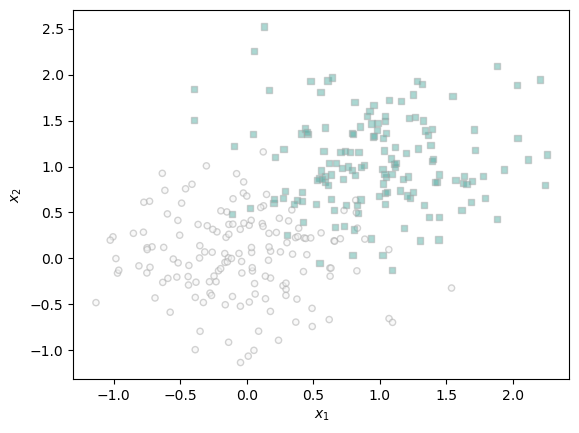

%load_ext autoreload
%autoreload 2
from logistic import LogisticRegression, GradientDescentOptimizerlogistic.py
Abstract
The goal of this blog post is to investigate an implementation of a logistic regression model. By running different datasets through the main training loop found later in this blog post we can investigate how a logistic regression model performs at classifying data and how the classification speed can be increased through a technique called momentum. We can also explore how the model performs when the dataset has more features than there are data points.
Part A: Implement Logistic Regression
import torch
from matplotlib import pyplot as plt
def classification_data(n_points = 300, noise = 0.2, p_dims = 2):
y = torch.arange(n_points) >= int(n_points/2)
y = 1.0*y
X = y[:, None] + torch.normal(0.0, noise, size = (n_points,p_dims))
X = torch.cat((X, torch.ones((X.shape[0], 1))), 1)
return X, y
def plot_classification_data(X, y, ax):
assert X.shape[1] == 3, "This function only works for data created with p_dims == 2"
targets = [0, 1]
markers = ["o" , ","]
for i in range(2):
ix = y == targets[i]
ax.scatter(X[ix,0], X[ix,1], s = 20, c = y[ix], facecolors = "none", edgecolors = "darkgrey", cmap = "BrBG", vmin = -2, vmax = 2, alpha = 0.5, marker = markers[i])
ax.set(xlabel = r"$x_1$", ylabel = r"$x_2$")
fig, ax = plt.subplots(1, 1)
X, y = classification_data(noise = 0.5)
plot_classification_data(X, y, ax)
Visualization Code
Taken from live notes by Professor Chodrow
def draw_line(w, x_min, x_max, ax, **kwargs):
w_ = w.flatten()
x = torch.linspace(x_min, x_max, 101)
y = -(w_[0]*x + w_[2])/w_[1]
l = ax.plot(x, y, **kwargs)Main Training Loop
The following code will be used to streamline testing of different learning rates and how momentum affects the efficiency of logistic regression model training. One plot will be produced to visualize the dividing line in the data and another plot will be used to visualize the loss value over the iterations.
def train_LR(X, y, alpha, beta, max_iters):
LR = LogisticRegression()
opt = GradientDescentOptimizer(LR)
loss = 1
loss_vec = []
weights = []
w_prev = None
for _ in range(max_iters):
# add other stuff to e.g. keep track of the loss over time.
loss = LR.loss(X,y)
loss_vec.append(loss)
if w_prev == None:
w_prev = LR.w
w = LR.w
weights.append(w)
opt.step(X, y, alpha = alpha, beta = beta, w_prev=w_prev)
w_prev = w
return LR.w, loss_vec
w_nm, loss_vec_nm = train_LR(X, y, alpha=0.1, beta=0.0, max_iters=3000)
w_wm, loss_vec_wm = train_LR(X, y, alpha=0.5, beta=0.9, max_iters=3000)
fig, ax = plt.subplots(2, 2, figsize=(10,9))
plot_classification_data(X, y, ax[0,0])
plot_classification_data(X, y, ax[1,0])
draw_line(w_nm, -1, 2, ax[0,0], color = "black")
draw_line(w_wm, -1, 2, ax[1,0], color = "black")
ax[0,1].plot(loss_vec_nm, color = "slategrey")
ax[0,1].scatter(torch.arange(len(loss_vec_nm)), loss_vec_nm, color = "slategrey")
ax[1,1].plot(loss_vec_wm, color = "slategrey")
ax[1,1].scatter(torch.arange(len(loss_vec_wm)), loss_vec_wm, color = "slategrey")
labs = plt.gca().set(xlabel = "Logistic Regression Iteration (Updates Only)", ylabel = "loss")
ax[0,0].set_title("Logistic Regression Dividing Line no Momentum")
ax[1,0].set_title("Logistic Regression Dividing Line with Momentum")
ax[0,1].set_title("Logistic Regression Loss no Momentum")
ax[1,1].set_title("Logistic Regression Loss with Momentum")
ax[0,1].set_xlabel("Iterations")
ax[1,1].set_xlabel("Iterations")
ax[0,1].set_ylabel("Loss")
ax[1,1].set_ylabel("Loss")tensor([0.2322, 0.8893, 0.2849])
tensor([0.2423, 0.8953, 0.2664])
tensor([0.2523, 0.9014, 0.2483])
tensor([0.2623, 0.9075, 0.2303])
tensor([0.2722, 0.9135, 0.2126])
tensor([0.2821, 0.9196, 0.1951])
tensor([0.2920, 0.9257, 0.1779])
tensor([0.3018, 0.9317, 0.1609])
tensor([0.3116, 0.9378, 0.1441])
tensor([0.3214, 0.9439, 0.1275])
tensor([0.3311, 0.9499, 0.1112])
tensor([0.3408, 0.9560, 0.0951])
tensor([0.3504, 0.9621, 0.0792])
tensor([0.3600, 0.9681, 0.0635])
tensor([0.3695, 0.9742, 0.0480])
tensor([0.3790, 0.9802, 0.0326])
tensor([0.3884, 0.9862, 0.0175])
tensor([0.3978, 0.9922, 0.0026])
tensor([ 0.4072, 0.9982, -0.0121])
tensor([ 0.4165, 1.0042, -0.0267])
tensor([ 0.4258, 1.0102, -0.0410])
tensor([ 0.4350, 1.0162, -0.0552])
tensor([ 0.4441, 1.0222, -0.0692])
tensor([ 0.4533, 1.0281, -0.0831])
tensor([ 0.4623, 1.0341, -0.0968])
tensor([ 0.4714, 1.0400, -0.1103])
tensor([ 0.4803, 1.0459, -0.1236])
tensor([ 0.4893, 1.0518, -0.1368])
tensor([ 0.4982, 1.0577, -0.1499])
tensor([ 0.5070, 1.0636, -0.1628])
tensor([ 0.5158, 1.0694, -0.1755])
tensor([ 0.5245, 1.0752, -0.1881])
tensor([ 0.5332, 1.0811, -0.2005])
tensor([ 0.5418, 1.0869, -0.2128])
tensor([ 0.5504, 1.0927, -0.2250])
tensor([ 0.5590, 1.0984, -0.2370])
tensor([ 0.5675, 1.1042, -0.2489])
tensor([ 0.5759, 1.1099, -0.2607])
tensor([ 0.5843, 1.1157, -0.2723])
tensor([ 0.5927, 1.1214, -0.2839])
tensor([ 0.6010, 1.1270, -0.2952])
tensor([ 0.6093, 1.1327, -0.3065])
tensor([ 0.6175, 1.1384, -0.3176])
tensor([ 0.6256, 1.1440, -0.3287])
tensor([ 0.6337, 1.1496, -0.3396])
tensor([ 0.6418, 1.1552, -0.3504])
tensor([ 0.6498, 1.1608, -0.3611])
tensor([ 0.6578, 1.1663, -0.3717])
tensor([ 0.6658, 1.1719, -0.3821])
tensor([ 0.6736, 1.1774, -0.3925])
tensor([ 0.6815, 1.1829, -0.4028])
tensor([ 0.6893, 1.1883, -0.4129])
tensor([ 0.6970, 1.1938, -0.4230])
tensor([ 0.7047, 1.1992, -0.4329])
tensor([ 0.7124, 1.2047, -0.4428])
tensor([ 0.7200, 1.2101, -0.4526])
tensor([ 0.7276, 1.2154, -0.4623])
tensor([ 0.7351, 1.2208, -0.4719])
tensor([ 0.7426, 1.2262, -0.4814])
tensor([ 0.7500, 1.2315, -0.4908])
tensor([ 0.7574, 1.2368, -0.5001])
tensor([ 0.7648, 1.2421, -0.5093])
tensor([ 0.7721, 1.2473, -0.5185])
tensor([ 0.7794, 1.2526, -0.5276])
tensor([ 0.7866, 1.2578, -0.5366])
tensor([ 0.7938, 1.2630, -0.5455])
tensor([ 0.8010, 1.2682, -0.5543])
tensor([ 0.8081, 1.2734, -0.5631])
tensor([ 0.8151, 1.2785, -0.5717])
tensor([ 0.8222, 1.2836, -0.5803])
tensor([ 0.8291, 1.2887, -0.5889])
tensor([ 0.8361, 1.2938, -0.5973])
tensor([ 0.8430, 1.2989, -0.6057])
tensor([ 0.8499, 1.3039, -0.6140])
tensor([ 0.8567, 1.3090, -0.6223])
tensor([ 0.8635, 1.3140, -0.6305])
tensor([ 0.8702, 1.3190, -0.6386])
tensor([ 0.8769, 1.3240, -0.6466])
tensor([ 0.8836, 1.3289, -0.6546])
tensor([ 0.8903, 1.3338, -0.6625])
tensor([ 0.8969, 1.3388, -0.6704])
tensor([ 0.9034, 1.3437, -0.6782])
tensor([ 0.9100, 1.3485, -0.6859])
tensor([ 0.9164, 1.3534, -0.6936])
tensor([ 0.9229, 1.3582, -0.7012])
tensor([ 0.9293, 1.3631, -0.7088])
tensor([ 0.9357, 1.3679, -0.7163])
tensor([ 0.9421, 1.3727, -0.7237])
tensor([ 0.9484, 1.3774, -0.7311])
tensor([ 0.9547, 1.3822, -0.7385])
tensor([ 0.9609, 1.3869, -0.7457])
tensor([ 0.9671, 1.3916, -0.7530])
tensor([ 0.9733, 1.3963, -0.7602])
tensor([ 0.9795, 1.4010, -0.7673])
tensor([ 0.9856, 1.4057, -0.7744])
tensor([ 0.9916, 1.4103, -0.7814])
tensor([ 0.9977, 1.4150, -0.7884])
tensor([ 1.0037, 1.4196, -0.7953])
tensor([ 1.0097, 1.4242, -0.8022])
tensor([ 1.0156, 1.4287, -0.8090])
tensor([ 1.0216, 1.4333, -0.8158])
tensor([ 1.0275, 1.4379, -0.8225])
tensor([ 1.0333, 1.4424, -0.8292])
tensor([ 1.0391, 1.4469, -0.8358])
tensor([ 1.0449, 1.4514, -0.8424])
tensor([ 1.0507, 1.4559, -0.8490])
tensor([ 1.0565, 1.4603, -0.8555])
tensor([ 1.0622, 1.4648, -0.8620])
tensor([ 1.0678, 1.4692, -0.8684])
tensor([ 1.0735, 1.4736, -0.8748])
tensor([ 1.0791, 1.4780, -0.8812])
tensor([ 1.0847, 1.4824, -0.8875])
tensor([ 1.0903, 1.4867, -0.8937])
tensor([ 1.0958, 1.4911, -0.9000])
tensor([ 1.1013, 1.4954, -0.9062])
tensor([ 1.1068, 1.4997, -0.9123])
tensor([ 1.1122, 1.5040, -0.9184])
tensor([ 1.1177, 1.5083, -0.9245])
tensor([ 1.1231, 1.5126, -0.9305])
tensor([ 1.1284, 1.5168, -0.9365])
tensor([ 1.1338, 1.5211, -0.9425])
tensor([ 1.1391, 1.5253, -0.9484])
tensor([ 1.1444, 1.5295, -0.9543])
tensor([ 1.1497, 1.5337, -0.9602])
tensor([ 1.1549, 1.5379, -0.9660])
tensor([ 1.1601, 1.5421, -0.9718])
tensor([ 1.1653, 1.5462, -0.9776])
tensor([ 1.1705, 1.5504, -0.9833])
tensor([ 1.1756, 1.5545, -0.9890])
tensor([ 1.1807, 1.5586, -0.9947])
tensor([ 1.1858, 1.5627, -1.0003])
tensor([ 1.1909, 1.5668, -1.0059])
tensor([ 1.1959, 1.5708, -1.0114])
tensor([ 1.2009, 1.5749, -1.0170])
tensor([ 1.2059, 1.5789, -1.0225])
tensor([ 1.2109, 1.5829, -1.0280])
tensor([ 1.2158, 1.5869, -1.0334])
tensor([ 1.2208, 1.5909, -1.0388])
tensor([ 1.2257, 1.5949, -1.0442])
tensor([ 1.2305, 1.5989, -1.0496])
tensor([ 1.2354, 1.6028, -1.0549])
tensor([ 1.2402, 1.6068, -1.0602])
tensor([ 1.2450, 1.6107, -1.0655])
tensor([ 1.2498, 1.6146, -1.0707])
tensor([ 1.2546, 1.6185, -1.0759])
tensor([ 1.2594, 1.6224, -1.0811])
tensor([ 1.2641, 1.6263, -1.0863])
tensor([ 1.2688, 1.6302, -1.0914])
tensor([ 1.2735, 1.6340, -1.0965])
tensor([ 1.2781, 1.6379, -1.1016])
tensor([ 1.2828, 1.6417, -1.1067])
tensor([ 1.2874, 1.6455, -1.1117])
tensor([ 1.2920, 1.6493, -1.1167])
tensor([ 1.2966, 1.6531, -1.1217])
tensor([ 1.3011, 1.6569, -1.1267])
tensor([ 1.3056, 1.6606, -1.1316])
tensor([ 1.3102, 1.6644, -1.1365])
tensor([ 1.3147, 1.6681, -1.1414])
tensor([ 1.3191, 1.6719, -1.1463])
tensor([ 1.3236, 1.6756, -1.1511])
tensor([ 1.3280, 1.6793, -1.1559])
tensor([ 1.3325, 1.6830, -1.1607])
tensor([ 1.3369, 1.6867, -1.1655])
tensor([ 1.3412, 1.6903, -1.1702])
tensor([ 1.3456, 1.6940, -1.1750])
tensor([ 1.3500, 1.6976, -1.1797])
tensor([ 1.3543, 1.7013, -1.1843])
tensor([ 1.3586, 1.7049, -1.1890])
tensor([ 1.3629, 1.7085, -1.1936])
tensor([ 1.3671, 1.7121, -1.1983])
tensor([ 1.3714, 1.7157, -1.2029])
tensor([ 1.3756, 1.7193, -1.2074])
tensor([ 1.3799, 1.7229, -1.2120])
tensor([ 1.3841, 1.7264, -1.2165])
tensor([ 1.3882, 1.7300, -1.2210])
tensor([ 1.3924, 1.7335, -1.2255])
tensor([ 1.3966, 1.7370, -1.2300])
tensor([ 1.4007, 1.7406, -1.2345])
tensor([ 1.4048, 1.7441, -1.2389])
tensor([ 1.4089, 1.7476, -1.2433])
tensor([ 1.4130, 1.7510, -1.2477])
tensor([ 1.4171, 1.7545, -1.2521])
tensor([ 1.4211, 1.7580, -1.2565])
tensor([ 1.4251, 1.7614, -1.2608])
tensor([ 1.4292, 1.7649, -1.2651])
tensor([ 1.4332, 1.7683, -1.2694])
tensor([ 1.4371, 1.7717, -1.2737])
tensor([ 1.4411, 1.7752, -1.2780])
tensor([ 1.4451, 1.7786, -1.2822])
tensor([ 1.4490, 1.7820, -1.2865])
tensor([ 1.4529, 1.7853, -1.2907])
tensor([ 1.4568, 1.7887, -1.2949])
tensor([ 1.4607, 1.7921, -1.2991])
tensor([ 1.4646, 1.7954, -1.3032])
tensor([ 1.4685, 1.7988, -1.3074])
tensor([ 1.4723, 1.8021, -1.3115])
tensor([ 1.4761, 1.8055, -1.3156])
tensor([ 1.4800, 1.8088, -1.3197])
tensor([ 1.4838, 1.8121, -1.3238])
tensor([ 1.4875, 1.8154, -1.3279])
tensor([ 1.4913, 1.8187, -1.3319])
tensor([ 1.4951, 1.8219, -1.3359])
tensor([ 1.4988, 1.8252, -1.3400])
tensor([ 1.5026, 1.8285, -1.3440])
tensor([ 1.5063, 1.8317, -1.3479])
tensor([ 1.5100, 1.8350, -1.3519])
tensor([ 1.5137, 1.8382, -1.3559])
tensor([ 1.5173, 1.8414, -1.3598])
tensor([ 1.5210, 1.8447, -1.3637])
tensor([ 1.5247, 1.8479, -1.3676])
tensor([ 1.5283, 1.8511, -1.3715])
tensor([ 1.5319, 1.8543, -1.3754])
tensor([ 1.5355, 1.8574, -1.3793])
tensor([ 1.5391, 1.8606, -1.3831])
tensor([ 1.5427, 1.8638, -1.3870])
tensor([ 1.5463, 1.8669, -1.3908])
tensor([ 1.5498, 1.8701, -1.3946])
tensor([ 1.5534, 1.8732, -1.3984])
tensor([ 1.5569, 1.8764, -1.4022])
tensor([ 1.5604, 1.8795, -1.4059])
tensor([ 1.5639, 1.8826, -1.4097])
tensor([ 1.5674, 1.8857, -1.4134])
tensor([ 1.5709, 1.8888, -1.4171])
tensor([ 1.5744, 1.8919, -1.4209])
tensor([ 1.5778, 1.8950, -1.4245])
tensor([ 1.5813, 1.8981, -1.4282])
tensor([ 1.5847, 1.9011, -1.4319])
tensor([ 1.5881, 1.9042, -1.4356])
tensor([ 1.5915, 1.9073, -1.4392])
tensor([ 1.5949, 1.9103, -1.4428])
tensor([ 1.5983, 1.9133, -1.4465])
tensor([ 1.6017, 1.9164, -1.4501])
tensor([ 1.6050, 1.9194, -1.4537])
tensor([ 1.6084, 1.9224, -1.4572])
tensor([ 1.6117, 1.9254, -1.4608])
tensor([ 1.6150, 1.9284, -1.4644])
tensor([ 1.6184, 1.9314, -1.4679])
tensor([ 1.6217, 1.9344, -1.4715])
tensor([ 1.6250, 1.9374, -1.4750])
tensor([ 1.6282, 1.9403, -1.4785])
tensor([ 1.6315, 1.9433, -1.4820])
tensor([ 1.6348, 1.9462, -1.4855])
tensor([ 1.6380, 1.9492, -1.4889])
tensor([ 1.6413, 1.9521, -1.4924])
tensor([ 1.6445, 1.9551, -1.4958])
tensor([ 1.6477, 1.9580, -1.4993])
tensor([ 1.6509, 1.9609, -1.5027])
tensor([ 1.6541, 1.9638, -1.5061])
tensor([ 1.6573, 1.9667, -1.5095])
tensor([ 1.6605, 1.9696, -1.5129])
tensor([ 1.6636, 1.9725, -1.5163])
tensor([ 1.6668, 1.9754, -1.5197])
tensor([ 1.6699, 1.9783, -1.5230])
tensor([ 1.6730, 1.9811, -1.5264])
tensor([ 1.6762, 1.9840, -1.5297])
tensor([ 1.6793, 1.9868, -1.5331])
tensor([ 1.6824, 1.9897, -1.5364])
tensor([ 1.6855, 1.9925, -1.5397])
tensor([ 1.6886, 1.9954, -1.5430])
tensor([ 1.6916, 1.9982, -1.5463])
tensor([ 1.6947, 2.0010, -1.5496])
tensor([ 1.6977, 2.0038, -1.5528])
tensor([ 1.7008, 2.0066, -1.5561])
tensor([ 1.7038, 2.0094, -1.5593])
tensor([ 1.7068, 2.0122, -1.5626])
tensor([ 1.7099, 2.0150, -1.5658])
tensor([ 1.7129, 2.0178, -1.5690])
tensor([ 1.7159, 2.0206, -1.5722])
tensor([ 1.7188, 2.0233, -1.5754])
tensor([ 1.7218, 2.0261, -1.5786])
tensor([ 1.7248, 2.0289, -1.5818])
tensor([ 1.7278, 2.0316, -1.5849])
tensor([ 1.7307, 2.0344, -1.5881])
tensor([ 1.7336, 2.0371, -1.5912])
tensor([ 1.7366, 2.0398, -1.5944])
tensor([ 1.7395, 2.0426, -1.5975])
tensor([ 1.7424, 2.0453, -1.6006])
tensor([ 1.7453, 2.0480, -1.6037])
tensor([ 1.7482, 2.0507, -1.6068])
tensor([ 1.7511, 2.0534, -1.6099])
tensor([ 1.7540, 2.0561, -1.6130])
tensor([ 1.7568, 2.0588, -1.6161])
tensor([ 1.7597, 2.0615, -1.6191])
tensor([ 1.7626, 2.0641, -1.6222])
tensor([ 1.7654, 2.0668, -1.6252])
tensor([ 1.7682, 2.0695, -1.6283])
tensor([ 1.7711, 2.0721, -1.6313])
tensor([ 1.7739, 2.0748, -1.6343])
tensor([ 1.7767, 2.0774, -1.6373])
tensor([ 1.7795, 2.0801, -1.6403])
tensor([ 1.7823, 2.0827, -1.6433])
tensor([ 1.7851, 2.0853, -1.6463])
tensor([ 1.7879, 2.0880, -1.6493])
tensor([ 1.7906, 2.0906, -1.6523])
tensor([ 1.7934, 2.0932, -1.6552])
tensor([ 1.7961, 2.0958, -1.6582])
tensor([ 1.7989, 2.0984, -1.6611])
tensor([ 1.8016, 2.1010, -1.6640])
tensor([ 1.8044, 2.1036, -1.6670])
tensor([ 1.8071, 2.1062, -1.6699])
tensor([ 1.8098, 2.1088, -1.6728])
tensor([ 1.8125, 2.1113, -1.6757])
tensor([ 1.8152, 2.1139, -1.6786])
tensor([ 1.8179, 2.1165, -1.6815])
tensor([ 1.8206, 2.1190, -1.6844])
tensor([ 1.8232, 2.1216, -1.6872])
tensor([ 1.8259, 2.1241, -1.6901])
tensor([ 1.8286, 2.1267, -1.6929])
tensor([ 1.8312, 2.1292, -1.6958])
tensor([ 1.8339, 2.1317, -1.6986])
tensor([ 1.8365, 2.1343, -1.7015])
tensor([ 1.8391, 2.1368, -1.7043])
tensor([ 1.8418, 2.1393, -1.7071])
tensor([ 1.8444, 2.1418, -1.7099])
tensor([ 1.8470, 2.1443, -1.7127])
tensor([ 1.8496, 2.1468, -1.7155])
tensor([ 1.8522, 2.1493, -1.7183])
tensor([ 1.8548, 2.1518, -1.7211])
tensor([ 1.8574, 2.1543, -1.7238])
tensor([ 1.8599, 2.1568, -1.7266])
tensor([ 1.8625, 2.1593, -1.7294])
tensor([ 1.8651, 2.1617, -1.7321])
tensor([ 1.8676, 2.1642, -1.7349])
tensor([ 1.8702, 2.1667, -1.7376])
tensor([ 1.8727, 2.1691, -1.7403])
tensor([ 1.8752, 2.1716, -1.7430])
tensor([ 1.8778, 2.1740, -1.7458])
tensor([ 1.8803, 2.1765, -1.7485])
tensor([ 1.8828, 2.1789, -1.7512])
tensor([ 1.8853, 2.1813, -1.7539])
tensor([ 1.8878, 2.1837, -1.7565])
tensor([ 1.8903, 2.1862, -1.7592])
tensor([ 1.8928, 2.1886, -1.7619])
tensor([ 1.8952, 2.1910, -1.7646])
tensor([ 1.8977, 2.1934, -1.7672])
tensor([ 1.9002, 2.1958, -1.7699])
tensor([ 1.9026, 2.1982, -1.7725])
tensor([ 1.9051, 2.2006, -1.7752])
tensor([ 1.9075, 2.2030, -1.7778])
tensor([ 1.9100, 2.2054, -1.7804])
tensor([ 1.9124, 2.2078, -1.7830])
tensor([ 1.9148, 2.2101, -1.7857])
tensor([ 1.9173, 2.2125, -1.7883])
tensor([ 1.9197, 2.2149, -1.7909])
tensor([ 1.9221, 2.2172, -1.7935])
tensor([ 1.9245, 2.2196, -1.7960])
tensor([ 1.9269, 2.2219, -1.7986])
tensor([ 1.9293, 2.2243, -1.8012])
tensor([ 1.9317, 2.2266, -1.8038])
tensor([ 1.9340, 2.2290, -1.8063])
tensor([ 1.9364, 2.2313, -1.8089])
tensor([ 1.9388, 2.2336, -1.8114])
tensor([ 1.9411, 2.2360, -1.8140])
tensor([ 1.9435, 2.2383, -1.8165])
tensor([ 1.9458, 2.2406, -1.8191])
tensor([ 1.9482, 2.2429, -1.8216])
tensor([ 1.9505, 2.2452, -1.8241])
tensor([ 1.9528, 2.2475, -1.8266])
tensor([ 1.9552, 2.2498, -1.8291])
tensor([ 1.9575, 2.2521, -1.8316])
tensor([ 1.9598, 2.2544, -1.8341])
tensor([ 1.9621, 2.2567, -1.8366])
tensor([ 1.9644, 2.2590, -1.8391])
tensor([ 1.9667, 2.2613, -1.8416])
tensor([ 1.9690, 2.2635, -1.8440])
tensor([ 1.9713, 2.2658, -1.8465])
tensor([ 1.9736, 2.2681, -1.8490])
tensor([ 1.9758, 2.2703, -1.8514])
tensor([ 1.9781, 2.2726, -1.8539])
tensor([ 1.9804, 2.2749, -1.8563])
tensor([ 1.9826, 2.2771, -1.8588])
tensor([ 1.9849, 2.2794, -1.8612])
tensor([ 1.9871, 2.2816, -1.8636])
tensor([ 1.9894, 2.2838, -1.8660])
tensor([ 1.9916, 2.2861, -1.8684])
tensor([ 1.9938, 2.2883, -1.8709])
tensor([ 1.9960, 2.2905, -1.8733])
tensor([ 1.9983, 2.2927, -1.8757])
tensor([ 2.0005, 2.2950, -1.8781])
tensor([ 2.0027, 2.2972, -1.8804])
tensor([ 2.0049, 2.2994, -1.8828])
tensor([ 2.0071, 2.3016, -1.8852])
tensor([ 2.0093, 2.3038, -1.8876])
tensor([ 2.0115, 2.3060, -1.8899])
tensor([ 2.0137, 2.3082, -1.8923])
tensor([ 2.0158, 2.3104, -1.8947])
tensor([ 2.0180, 2.3126, -1.8970])
tensor([ 2.0202, 2.3147, -1.8994])
tensor([ 2.0223, 2.3169, -1.9017])
tensor([ 2.0245, 2.3191, -1.9040])
tensor([ 2.0266, 2.3213, -1.9064])
tensor([ 2.0288, 2.3234, -1.9087])
tensor([ 2.0309, 2.3256, -1.9110])
tensor([ 2.0331, 2.3278, -1.9133])
tensor([ 2.0352, 2.3299, -1.9156])
tensor([ 2.0373, 2.3321, -1.9179])
tensor([ 2.0394, 2.3342, -1.9202])
tensor([ 2.0416, 2.3364, -1.9225])
tensor([ 2.0437, 2.3385, -1.9248])
tensor([ 2.0458, 2.3407, -1.9271])
tensor([ 2.0479, 2.3428, -1.9294])
tensor([ 2.0500, 2.3449, -1.9317])
tensor([ 2.0521, 2.3470, -1.9339])
tensor([ 2.0542, 2.3492, -1.9362])
tensor([ 2.0563, 2.3513, -1.9385])
tensor([ 2.0583, 2.3534, -1.9407])
tensor([ 2.0604, 2.3555, -1.9430])
tensor([ 2.0625, 2.3576, -1.9452])
tensor([ 2.0645, 2.3597, -1.9475])
tensor([ 2.0666, 2.3618, -1.9497])
tensor([ 2.0687, 2.3639, -1.9519])
tensor([ 2.0707, 2.3660, -1.9542])
tensor([ 2.0728, 2.3681, -1.9564])
tensor([ 2.0748, 2.3702, -1.9586])
tensor([ 2.0768, 2.3723, -1.9608])
tensor([ 2.0789, 2.3744, -1.9630])
tensor([ 2.0809, 2.3765, -1.9652])
tensor([ 2.0829, 2.3785, -1.9674])
tensor([ 2.0849, 2.3806, -1.9696])
tensor([ 2.0870, 2.3827, -1.9718])
tensor([ 2.0890, 2.3847, -1.9740])
tensor([ 2.0910, 2.3868, -1.9762])
tensor([ 2.0930, 2.3889, -1.9784])
tensor([ 2.0950, 2.3909, -1.9805])
tensor([ 2.0970, 2.3930, -1.9827])
tensor([ 2.0990, 2.3950, -1.9849])
tensor([ 2.1010, 2.3971, -1.9870])
tensor([ 2.1029, 2.3991, -1.9892])
tensor([ 2.1049, 2.4011, -1.9913])
tensor([ 2.1069, 2.4032, -1.9935])
tensor([ 2.1088, 2.4052, -1.9956])
tensor([ 2.1108, 2.4072, -1.9977])
tensor([ 2.1128, 2.4093, -1.9999])
tensor([ 2.1147, 2.4113, -2.0020])
tensor([ 2.1167, 2.4133, -2.0041])
tensor([ 2.1186, 2.4153, -2.0063])
tensor([ 2.1206, 2.4173, -2.0084])
tensor([ 2.1225, 2.4193, -2.0105])
tensor([ 2.1244, 2.4213, -2.0126])
tensor([ 2.1264, 2.4233, -2.0147])
tensor([ 2.1283, 2.4253, -2.0168])
tensor([ 2.1302, 2.4273, -2.0189])
tensor([ 2.1321, 2.4293, -2.0210])
tensor([ 2.1341, 2.4313, -2.0231])
tensor([ 2.1360, 2.4333, -2.0251])
tensor([ 2.1379, 2.4353, -2.0272])
tensor([ 2.1398, 2.4373, -2.0293])
tensor([ 2.1417, 2.4392, -2.0314])
tensor([ 2.1436, 2.4412, -2.0334])
tensor([ 2.1455, 2.4432, -2.0355])
tensor([ 2.1473, 2.4452, -2.0376])
tensor([ 2.1492, 2.4471, -2.0396])
tensor([ 2.1511, 2.4491, -2.0417])
tensor([ 2.1530, 2.4510, -2.0437])
tensor([ 2.1549, 2.4530, -2.0458])
tensor([ 2.1567, 2.4550, -2.0478])
tensor([ 2.1586, 2.4569, -2.0498])
tensor([ 2.1604, 2.4589, -2.0519])
tensor([ 2.1623, 2.4608, -2.0539])
tensor([ 2.1642, 2.4627, -2.0559])
tensor([ 2.1660, 2.4647, -2.0579])
tensor([ 2.1679, 2.4666, -2.0599])
tensor([ 2.1697, 2.4685, -2.0620])
tensor([ 2.1715, 2.4705, -2.0640])
tensor([ 2.1734, 2.4724, -2.0660])
tensor([ 2.1752, 2.4743, -2.0680])
tensor([ 2.1770, 2.4762, -2.0700])
tensor([ 2.1788, 2.4782, -2.0720])
tensor([ 2.1807, 2.4801, -2.0740])
tensor([ 2.1825, 2.4820, -2.0759])
tensor([ 2.1843, 2.4839, -2.0779])
tensor([ 2.1861, 2.4858, -2.0799])
tensor([ 2.1879, 2.4877, -2.0819])
tensor([ 2.1897, 2.4896, -2.0838])
tensor([ 2.1915, 2.4915, -2.0858])
tensor([ 2.1933, 2.4934, -2.0878])
tensor([ 2.1951, 2.4953, -2.0897])
tensor([ 2.1969, 2.4972, -2.0917])
tensor([ 2.1987, 2.4991, -2.0936])
tensor([ 2.2004, 2.5010, -2.0956])
tensor([ 2.2022, 2.5028, -2.0975])
tensor([ 2.2040, 2.5047, -2.0995])
tensor([ 2.2058, 2.5066, -2.1014])
tensor([ 2.2075, 2.5085, -2.1034])
tensor([ 2.2093, 2.5103, -2.1053])
tensor([ 2.2110, 2.5122, -2.1072])
tensor([ 2.2128, 2.5141, -2.1091])
tensor([ 2.2146, 2.5159, -2.1111])
tensor([ 2.2163, 2.5178, -2.1130])
tensor([ 2.2181, 2.5196, -2.1149])
tensor([ 2.2198, 2.5215, -2.1168])
tensor([ 2.2215, 2.5233, -2.1187])
tensor([ 2.2233, 2.5252, -2.1206])
tensor([ 2.2250, 2.5270, -2.1225])
tensor([ 2.2267, 2.5289, -2.1244])
tensor([ 2.2285, 2.5307, -2.1263])
tensor([ 2.2302, 2.5326, -2.1282])
tensor([ 2.2319, 2.5344, -2.1301])
tensor([ 2.2336, 2.5362, -2.1320])
tensor([ 2.2353, 2.5380, -2.1338])
tensor([ 2.2370, 2.5399, -2.1357])
tensor([ 2.2387, 2.5417, -2.1376])
tensor([ 2.2404, 2.5435, -2.1395])
tensor([ 2.2421, 2.5453, -2.1413])
tensor([ 2.2438, 2.5472, -2.1432])
tensor([ 2.2455, 2.5490, -2.1451])
tensor([ 2.2472, 2.5508, -2.1469])
tensor([ 2.2489, 2.5526, -2.1488])
tensor([ 2.2506, 2.5544, -2.1506])
tensor([ 2.2523, 2.5562, -2.1525])
tensor([ 2.2540, 2.5580, -2.1543])
tensor([ 2.2556, 2.5598, -2.1561])
tensor([ 2.2573, 2.5616, -2.1580])
tensor([ 2.2590, 2.5634, -2.1598])
tensor([ 2.2606, 2.5652, -2.1617])
tensor([ 2.2623, 2.5670, -2.1635])
tensor([ 2.2640, 2.5688, -2.1653])
tensor([ 2.2656, 2.5705, -2.1671])
tensor([ 2.2673, 2.5723, -2.1689])
tensor([ 2.2689, 2.5741, -2.1708])
tensor([ 2.2706, 2.5759, -2.1726])
tensor([ 2.2722, 2.5776, -2.1744])
tensor([ 2.2739, 2.5794, -2.1762])
tensor([ 2.2755, 2.5812, -2.1780])
tensor([ 2.2771, 2.5830, -2.1798])
tensor([ 2.2788, 2.5847, -2.1816])
tensor([ 2.2804, 2.5865, -2.1834])
tensor([ 2.2820, 2.5882, -2.1852])
tensor([ 2.2836, 2.5900, -2.1870])
tensor([ 2.2853, 2.5917, -2.1888])
tensor([ 2.2869, 2.5935, -2.1905])
tensor([ 2.2885, 2.5952, -2.1923])
tensor([ 2.2901, 2.5970, -2.1941])
tensor([ 2.2917, 2.5987, -2.1959])
tensor([ 2.2933, 2.6005, -2.1976])
tensor([ 2.2949, 2.6022, -2.1994])
tensor([ 2.2965, 2.6040, -2.2012])
tensor([ 2.2981, 2.6057, -2.2029])
tensor([ 2.2997, 2.6074, -2.2047])
tensor([ 2.3013, 2.6092, -2.2064])
tensor([ 2.3029, 2.6109, -2.2082])
tensor([ 2.3045, 2.6126, -2.2099])
tensor([ 2.3061, 2.6143, -2.2117])
tensor([ 2.3077, 2.6161, -2.2134])
tensor([ 2.3092, 2.6178, -2.2152])
tensor([ 2.3108, 2.6195, -2.2169])
tensor([ 2.3124, 2.6212, -2.2187])
tensor([ 2.3140, 2.6229, -2.2204])
tensor([ 2.3155, 2.6246, -2.2221])
tensor([ 2.3171, 2.6263, -2.2238])
tensor([ 2.3187, 2.6280, -2.2256])
tensor([ 2.3202, 2.6297, -2.2273])
tensor([ 2.3218, 2.6314, -2.2290])
tensor([ 2.3233, 2.6331, -2.2307])
tensor([ 2.3249, 2.6348, -2.2324])
tensor([ 2.3264, 2.6365, -2.2342])
tensor([ 2.3280, 2.6382, -2.2359])
tensor([ 2.3295, 2.6399, -2.2376])
tensor([ 2.3310, 2.6416, -2.2393])
tensor([ 2.3326, 2.6433, -2.2410])
tensor([ 2.3341, 2.6450, -2.2427])
tensor([ 2.3357, 2.6467, -2.2444])
tensor([ 2.3372, 2.6483, -2.2461])
tensor([ 2.3387, 2.6500, -2.2477])
tensor([ 2.3402, 2.6517, -2.2494])
tensor([ 2.3418, 2.6534, -2.2511])
tensor([ 2.3433, 2.6550, -2.2528])
tensor([ 2.3448, 2.6567, -2.2545])
tensor([ 2.3463, 2.6584, -2.2561])
tensor([ 2.3478, 2.6600, -2.2578])
tensor([ 2.3493, 2.6617, -2.2595])
tensor([ 2.3508, 2.6633, -2.2612])
tensor([ 2.3523, 2.6650, -2.2628])
tensor([ 2.3538, 2.6666, -2.2645])
tensor([ 2.3553, 2.6683, -2.2661])
tensor([ 2.3568, 2.6700, -2.2678])
tensor([ 2.3583, 2.6716, -2.2695])
tensor([ 2.3598, 2.6732, -2.2711])
tensor([ 2.3613, 2.6749, -2.2728])
tensor([ 2.3628, 2.6765, -2.2744])
tensor([ 2.3643, 2.6782, -2.2760])
tensor([ 2.3658, 2.6798, -2.2777])
tensor([ 2.3673, 2.6814, -2.2793])
tensor([ 2.3687, 2.6831, -2.2810])
tensor([ 2.3702, 2.6847, -2.2826])
tensor([ 2.3717, 2.6863, -2.2842])
tensor([ 2.3731, 2.6880, -2.2859])
tensor([ 2.3746, 2.6896, -2.2875])
tensor([ 2.3761, 2.6912, -2.2891])
tensor([ 2.3775, 2.6928, -2.2907])
tensor([ 2.3790, 2.6945, -2.2924])
tensor([ 2.3805, 2.6961, -2.2940])
tensor([ 2.3819, 2.6977, -2.2956])
tensor([ 2.3834, 2.6993, -2.2972])
tensor([ 2.3848, 2.7009, -2.2988])
tensor([ 2.3863, 2.7025, -2.3004])
tensor([ 2.3877, 2.7041, -2.3020])
tensor([ 2.3892, 2.7057, -2.3036])
tensor([ 2.3906, 2.7073, -2.3052])
tensor([ 2.3920, 2.7089, -2.3068])
tensor([ 2.3935, 2.7105, -2.3084])
tensor([ 2.3949, 2.7121, -2.3100])
tensor([ 2.3963, 2.7137, -2.3116])
tensor([ 2.3978, 2.7153, -2.3132])
tensor([ 2.3992, 2.7169, -2.3148])
tensor([ 2.4006, 2.7185, -2.3164])
tensor([ 2.4020, 2.7201, -2.3179])
tensor([ 2.4035, 2.7217, -2.3195])
tensor([ 2.4049, 2.7233, -2.3211])
tensor([ 2.4063, 2.7248, -2.3227])
tensor([ 2.4077, 2.7264, -2.3242])
tensor([ 2.4091, 2.7280, -2.3258])
tensor([ 2.4105, 2.7296, -2.3274])
tensor([ 2.4119, 2.7311, -2.3289])
tensor([ 2.4134, 2.7327, -2.3305])
tensor([ 2.4148, 2.7343, -2.3321])
tensor([ 2.4162, 2.7359, -2.3336])
tensor([ 2.4176, 2.7374, -2.3352])
tensor([ 2.4190, 2.7390, -2.3367])
tensor([ 2.4203, 2.7406, -2.3383])
tensor([ 2.4217, 2.7421, -2.3398])
tensor([ 2.4231, 2.7437, -2.3414])
tensor([ 2.4245, 2.7452, -2.3429])
tensor([ 2.4259, 2.7468, -2.3445])
tensor([ 2.4273, 2.7483, -2.3460])
tensor([ 2.4287, 2.7499, -2.3475])
tensor([ 2.4300, 2.7514, -2.3491])
tensor([ 2.4314, 2.7530, -2.3506])
tensor([ 2.4328, 2.7545, -2.3521])
tensor([ 2.4342, 2.7561, -2.3537])
tensor([ 2.4355, 2.7576, -2.3552])
tensor([ 2.4369, 2.7592, -2.3567])
tensor([ 2.4383, 2.7607, -2.3582])
tensor([ 2.4396, 2.7622, -2.3598])
tensor([ 2.4410, 2.7638, -2.3613])
tensor([ 2.4424, 2.7653, -2.3628])
tensor([ 2.4437, 2.7668, -2.3643])
tensor([ 2.4451, 2.7684, -2.3658])
tensor([ 2.4464, 2.7699, -2.3673])
tensor([ 2.4478, 2.7714, -2.3688])
tensor([ 2.4491, 2.7729, -2.3703])
tensor([ 2.4505, 2.7745, -2.3718])
tensor([ 2.4518, 2.7760, -2.3733])
tensor([ 2.4532, 2.7775, -2.3748])
tensor([ 2.4545, 2.7790, -2.3763])
tensor([ 2.4559, 2.7805, -2.3778])
tensor([ 2.4572, 2.7820, -2.3793])
tensor([ 2.4585, 2.7835, -2.3808])
tensor([ 2.4599, 2.7851, -2.3823])
tensor([ 2.4612, 2.7866, -2.3838])
tensor([ 2.4625, 2.7881, -2.3853])
tensor([ 2.4639, 2.7896, -2.3867])
tensor([ 2.4652, 2.7911, -2.3882])
tensor([ 2.4665, 2.7926, -2.3897])
tensor([ 2.4678, 2.7941, -2.3912])
tensor([ 2.4691, 2.7956, -2.3927])
tensor([ 2.4705, 2.7971, -2.3941])
tensor([ 2.4718, 2.7986, -2.3956])
tensor([ 2.4731, 2.8001, -2.3971])
tensor([ 2.4744, 2.8015, -2.3985])
tensor([ 2.4757, 2.8030, -2.4000])
tensor([ 2.4770, 2.8045, -2.4015])
tensor([ 2.4783, 2.8060, -2.4029])
tensor([ 2.4796, 2.8075, -2.4044])
tensor([ 2.4809, 2.8090, -2.4058])
tensor([ 2.4822, 2.8104, -2.4073])
tensor([ 2.4835, 2.8119, -2.4087])
tensor([ 2.4848, 2.8134, -2.4102])
tensor([ 2.4861, 2.8149, -2.4116])
tensor([ 2.4874, 2.8163, -2.4131])
tensor([ 2.4887, 2.8178, -2.4145])
tensor([ 2.4900, 2.8193, -2.4160])
tensor([ 2.4913, 2.8208, -2.4174])
tensor([ 2.4926, 2.8222, -2.4188])
tensor([ 2.4939, 2.8237, -2.4203])
tensor([ 2.4951, 2.8252, -2.4217])
tensor([ 2.4964, 2.8266, -2.4231])
tensor([ 2.4977, 2.8281, -2.4246])
tensor([ 2.4990, 2.8295, -2.4260])
tensor([ 2.5002, 2.8310, -2.4274])
tensor([ 2.5015, 2.8324, -2.4288])
tensor([ 2.5028, 2.8339, -2.4303])
tensor([ 2.5041, 2.8353, -2.4317])
tensor([ 2.5053, 2.8368, -2.4331])
tensor([ 2.5066, 2.8382, -2.4345])
tensor([ 2.5079, 2.8397, -2.4359])
tensor([ 2.5091, 2.8411, -2.4373])
tensor([ 2.5104, 2.8426, -2.4388])
tensor([ 2.5116, 2.8440, -2.4402])
tensor([ 2.5129, 2.8455, -2.4416])
tensor([ 2.5141, 2.8469, -2.4430])
tensor([ 2.5154, 2.8483, -2.4444])
tensor([ 2.5166, 2.8498, -2.4458])
tensor([ 2.5179, 2.8512, -2.4472])
tensor([ 2.5191, 2.8526, -2.4486])
tensor([ 2.5204, 2.8541, -2.4500])
tensor([ 2.5216, 2.8555, -2.4514])
tensor([ 2.5229, 2.8569, -2.4528])
tensor([ 2.5241, 2.8584, -2.4541])
tensor([ 2.5254, 2.8598, -2.4555])
tensor([ 2.5266, 2.8612, -2.4569])
tensor([ 2.5278, 2.8626, -2.4583])
tensor([ 2.5291, 2.8640, -2.4597])
tensor([ 2.5303, 2.8655, -2.4611])
tensor([ 2.5315, 2.8669, -2.4625])
tensor([ 2.5328, 2.8683, -2.4638])
tensor([ 2.5340, 2.8697, -2.4652])
tensor([ 2.5352, 2.8711, -2.4666])
tensor([ 2.5364, 2.8725, -2.4680])
tensor([ 2.5376, 2.8739, -2.4693])
tensor([ 2.5389, 2.8753, -2.4707])
tensor([ 2.5401, 2.8767, -2.4721])
tensor([ 2.5413, 2.8782, -2.4734])
tensor([ 2.5425, 2.8796, -2.4748])
tensor([ 2.5437, 2.8810, -2.4761])
tensor([ 2.5449, 2.8824, -2.4775])
tensor([ 2.5462, 2.8838, -2.4789])
tensor([ 2.5474, 2.8851, -2.4802])
tensor([ 2.5486, 2.8865, -2.4816])
tensor([ 2.5498, 2.8879, -2.4829])
tensor([ 2.5510, 2.8893, -2.4843])
tensor([ 2.5522, 2.8907, -2.4856])
tensor([ 2.5534, 2.8921, -2.4870])
tensor([ 2.5546, 2.8935, -2.4883])
tensor([ 2.5558, 2.8949, -2.4897])
tensor([ 2.5570, 2.8963, -2.4910])
tensor([ 2.5582, 2.8977, -2.4924])
tensor([ 2.5594, 2.8990, -2.4937])
tensor([ 2.5605, 2.9004, -2.4950])
tensor([ 2.5617, 2.9018, -2.4964])
tensor([ 2.5629, 2.9032, -2.4977])
tensor([ 2.5641, 2.9045, -2.4990])
tensor([ 2.5653, 2.9059, -2.5004])
tensor([ 2.5665, 2.9073, -2.5017])
tensor([ 2.5677, 2.9087, -2.5030])
tensor([ 2.5688, 2.9100, -2.5043])
tensor([ 2.5700, 2.9114, -2.5057])
tensor([ 2.5712, 2.9128, -2.5070])
tensor([ 2.5724, 2.9141, -2.5083])
tensor([ 2.5735, 2.9155, -2.5096])
tensor([ 2.5747, 2.9169, -2.5109])
tensor([ 2.5759, 2.9182, -2.5123])
tensor([ 2.5770, 2.9196, -2.5136])
tensor([ 2.5782, 2.9209, -2.5149])
tensor([ 2.5794, 2.9223, -2.5162])
tensor([ 2.5805, 2.9237, -2.5175])
tensor([ 2.5817, 2.9250, -2.5188])
tensor([ 2.5829, 2.9264, -2.5201])
tensor([ 2.5840, 2.9277, -2.5214])
tensor([ 2.5852, 2.9291, -2.5227])
tensor([ 2.5863, 2.9304, -2.5240])
tensor([ 2.5875, 2.9318, -2.5253])
tensor([ 2.5886, 2.9331, -2.5266])
tensor([ 2.5898, 2.9344, -2.5279])
tensor([ 2.5909, 2.9358, -2.5292])
tensor([ 2.5921, 2.9371, -2.5305])
tensor([ 2.5932, 2.9385, -2.5318])
tensor([ 2.5944, 2.9398, -2.5331])
tensor([ 2.5955, 2.9411, -2.5344])
tensor([ 2.5967, 2.9425, -2.5357])
tensor([ 2.5978, 2.9438, -2.5370])
tensor([ 2.5990, 2.9451, -2.5382])
tensor([ 2.6001, 2.9465, -2.5395])
tensor([ 2.6012, 2.9478, -2.5408])
tensor([ 2.6024, 2.9491, -2.5421])
tensor([ 2.6035, 2.9505, -2.5434])
tensor([ 2.6046, 2.9518, -2.5446])
tensor([ 2.6058, 2.9531, -2.5459])
tensor([ 2.6069, 2.9544, -2.5472])
tensor([ 2.6080, 2.9558, -2.5485])
tensor([ 2.6091, 2.9571, -2.5497])
tensor([ 2.6103, 2.9584, -2.5510])
tensor([ 2.6114, 2.9597, -2.5523])
tensor([ 2.6125, 2.9610, -2.5535])
tensor([ 2.6136, 2.9624, -2.5548])
tensor([ 2.6148, 2.9637, -2.5561])
tensor([ 2.6159, 2.9650, -2.5573])
tensor([ 2.6170, 2.9663, -2.5586])
tensor([ 2.6181, 2.9676, -2.5598])
tensor([ 2.6192, 2.9689, -2.5611])
tensor([ 2.6203, 2.9702, -2.5623])
tensor([ 2.6214, 2.9715, -2.5636])
tensor([ 2.6226, 2.9728, -2.5649])
tensor([ 2.6237, 2.9741, -2.5661])
tensor([ 2.6248, 2.9754, -2.5674])
tensor([ 2.6259, 2.9767, -2.5686])
tensor([ 2.6270, 2.9780, -2.5698])
tensor([ 2.6281, 2.9793, -2.5711])
tensor([ 2.6292, 2.9806, -2.5723])
tensor([ 2.6303, 2.9819, -2.5736])
tensor([ 2.6314, 2.9832, -2.5748])
tensor([ 2.6325, 2.9845, -2.5761])
tensor([ 2.6336, 2.9858, -2.5773])
tensor([ 2.6347, 2.9871, -2.5785])
tensor([ 2.6358, 2.9884, -2.5798])
tensor([ 2.6368, 2.9897, -2.5810])
tensor([ 2.6379, 2.9910, -2.5822])
tensor([ 2.6390, 2.9922, -2.5835])
tensor([ 2.6401, 2.9935, -2.5847])
tensor([ 2.6412, 2.9948, -2.5859])
tensor([ 2.6423, 2.9961, -2.5871])
tensor([ 2.6434, 2.9974, -2.5884])
tensor([ 2.6445, 2.9986, -2.5896])
tensor([ 2.6455, 2.9999, -2.5908])
tensor([ 2.6466, 3.0012, -2.5920])
tensor([ 2.6477, 3.0025, -2.5932])
tensor([ 2.6488, 3.0038, -2.5945])
tensor([ 2.6498, 3.0050, -2.5957])
tensor([ 2.6509, 3.0063, -2.5969])
tensor([ 2.6520, 3.0076, -2.5981])
tensor([ 2.6531, 3.0088, -2.5993])
tensor([ 2.6541, 3.0101, -2.6005])
tensor([ 2.6552, 3.0114, -2.6017])
tensor([ 2.6563, 3.0126, -2.6029])
tensor([ 2.6573, 3.0139, -2.6041])
tensor([ 2.6584, 3.0152, -2.6054])
tensor([ 2.6595, 3.0164, -2.6066])
tensor([ 2.6605, 3.0177, -2.6078])
tensor([ 2.6616, 3.0189, -2.6090])
tensor([ 2.6626, 3.0202, -2.6102])
tensor([ 2.6637, 3.0215, -2.6114])
tensor([ 2.6648, 3.0227, -2.6126])
tensor([ 2.6658, 3.0240, -2.6137])
tensor([ 2.6669, 3.0252, -2.6149])
tensor([ 2.6679, 3.0265, -2.6161])
tensor([ 2.6690, 3.0277, -2.6173])
tensor([ 2.6700, 3.0290, -2.6185])
tensor([ 2.6711, 3.0302, -2.6197])
tensor([ 2.6721, 3.0315, -2.6209])
tensor([ 2.6732, 3.0327, -2.6221])
tensor([ 2.6742, 3.0339, -2.6233])
tensor([ 2.6753, 3.0352, -2.6244])
tensor([ 2.6763, 3.0364, -2.6256])
tensor([ 2.6773, 3.0377, -2.6268])
tensor([ 2.6784, 3.0389, -2.6280])
tensor([ 2.6794, 3.0402, -2.6292])
tensor([ 2.6805, 3.0414, -2.6303])
tensor([ 2.6815, 3.0426, -2.6315])
tensor([ 2.6825, 3.0439, -2.6327])
tensor([ 2.6836, 3.0451, -2.6339])
tensor([ 2.6846, 3.0463, -2.6350])
tensor([ 2.6856, 3.0476, -2.6362])
tensor([ 2.6867, 3.0488, -2.6374])
tensor([ 2.6877, 3.0500, -2.6385])
tensor([ 2.6887, 3.0512, -2.6397])
tensor([ 2.6898, 3.0525, -2.6409])
tensor([ 2.6908, 3.0537, -2.6420])
tensor([ 2.6918, 3.0549, -2.6432])
tensor([ 2.6928, 3.0561, -2.6444])
tensor([ 2.6939, 3.0574, -2.6455])
tensor([ 2.6949, 3.0586, -2.6467])
tensor([ 2.6959, 3.0598, -2.6478])
tensor([ 2.6969, 3.0610, -2.6490])
tensor([ 2.6979, 3.0622, -2.6501])
tensor([ 2.6989, 3.0635, -2.6513])
tensor([ 2.7000, 3.0647, -2.6524])
tensor([ 2.7010, 3.0659, -2.6536])
tensor([ 2.7020, 3.0671, -2.6547])
tensor([ 2.7030, 3.0683, -2.6559])
tensor([ 2.7040, 3.0695, -2.6570])
tensor([ 2.7050, 3.0707, -2.6582])
tensor([ 2.7060, 3.0719, -2.6593])
tensor([ 2.7070, 3.0731, -2.6605])
tensor([ 2.7080, 3.0743, -2.6616])
tensor([ 2.7091, 3.0755, -2.6628])
tensor([ 2.7101, 3.0768, -2.6639])
tensor([ 2.7111, 3.0780, -2.6650])
tensor([ 2.7121, 3.0792, -2.6662])
tensor([ 2.7131, 3.0804, -2.6673])
tensor([ 2.7141, 3.0816, -2.6684])
tensor([ 2.7151, 3.0828, -2.6696])
tensor([ 2.7161, 3.0839, -2.6707])
tensor([ 2.7170, 3.0851, -2.6718])
tensor([ 2.7180, 3.0863, -2.6730])
tensor([ 2.7190, 3.0875, -2.6741])
tensor([ 2.7200, 3.0887, -2.6752])
tensor([ 2.7210, 3.0899, -2.6763])
tensor([ 2.7220, 3.0911, -2.6775])
tensor([ 2.7230, 3.0923, -2.6786])
tensor([ 2.7240, 3.0935, -2.6797])
tensor([ 2.7250, 3.0947, -2.6808])
tensor([ 2.7260, 3.0959, -2.6820])
tensor([ 2.7269, 3.0970, -2.6831])
tensor([ 2.7279, 3.0982, -2.6842])
tensor([ 2.7289, 3.0994, -2.6853])
tensor([ 2.7299, 3.1006, -2.6864])
tensor([ 2.7309, 3.1018, -2.6875])
tensor([ 2.7319, 3.1029, -2.6886])
tensor([ 2.7328, 3.1041, -2.6898])
tensor([ 2.7338, 3.1053, -2.6909])
tensor([ 2.7348, 3.1065, -2.6920])
tensor([ 2.7358, 3.1076, -2.6931])
tensor([ 2.7367, 3.1088, -2.6942])
tensor([ 2.7377, 3.1100, -2.6953])
tensor([ 2.7387, 3.1112, -2.6964])
tensor([ 2.7396, 3.1123, -2.6975])
tensor([ 2.7406, 3.1135, -2.6986])
tensor([ 2.7416, 3.1147, -2.6997])
tensor([ 2.7425, 3.1158, -2.7008])
tensor([ 2.7435, 3.1170, -2.7019])
tensor([ 2.7445, 3.1182, -2.7030])
tensor([ 2.7454, 3.1193, -2.7041])
tensor([ 2.7464, 3.1205, -2.7052])
tensor([ 2.7474, 3.1217, -2.7063])
tensor([ 2.7483, 3.1228, -2.7074])
tensor([ 2.7493, 3.1240, -2.7085])
tensor([ 2.7502, 3.1251, -2.7096])
tensor([ 2.7512, 3.1263, -2.7107])
tensor([ 2.7522, 3.1275, -2.7117])
tensor([ 2.7531, 3.1286, -2.7128])
tensor([ 2.7541, 3.1298, -2.7139])
tensor([ 2.7550, 3.1309, -2.7150])
tensor([ 2.7560, 3.1321, -2.7161])
tensor([ 2.7569, 3.1332, -2.7172])
tensor([ 2.7579, 3.1344, -2.7183])
tensor([ 2.7588, 3.1355, -2.7193])
tensor([ 2.7598, 3.1367, -2.7204])
tensor([ 2.7607, 3.1378, -2.7215])
tensor([ 2.7617, 3.1390, -2.7226])
tensor([ 2.7626, 3.1401, -2.7236])
tensor([ 2.7636, 3.1413, -2.7247])
tensor([ 2.7645, 3.1424, -2.7258])
tensor([ 2.7654, 3.1435, -2.7269])
tensor([ 2.7664, 3.1447, -2.7279])
tensor([ 2.7673, 3.1458, -2.7290])
tensor([ 2.7683, 3.1470, -2.7301])
tensor([ 2.7692, 3.1481, -2.7311])
tensor([ 2.7701, 3.1492, -2.7322])
tensor([ 2.7711, 3.1504, -2.7333])
tensor([ 2.7720, 3.1515, -2.7343])
tensor([ 2.7729, 3.1526, -2.7354])
tensor([ 2.7739, 3.1538, -2.7365])
tensor([ 2.7748, 3.1549, -2.7375])
tensor([ 2.7757, 3.1560, -2.7386])
tensor([ 2.7767, 3.1572, -2.7397])
tensor([ 2.7776, 3.1583, -2.7407])
tensor([ 2.7785, 3.1594, -2.7418])
tensor([ 2.7794, 3.1605, -2.7428])
tensor([ 2.7804, 3.1617, -2.7439])
tensor([ 2.7813, 3.1628, -2.7449])
tensor([ 2.7822, 3.1639, -2.7460])
tensor([ 2.7831, 3.1650, -2.7470])
tensor([ 2.7841, 3.1662, -2.7481])
tensor([ 2.7850, 3.1673, -2.7491])
tensor([ 2.7859, 3.1684, -2.7502])
tensor([ 2.7868, 3.1695, -2.7512])
tensor([ 2.7877, 3.1706, -2.7523])
tensor([ 2.7887, 3.1718, -2.7533])
tensor([ 2.7896, 3.1729, -2.7544])
tensor([ 2.7905, 3.1740, -2.7554])
tensor([ 2.7914, 3.1751, -2.7565])
tensor([ 2.7923, 3.1762, -2.7575])
tensor([ 2.7932, 3.1773, -2.7585])
tensor([ 2.7941, 3.1784, -2.7596])
tensor([ 2.7950, 3.1796, -2.7606])
tensor([ 2.7960, 3.1807, -2.7617])
tensor([ 2.7969, 3.1818, -2.7627])
tensor([ 2.7978, 3.1829, -2.7637])
tensor([ 2.7987, 3.1840, -2.7648])
tensor([ 2.7996, 3.1851, -2.7658])
tensor([ 2.8005, 3.1862, -2.7668])
tensor([ 2.8014, 3.1873, -2.7679])
tensor([ 2.8023, 3.1884, -2.7689])
tensor([ 2.8032, 3.1895, -2.7699])
tensor([ 2.8041, 3.1906, -2.7709])
tensor([ 2.8050, 3.1917, -2.7720])
tensor([ 2.8059, 3.1928, -2.7730])
tensor([ 2.8068, 3.1939, -2.7740])
tensor([ 2.8077, 3.1950, -2.7750])
tensor([ 2.8086, 3.1961, -2.7761])
tensor([ 2.8095, 3.1972, -2.7771])
tensor([ 2.8104, 3.1983, -2.7781])
tensor([ 2.8113, 3.1994, -2.7791])
tensor([ 2.8122, 3.2005, -2.7802])
tensor([ 2.8131, 3.2016, -2.7812])
tensor([ 2.8139, 3.2026, -2.7822])
tensor([ 2.8148, 3.2037, -2.7832])
tensor([ 2.8157, 3.2048, -2.7842])
tensor([ 2.8166, 3.2059, -2.7852])
tensor([ 2.8175, 3.2070, -2.7862])
tensor([ 2.8184, 3.2081, -2.7873])
tensor([ 2.8193, 3.2092, -2.7883])
tensor([ 2.8202, 3.2103, -2.7893])
tensor([ 2.8210, 3.2113, -2.7903])
tensor([ 2.8219, 3.2124, -2.7913])
tensor([ 2.8228, 3.2135, -2.7923])
tensor([ 2.8237, 3.2146, -2.7933])
tensor([ 2.8246, 3.2157, -2.7943])
tensor([ 2.8254, 3.2167, -2.7953])
tensor([ 2.8263, 3.2178, -2.7963])
tensor([ 2.8272, 3.2189, -2.7973])
tensor([ 2.8281, 3.2200, -2.7983])
tensor([ 2.8289, 3.2210, -2.7993])
tensor([ 2.8298, 3.2221, -2.8003])
tensor([ 2.8307, 3.2232, -2.8013])
tensor([ 2.8316, 3.2243, -2.8023])
tensor([ 2.8324, 3.2253, -2.8033])
tensor([ 2.8333, 3.2264, -2.8043])
tensor([ 2.8342, 3.2275, -2.8053])
tensor([ 2.8350, 3.2285, -2.8063])
tensor([ 2.8359, 3.2296, -2.8073])
tensor([ 2.8368, 3.2307, -2.8083])
tensor([ 2.8376, 3.2317, -2.8093])
tensor([ 2.8385, 3.2328, -2.8103])
tensor([ 2.8394, 3.2339, -2.8113])
tensor([ 2.8402, 3.2349, -2.8122])
tensor([ 2.8411, 3.2360, -2.8132])
tensor([ 2.8420, 3.2371, -2.8142])
tensor([ 2.8428, 3.2381, -2.8152])
tensor([ 2.8437, 3.2392, -2.8162])
tensor([ 2.8445, 3.2402, -2.8172])
tensor([ 2.8454, 3.2413, -2.8182])
tensor([ 2.8463, 3.2423, -2.8191])
tensor([ 2.8471, 3.2434, -2.8201])
tensor([ 2.8480, 3.2445, -2.8211])
tensor([ 2.8488, 3.2455, -2.8221])
tensor([ 2.8497, 3.2466, -2.8231])
tensor([ 2.8505, 3.2476, -2.8240])
tensor([ 2.8514, 3.2487, -2.8250])
tensor([ 2.8522, 3.2497, -2.8260])
tensor([ 2.8531, 3.2508, -2.8270])
tensor([ 2.8539, 3.2518, -2.8279])
tensor([ 2.8548, 3.2529, -2.8289])
tensor([ 2.8556, 3.2539, -2.8299])
tensor([ 2.8565, 3.2550, -2.8308])
tensor([ 2.8573, 3.2560, -2.8318])
tensor([ 2.8582, 3.2570, -2.8328])
tensor([ 2.8590, 3.2581, -2.8338])
tensor([ 2.8599, 3.2591, -2.8347])
tensor([ 2.8607, 3.2602, -2.8357])
tensor([ 2.8616, 3.2612, -2.8366])
tensor([ 2.8624, 3.2623, -2.8376])
tensor([ 2.8632, 3.2633, -2.8386])
tensor([ 2.8641, 3.2643, -2.8395])
tensor([ 2.8649, 3.2654, -2.8405])
tensor([ 2.8658, 3.2664, -2.8415])
tensor([ 2.8666, 3.2674, -2.8424])
tensor([ 2.8674, 3.2685, -2.8434])
tensor([ 2.8683, 3.2695, -2.8443])
tensor([ 2.8691, 3.2705, -2.8453])
tensor([ 2.8699, 3.2716, -2.8462])
tensor([ 2.8708, 3.2726, -2.8472])
tensor([ 2.8716, 3.2736, -2.8482])
tensor([ 2.8724, 3.2747, -2.8491])
tensor([ 2.8733, 3.2757, -2.8501])
tensor([ 2.8741, 3.2767, -2.8510])
tensor([ 2.8749, 3.2778, -2.8520])
tensor([ 2.8758, 3.2788, -2.8529])
tensor([ 2.8766, 3.2798, -2.8539])
tensor([ 2.8774, 3.2808, -2.8548])
tensor([ 2.8782, 3.2819, -2.8558])
tensor([ 2.8791, 3.2829, -2.8567])
tensor([ 2.8799, 3.2839, -2.8577])
tensor([ 2.8807, 3.2849, -2.8586])
tensor([ 2.8815, 3.2859, -2.8595])
tensor([ 2.8824, 3.2870, -2.8605])
tensor([ 2.8832, 3.2880, -2.8614])
tensor([ 2.8840, 3.2890, -2.8624])
tensor([ 2.8848, 3.2900, -2.8633])
tensor([ 2.8856, 3.2910, -2.8642])
tensor([ 2.8865, 3.2921, -2.8652])
tensor([ 2.8873, 3.2931, -2.8661])
tensor([ 2.8881, 3.2941, -2.8671])
tensor([ 2.8889, 3.2951, -2.8680])
tensor([ 2.8897, 3.2961, -2.8689])
tensor([ 2.8905, 3.2971, -2.8699])
tensor([ 2.8914, 3.2981, -2.8708])
tensor([ 2.8922, 3.2991, -2.8717])
tensor([ 2.8930, 3.3001, -2.8727])
tensor([ 2.8938, 3.3012, -2.8736])
tensor([ 2.8946, 3.3022, -2.8745])
tensor([ 2.8954, 3.3032, -2.8755])
tensor([ 2.8962, 3.3042, -2.8764])
tensor([ 2.8970, 3.3052, -2.8773])
tensor([ 2.8978, 3.3062, -2.8782])
tensor([ 2.8986, 3.3072, -2.8792])
tensor([ 2.8995, 3.3082, -2.8801])
tensor([ 2.9003, 3.3092, -2.8810])
tensor([ 2.9011, 3.3102, -2.8819])
tensor([ 2.9019, 3.3112, -2.8829])
tensor([ 2.9027, 3.3122, -2.8838])
tensor([ 2.9035, 3.3132, -2.8847])
tensor([ 2.9043, 3.3142, -2.8856])
tensor([ 2.9051, 3.3152, -2.8865])
tensor([ 2.9059, 3.3162, -2.8875])
tensor([ 2.9067, 3.3172, -2.8884])
tensor([ 2.9075, 3.3182, -2.8893])
tensor([ 2.9083, 3.3192, -2.8902])
tensor([ 2.9091, 3.3202, -2.8911])
tensor([ 2.9099, 3.3212, -2.8920])
tensor([ 2.9107, 3.3222, -2.8930])
tensor([ 2.9115, 3.3231, -2.8939])
tensor([ 2.9123, 3.3241, -2.8948])
tensor([ 2.9130, 3.3251, -2.8957])
tensor([ 2.9138, 3.3261, -2.8966])
tensor([ 2.9146, 3.3271, -2.8975])
tensor([ 2.9154, 3.3281, -2.8984])
tensor([ 2.9162, 3.3291, -2.8993])
tensor([ 2.9170, 3.3301, -2.9002])
tensor([ 2.9178, 3.3310, -2.9011])
tensor([ 2.9186, 3.3320, -2.9020])
tensor([ 2.9194, 3.3330, -2.9030])
tensor([ 2.9202, 3.3340, -2.9039])
tensor([ 2.9209, 3.3350, -2.9048])
tensor([ 2.9217, 3.3360, -2.9057])
tensor([ 2.9225, 3.3369, -2.9066])
tensor([ 2.9233, 3.3379, -2.9075])
tensor([ 2.9241, 3.3389, -2.9084])
tensor([ 2.9249, 3.3399, -2.9093])
tensor([ 2.9256, 3.3408, -2.9102])
tensor([ 2.9264, 3.3418, -2.9111])
tensor([ 2.9272, 3.3428, -2.9120])
tensor([ 2.9280, 3.3438, -2.9129])
tensor([ 2.9288, 3.3447, -2.9137])
tensor([ 2.9295, 3.3457, -2.9146])
tensor([ 2.9303, 3.3467, -2.9155])
tensor([ 2.9311, 3.3477, -2.9164])
tensor([ 2.9319, 3.3486, -2.9173])
tensor([ 2.9327, 3.3496, -2.9182])
tensor([ 2.9334, 3.3506, -2.9191])
tensor([ 2.9342, 3.3515, -2.9200])
tensor([ 2.9350, 3.3525, -2.9209])
tensor([ 2.9357, 3.3535, -2.9218])
tensor([ 2.9365, 3.3544, -2.9227])
tensor([ 2.9373, 3.3554, -2.9235])
tensor([ 2.9381, 3.3564, -2.9244])
tensor([ 2.9388, 3.3573, -2.9253])
tensor([ 2.9396, 3.3583, -2.9262])
tensor([ 2.9404, 3.3593, -2.9271])
tensor([ 2.9411, 3.3602, -2.9280])
tensor([ 2.9419, 3.3612, -2.9288])
tensor([ 2.9427, 3.3622, -2.9297])
tensor([ 2.9434, 3.3631, -2.9306])
tensor([ 2.9442, 3.3641, -2.9315])
tensor([ 2.9450, 3.3650, -2.9324])
tensor([ 2.9457, 3.3660, -2.9332])
tensor([ 2.9465, 3.3669, -2.9341])
tensor([ 2.9473, 3.3679, -2.9350])
tensor([ 2.9480, 3.3689, -2.9359])
tensor([ 2.9488, 3.3698, -2.9368])
tensor([ 2.9495, 3.3708, -2.9376])
tensor([ 2.9503, 3.3717, -2.9385])
tensor([ 2.9511, 3.3727, -2.9394])
tensor([ 2.9518, 3.3736, -2.9402])
tensor([ 2.9526, 3.3746, -2.9411])
tensor([ 2.9533, 3.3755, -2.9420])
tensor([ 2.9541, 3.3765, -2.9429])
tensor([ 2.9548, 3.3774, -2.9437])
tensor([ 2.9556, 3.3784, -2.9446])
tensor([ 2.9564, 3.3793, -2.9455])
tensor([ 2.9571, 3.3803, -2.9463])
tensor([ 2.9579, 3.3812, -2.9472])
tensor([ 2.9586, 3.3822, -2.9481])
tensor([ 2.9594, 3.3831, -2.9489])
tensor([ 2.9601, 3.3840, -2.9498])
tensor([ 2.9609, 3.3850, -2.9507])
tensor([ 2.9616, 3.3859, -2.9515])
tensor([ 2.9624, 3.3869, -2.9524])
tensor([ 2.9631, 3.3878, -2.9532])
tensor([ 2.9639, 3.3888, -2.9541])
tensor([ 2.9646, 3.3897, -2.9550])
tensor([ 2.9654, 3.3906, -2.9558])
tensor([ 2.9661, 3.3916, -2.9567])
tensor([ 2.9668, 3.3925, -2.9575])
tensor([ 2.9676, 3.3934, -2.9584])
tensor([ 2.9683, 3.3944, -2.9593])
tensor([ 2.9691, 3.3953, -2.9601])
tensor([ 2.9698, 3.3962, -2.9610])
tensor([ 2.9706, 3.3972, -2.9618])
tensor([ 2.9713, 3.3981, -2.9627])
tensor([ 2.9720, 3.3990, -2.9635])
tensor([ 2.9728, 3.4000, -2.9644])
tensor([ 2.9735, 3.4009, -2.9652])
tensor([ 2.9743, 3.4018, -2.9661])
tensor([ 2.9750, 3.4028, -2.9669])
tensor([ 2.9757, 3.4037, -2.9678])
tensor([ 2.9765, 3.4046, -2.9686])
tensor([ 2.9772, 3.4056, -2.9695])
tensor([ 2.9779, 3.4065, -2.9703])
tensor([ 2.9787, 3.4074, -2.9712])
tensor([ 2.9794, 3.4083, -2.9720])
tensor([ 2.9801, 3.4093, -2.9729])
tensor([ 2.9809, 3.4102, -2.9737])
tensor([ 2.9816, 3.4111, -2.9745])
tensor([ 2.9823, 3.4120, -2.9754])
tensor([ 2.9831, 3.4130, -2.9762])
tensor([ 2.9838, 3.4139, -2.9771])
tensor([ 2.9845, 3.4148, -2.9779])
tensor([ 2.9853, 3.4157, -2.9787])
tensor([ 2.9860, 3.4166, -2.9796])
tensor([ 2.9867, 3.4176, -2.9804])
tensor([ 2.9874, 3.4185, -2.9813])
tensor([ 2.9882, 3.4194, -2.9821])
tensor([ 2.9889, 3.4203, -2.9829])
tensor([ 2.9896, 3.4212, -2.9838])
tensor([ 2.9903, 3.4221, -2.9846])
tensor([ 2.9911, 3.4231, -2.9854])
tensor([ 2.9918, 3.4240, -2.9863])
tensor([ 2.9925, 3.4249, -2.9871])
tensor([ 2.9932, 3.4258, -2.9879])
tensor([ 2.9940, 3.4267, -2.9888])
tensor([ 2.9947, 3.4276, -2.9896])
tensor([ 2.9954, 3.4285, -2.9904])
tensor([ 2.9961, 3.4294, -2.9913])
tensor([ 2.9968, 3.4303, -2.9921])
tensor([ 2.9976, 3.4313, -2.9929])
tensor([ 2.9983, 3.4322, -2.9938])
tensor([ 2.9990, 3.4331, -2.9946])
tensor([ 2.9997, 3.4340, -2.9954])
tensor([ 3.0004, 3.4349, -2.9962])
tensor([ 3.0011, 3.4358, -2.9971])
tensor([ 3.0019, 3.4367, -2.9979])
tensor([ 3.0026, 3.4376, -2.9987])
tensor([ 3.0033, 3.4385, -2.9995])
tensor([ 3.0040, 3.4394, -3.0003])
tensor([ 3.0047, 3.4403, -3.0012])
tensor([ 3.0054, 3.4412, -3.0020])
tensor([ 3.0061, 3.4421, -3.0028])
tensor([ 3.0068, 3.4430, -3.0036])
tensor([ 3.0076, 3.4439, -3.0044])
tensor([ 3.0083, 3.4448, -3.0053])
tensor([ 3.0090, 3.4457, -3.0061])
tensor([ 3.0097, 3.4466, -3.0069])
tensor([ 3.0104, 3.4475, -3.0077])
tensor([ 3.0111, 3.4484, -3.0085])
tensor([ 3.0118, 3.4493, -3.0093])
tensor([ 3.0125, 3.4502, -3.0102])
tensor([ 3.0132, 3.4511, -3.0110])
tensor([ 3.0139, 3.4520, -3.0118])
tensor([ 3.0146, 3.4529, -3.0126])
tensor([ 3.0153, 3.4538, -3.0134])
tensor([ 3.0160, 3.4546, -3.0142])
tensor([ 3.0167, 3.4555, -3.0150])
tensor([ 3.0174, 3.4564, -3.0158])
tensor([ 3.0181, 3.4573, -3.0167])
tensor([ 3.0188, 3.4582, -3.0175])
tensor([ 3.0195, 3.4591, -3.0183])
tensor([ 3.0202, 3.4600, -3.0191])
tensor([ 3.0209, 3.4609, -3.0199])
tensor([ 3.0216, 3.4618, -3.0207])
tensor([ 3.0223, 3.4626, -3.0215])
tensor([ 3.0230, 3.4635, -3.0223])
tensor([ 3.0237, 3.4644, -3.0231])
tensor([ 3.0244, 3.4653, -3.0239])
tensor([ 3.0251, 3.4662, -3.0247])
tensor([ 3.0258, 3.4671, -3.0255])
tensor([ 3.0265, 3.4679, -3.0263])
tensor([ 3.0272, 3.4688, -3.0271])
tensor([ 3.0279, 3.4697, -3.0279])
tensor([ 3.0286, 3.4706, -3.0287])
tensor([ 3.0293, 3.4715, -3.0295])
tensor([ 3.0300, 3.4723, -3.0303])
tensor([ 3.0307, 3.4732, -3.0311])
tensor([ 3.0314, 3.4741, -3.0319])
tensor([ 3.0320, 3.4750, -3.0327])
tensor([ 3.0327, 3.4758, -3.0335])
tensor([ 3.0334, 3.4767, -3.0343])
tensor([ 3.0341, 3.4776, -3.0351])
tensor([ 3.0348, 3.4785, -3.0359])
tensor([ 3.0355, 3.4793, -3.0367])
tensor([ 3.0362, 3.4802, -3.0375])
tensor([ 3.0369, 3.4811, -3.0383])
tensor([ 3.0375, 3.4820, -3.0390])
tensor([ 3.0382, 3.4828, -3.0398])
tensor([ 3.0389, 3.4837, -3.0406])
tensor([ 3.0396, 3.4846, -3.0414])
tensor([ 3.0403, 3.4854, -3.0422])
tensor([ 3.0410, 3.4863, -3.0430])
tensor([ 3.0416, 3.4872, -3.0438])
tensor([ 3.0423, 3.4881, -3.0446])
tensor([ 3.0430, 3.4889, -3.0454])
tensor([ 3.0437, 3.4898, -3.0461])
tensor([ 3.0444, 3.4907, -3.0469])
tensor([ 3.0450, 3.4915, -3.0477])
tensor([ 3.0457, 3.4924, -3.0485])
tensor([ 3.0464, 3.4932, -3.0493])
tensor([ 3.0471, 3.4941, -3.0501])
tensor([ 3.0478, 3.4950, -3.0508])
tensor([ 3.0484, 3.4958, -3.0516])
tensor([ 3.0491, 3.4967, -3.0524])
tensor([ 3.0498, 3.4976, -3.0532])
tensor([ 3.0505, 3.4984, -3.0540])
tensor([ 3.0511, 3.4993, -3.0547])
tensor([ 3.0518, 3.5001, -3.0555])
tensor([ 3.0525, 3.5010, -3.0563])
tensor([ 3.0532, 3.5019, -3.0571])
tensor([ 3.0538, 3.5027, -3.0579])
tensor([ 3.0545, 3.5036, -3.0586])
tensor([ 3.0552, 3.5044, -3.0594])
tensor([ 3.0558, 3.5053, -3.0602])
tensor([ 3.0565, 3.5061, -3.0610])
tensor([ 3.0572, 3.5070, -3.0617])
tensor([ 3.0579, 3.5078, -3.0625])
tensor([ 3.0585, 3.5087, -3.0633])
tensor([ 3.0592, 3.5095, -3.0640])
tensor([ 3.0599, 3.5104, -3.0648])
tensor([ 3.0605, 3.5112, -3.0656])
tensor([ 3.0612, 3.5121, -3.0664])
tensor([ 3.0619, 3.5130, -3.0671])
tensor([ 3.0625, 3.5138, -3.0679])
tensor([ 3.0632, 3.5146, -3.0687])
tensor([ 3.0639, 3.5155, -3.0694])
tensor([ 3.0645, 3.5163, -3.0702])
tensor([ 3.0652, 3.5172, -3.0710])
tensor([ 3.0658, 3.5180, -3.0717])
tensor([ 3.0665, 3.5189, -3.0725])
tensor([ 3.0672, 3.5197, -3.0733])
tensor([ 3.0678, 3.5206, -3.0740])
tensor([ 3.0685, 3.5214, -3.0748])
tensor([ 3.0691, 3.5223, -3.0756])
tensor([ 3.0698, 3.5231, -3.0763])
tensor([ 3.0705, 3.5239, -3.0771])
tensor([ 3.0711, 3.5248, -3.0778])
tensor([ 3.0718, 3.5256, -3.0786])
tensor([ 3.0724, 3.5265, -3.0794])
tensor([ 3.0731, 3.5273, -3.0801])
tensor([ 3.0738, 3.5282, -3.0809])
tensor([ 3.0744, 3.5290, -3.0816])
tensor([ 3.0751, 3.5298, -3.0824])
tensor([ 3.0757, 3.5307, -3.0832])
tensor([ 3.0764, 3.5315, -3.0839])
tensor([ 3.0770, 3.5323, -3.0847])
tensor([ 3.0777, 3.5332, -3.0854])
tensor([ 3.0783, 3.5340, -3.0862])
tensor([ 3.0790, 3.5348, -3.0869])
tensor([ 3.0796, 3.5357, -3.0877])
tensor([ 3.0803, 3.5365, -3.0884])
tensor([ 3.0809, 3.5373, -3.0892])
tensor([ 3.0816, 3.5382, -3.0899])
tensor([ 3.0822, 3.5390, -3.0907])
tensor([ 3.0829, 3.5398, -3.0914])
tensor([ 3.0835, 3.5407, -3.0922])
tensor([ 3.0842, 3.5415, -3.0929])
tensor([ 3.0848, 3.5423, -3.0937])
tensor([ 3.0855, 3.5432, -3.0944])
tensor([ 3.0861, 3.5440, -3.0952])
tensor([ 3.0868, 3.5448, -3.0959])
tensor([ 3.0874, 3.5457, -3.0967])
tensor([ 3.0881, 3.5465, -3.0974])
tensor([ 3.0887, 3.5473, -3.0982])
tensor([ 3.0894, 3.5481, -3.0989])
tensor([ 3.0900, 3.5490, -3.0997])
tensor([ 3.0906, 3.5498, -3.1004])
tensor([ 3.0913, 3.5506, -3.1012])
tensor([ 3.0919, 3.5514, -3.1019])
tensor([ 3.0926, 3.5523, -3.1026])
tensor([ 3.0932, 3.5531, -3.1034])
tensor([ 3.0939, 3.5539, -3.1041])
tensor([ 3.0945, 3.5547, -3.1049])
tensor([ 3.0951, 3.5555, -3.1056])
tensor([ 3.0958, 3.5564, -3.1063])
tensor([ 3.0964, 3.5572, -3.1071])
tensor([ 3.0971, 3.5580, -3.1078])
tensor([ 3.0977, 3.5588, -3.1086])
tensor([ 3.0983, 3.5596, -3.1093])
tensor([ 3.0990, 3.5605, -3.1100])
tensor([ 3.0996, 3.5613, -3.1108])
tensor([ 3.1002, 3.5621, -3.1115])
tensor([ 3.1009, 3.5629, -3.1122])
tensor([ 3.1015, 3.5637, -3.1130])
tensor([ 3.1021, 3.5645, -3.1137])
tensor([ 3.1028, 3.5653, -3.1144])
tensor([ 3.1034, 3.5662, -3.1152])
tensor([ 3.1040, 3.5670, -3.1159])
tensor([ 3.1047, 3.5678, -3.1166])
tensor([ 3.1053, 3.5686, -3.1174])
tensor([ 3.1059, 3.5694, -3.1181])
tensor([ 3.1066, 3.5702, -3.1188])
tensor([ 3.1072, 3.5710, -3.1196])
tensor([ 3.1078, 3.5718, -3.1203])
tensor([ 3.1085, 3.5726, -3.1210])
tensor([ 3.1091, 3.5735, -3.1218])
tensor([ 3.1097, 3.5743, -3.1225])
tensor([ 3.1104, 3.5751, -3.1232])
tensor([ 3.1110, 3.5759, -3.1239])
tensor([ 3.1116, 3.5767, -3.1247])
tensor([ 3.1122, 3.5775, -3.1254])
tensor([ 3.1129, 3.5783, -3.1261])
tensor([ 3.1135, 3.5791, -3.1268])
tensor([ 3.1141, 3.5799, -3.1276])
tensor([ 3.1147, 3.5807, -3.1283])
tensor([ 3.1154, 3.5815, -3.1290])
tensor([ 3.1160, 3.5823, -3.1297])
tensor([ 3.1166, 3.5831, -3.1305])
tensor([ 3.1172, 3.5839, -3.1312])
tensor([ 3.1179, 3.5847, -3.1319])
tensor([ 3.1185, 3.5855, -3.1326])
tensor([ 3.1191, 3.5863, -3.1333])
tensor([ 3.1197, 3.5871, -3.1341])
tensor([ 3.1203, 3.5879, -3.1348])
tensor([ 3.1210, 3.5887, -3.1355])
tensor([ 3.1216, 3.5895, -3.1362])
tensor([ 3.1222, 3.5903, -3.1369])
tensor([ 3.1228, 3.5911, -3.1377])
tensor([ 3.1234, 3.5919, -3.1384])
tensor([ 3.1241, 3.5927, -3.1391])
tensor([ 3.1247, 3.5935, -3.1398])
tensor([ 3.1253, 3.5943, -3.1405])
tensor([ 3.1259, 3.5951, -3.1412])
tensor([ 3.1265, 3.5959, -3.1419])
tensor([ 3.1271, 3.5967, -3.1427])
tensor([ 3.1278, 3.5975, -3.1434])
tensor([ 3.1284, 3.5983, -3.1441])
tensor([ 3.1290, 3.5991, -3.1448])
tensor([ 3.1296, 3.5998, -3.1455])
tensor([ 3.1302, 3.6006, -3.1462])
tensor([ 3.1308, 3.6014, -3.1469])
tensor([ 3.1314, 3.6022, -3.1476])
tensor([ 3.1321, 3.6030, -3.1483])
tensor([ 3.1327, 3.6038, -3.1491])
tensor([ 3.1333, 3.6046, -3.1498])
tensor([ 3.1339, 3.6054, -3.1505])
tensor([ 3.1345, 3.6062, -3.1512])
tensor([ 3.1351, 3.6069, -3.1519])
tensor([ 3.1357, 3.6077, -3.1526])
tensor([ 3.1363, 3.6085, -3.1533])
tensor([ 3.1369, 3.6093, -3.1540])
tensor([ 3.1375, 3.6101, -3.1547])
tensor([ 3.1382, 3.6109, -3.1554])
tensor([ 3.1388, 3.6117, -3.1561])
tensor([ 3.1394, 3.6124, -3.1568])
tensor([ 3.1400, 3.6132, -3.1575])
tensor([ 3.1406, 3.6140, -3.1582])
tensor([ 3.1412, 3.6148, -3.1589])
tensor([ 3.1418, 3.6156, -3.1596])
tensor([ 3.1424, 3.6163, -3.1603])
tensor([ 3.1430, 3.6171, -3.1610])
tensor([ 3.1436, 3.6179, -3.1617])
tensor([ 3.1442, 3.6187, -3.1624])
tensor([ 3.1448, 3.6195, -3.1631])
tensor([ 3.1454, 3.6202, -3.1638])
tensor([ 3.1460, 3.6210, -3.1645])
tensor([ 3.1466, 3.6218, -3.1652])
tensor([ 3.1472, 3.6226, -3.1659])
tensor([ 3.1478, 3.6233, -3.1666])
tensor([ 3.1484, 3.6241, -3.1673])
tensor([ 3.1490, 3.6249, -3.1680])
tensor([ 3.1496, 3.6257, -3.1687])
tensor([ 3.1502, 3.6264, -3.1694])
tensor([ 3.1508, 3.6272, -3.1701])
tensor([ 3.1514, 3.6280, -3.1708])
tensor([ 3.1520, 3.6288, -3.1715])
tensor([ 3.1526, 3.6295, -3.1722])
tensor([ 3.1532, 3.6303, -3.1728])
tensor([ 3.1538, 3.6311, -3.1735])
tensor([ 3.1544, 3.6319, -3.1742])
tensor([ 3.1550, 3.6326, -3.1749])
tensor([ 3.1556, 3.6334, -3.1756])
tensor([ 3.1562, 3.6342, -3.1763])
tensor([ 3.1568, 3.6349, -3.1770])
tensor([ 3.1574, 3.6357, -3.1777])
tensor([ 3.1580, 3.6365, -3.1784])
tensor([ 3.1586, 3.6372, -3.1791])
tensor([ 3.1592, 3.6380, -3.1797])
tensor([ 3.1597, 3.6388, -3.1804])
tensor([ 3.1603, 3.6395, -3.1811])
tensor([ 3.1609, 3.6403, -3.1818])
tensor([ 3.1615, 3.6411, -3.1825])
tensor([ 3.1621, 3.6418, -3.1832])
tensor([ 3.1627, 3.6426, -3.1839])
tensor([ 3.1633, 3.6433, -3.1845])
tensor([ 3.1639, 3.6441, -3.1852])
tensor([ 3.1645, 3.6449, -3.1859])
tensor([ 3.1651, 3.6456, -3.1866])
tensor([ 3.1656, 3.6464, -3.1873])
tensor([ 3.1662, 3.6472, -3.1879])
tensor([ 3.1668, 3.6479, -3.1886])
tensor([ 3.1674, 3.6487, -3.1893])
tensor([ 3.1680, 3.6494, -3.1900])
tensor([ 3.1686, 3.6502, -3.1907])
tensor([ 3.1692, 3.6510, -3.1913])
tensor([ 3.1698, 3.6517, -3.1920])
tensor([ 3.1703, 3.6525, -3.1927])
tensor([ 3.1709, 3.6532, -3.1934])
tensor([ 3.1715, 3.6540, -3.1941])
tensor([ 3.1721, 3.6547, -3.1947])
tensor([ 3.1727, 3.6555, -3.1954])
tensor([ 3.1733, 3.6562, -3.1961])
tensor([ 3.1738, 3.6570, -3.1968])
tensor([ 3.1744, 3.6578, -3.1974])
tensor([ 3.1750, 3.6585, -3.1981])
tensor([ 3.1756, 3.6593, -3.1988])
tensor([ 3.1762, 3.6600, -3.1995])
tensor([ 3.1767, 3.6608, -3.2001])
tensor([ 3.1773, 3.6615, -3.2008])
tensor([ 3.1779, 3.6623, -3.2015])
tensor([ 3.1785, 3.6630, -3.2021])
tensor([ 3.1791, 3.6638, -3.2028])
tensor([ 3.1796, 3.6645, -3.2035])
tensor([ 3.1802, 3.6653, -3.2042])
tensor([ 3.1808, 3.6660, -3.2048])
tensor([ 3.1814, 3.6668, -3.2055])
tensor([ 3.1819, 3.6675, -3.2062])
tensor([ 3.1825, 3.6683, -3.2068])
tensor([ 3.1831, 3.6690, -3.2075])
tensor([ 3.1837, 3.6698, -3.2082])
tensor([ 3.1843, 3.6705, -3.2088])
tensor([ 3.1848, 3.6712, -3.2095])
tensor([ 3.1854, 3.6720, -3.2102])
tensor([ 3.1860, 3.6727, -3.2108])
tensor([ 3.1865, 3.6735, -3.2115])
tensor([ 3.1871, 3.6742, -3.2122])
tensor([ 3.1877, 3.6750, -3.2128])
tensor([ 3.1883, 3.6757, -3.2135])
tensor([ 3.1888, 3.6764, -3.2141])
tensor([ 3.1894, 3.6772, -3.2148])
tensor([ 3.1900, 3.6779, -3.2155])
tensor([ 3.1906, 3.6787, -3.2161])
tensor([ 3.1911, 3.6794, -3.2168])
tensor([ 3.1917, 3.6802, -3.2175])
tensor([ 3.1923, 3.6809, -3.2181])
tensor([ 3.1928, 3.6816, -3.2188])
tensor([ 3.1934, 3.6824, -3.2194])
tensor([ 3.1940, 3.6831, -3.2201])
tensor([ 3.1945, 3.6838, -3.2208])
tensor([ 3.1951, 3.6846, -3.2214])
tensor([ 3.1957, 3.6853, -3.2221])
tensor([ 3.1962, 3.6861, -3.2227])
tensor([ 3.1968, 3.6868, -3.2234])
tensor([ 3.1974, 3.6875, -3.2240])
tensor([ 3.1979, 3.6883, -3.2247])
tensor([ 3.1985, 3.6890, -3.2254])
tensor([ 3.1991, 3.6897, -3.2260])
tensor([ 3.1996, 3.6905, -3.2267])
tensor([ 3.2002, 3.6912, -3.2273])
tensor([ 3.2008, 3.6919, -3.2280])
tensor([ 3.2013, 3.6927, -3.2286])
tensor([ 3.2019, 3.6934, -3.2293])
tensor([ 3.2024, 3.6941, -3.2299])
tensor([ 3.2030, 3.6948, -3.2306])
tensor([ 3.2036, 3.6956, -3.2312])
tensor([ 3.2041, 3.6963, -3.2319])
tensor([ 3.2047, 3.6970, -3.2325])
tensor([ 3.2053, 3.6978, -3.2332])
tensor([ 3.2058, 3.6985, -3.2338])
tensor([ 3.2064, 3.6992, -3.2345])
tensor([ 3.2069, 3.7000, -3.2351])
tensor([ 3.2075, 3.7007, -3.2358])
tensor([ 3.2080, 3.7014, -3.2364])
tensor([ 3.2086, 3.7021, -3.2371])
tensor([ 3.2092, 3.7029, -3.2377])
tensor([ 3.2097, 3.7036, -3.2384])
tensor([ 3.2103, 3.7043, -3.2390])
tensor([ 3.2108, 3.7050, -3.2397])
tensor([ 3.2114, 3.7058, -3.2403])
tensor([ 3.2119, 3.7065, -3.2410])
tensor([ 3.2125, 3.7072, -3.2416])
tensor([ 3.2131, 3.7079, -3.2422])
tensor([ 3.2136, 3.7086, -3.2429])
tensor([ 3.2142, 3.7094, -3.2435])
tensor([ 3.2147, 3.7101, -3.2442])
tensor([ 3.2153, 3.7108, -3.2448])
tensor([ 3.2158, 3.7115, -3.2455])
tensor([ 3.2164, 3.7122, -3.2461])
tensor([ 3.2169, 3.7130, -3.2467])
tensor([ 3.2175, 3.7137, -3.2474])
tensor([ 3.2180, 3.7144, -3.2480])
tensor([ 3.2186, 3.7151, -3.2487])
tensor([ 3.2191, 3.7158, -3.2493])
tensor([ 3.2197, 3.7166, -3.2499])
tensor([ 3.2202, 3.7173, -3.2506])
tensor([ 3.2208, 3.7180, -3.2512])
tensor([ 3.2213, 3.7187, -3.2519])
tensor([ 3.2219, 3.7194, -3.2525])
tensor([ 3.2224, 3.7201, -3.2531])
tensor([ 3.2230, 3.7209, -3.2538])
tensor([ 3.2235, 3.7216, -3.2544])
tensor([ 3.2241, 3.7223, -3.2550])
tensor([ 3.2246, 3.7230, -3.2557])
tensor([ 3.2252, 3.7237, -3.2563])
tensor([ 3.2257, 3.7244, -3.2570])
tensor([ 3.2263, 3.7251, -3.2576])
tensor([ 3.2268, 3.7258, -3.2582])
tensor([ 3.2274, 3.7266, -3.2589])
tensor([ 3.2279, 3.7273, -3.2595])
tensor([ 3.2285, 3.7280, -3.2601])
tensor([ 3.2290, 3.7287, -3.2607])
tensor([ 3.2295, 3.7294, -3.2614])
tensor([ 3.2301, 3.7301, -3.2620])
tensor([ 3.2306, 3.7308, -3.2626])
tensor([ 3.2312, 3.7315, -3.2633])
tensor([ 3.2317, 3.7322, -3.2639])
tensor([ 3.2323, 3.7329, -3.2645])
tensor([ 3.2328, 3.7336, -3.2652])
tensor([ 3.2333, 3.7344, -3.2658])
tensor([ 3.2339, 3.7351, -3.2664])
tensor([ 3.2344, 3.7358, -3.2670])
tensor([ 3.2350, 3.7365, -3.2677])
tensor([ 3.2355, 3.7372, -3.2683])
tensor([ 3.2360, 3.7379, -3.2689])
tensor([ 3.2366, 3.7386, -3.2696])
tensor([ 3.2371, 3.7393, -3.2702])
tensor([ 3.2377, 3.7400, -3.2708])
tensor([ 3.2382, 3.7407, -3.2714])
tensor([ 3.2387, 3.7414, -3.2721])
tensor([ 3.2393, 3.7421, -3.2727])
tensor([ 3.2398, 3.7428, -3.2733])
tensor([ 3.2404, 3.7435, -3.2739])
tensor([ 3.2409, 3.7442, -3.2746])
tensor([ 3.2414, 3.7449, -3.2752])
tensor([ 3.2420, 3.7456, -3.2758])
tensor([ 3.2425, 3.7463, -3.2764])
tensor([ 3.2430, 3.7470, -3.2770])
tensor([ 3.2436, 3.7477, -3.2777])
tensor([ 3.2441, 3.7484, -3.2783])
tensor([ 3.2446, 3.7491, -3.2789])
tensor([ 3.2452, 3.7498, -3.2795])
tensor([ 3.2457, 3.7505, -3.2801])
tensor([ 3.2462, 3.7512, -3.2808])
tensor([ 3.2468, 3.7519, -3.2814])
tensor([ 3.2473, 3.7526, -3.2820])
tensor([ 3.2478, 3.7533, -3.2826])
tensor([ 3.2484, 3.7540, -3.2832])
tensor([ 3.2489, 3.7547, -3.2839])
tensor([ 3.2494, 3.7553, -3.2845])
tensor([ 3.2500, 3.7560, -3.2851])
tensor([ 3.2505, 3.7567, -3.2857])
tensor([ 3.2510, 3.7574, -3.2863])
tensor([ 3.2516, 3.7581, -3.2869])
tensor([ 3.2521, 3.7588, -3.2875])
tensor([ 3.2526, 3.7595, -3.2882])
tensor([ 3.2531, 3.7602, -3.2888])
tensor([ 3.2537, 3.7609, -3.2894])
tensor([ 3.2542, 3.7616, -3.2900])
tensor([ 3.2547, 3.7623, -3.2906])
tensor([ 3.2553, 3.7630, -3.2912])
tensor([ 3.2558, 3.7636, -3.2918])
tensor([ 3.2563, 3.7643, -3.2924])
tensor([ 3.2568, 3.7650, -3.2931])
tensor([ 3.2574, 3.7657, -3.2937])
tensor([ 3.2579, 3.7664, -3.2943])
tensor([ 3.2584, 3.7671, -3.2949])
tensor([ 3.2589, 3.7678, -3.2955])
tensor([ 3.2595, 3.7685, -3.2961])
tensor([ 3.2600, 3.7691, -3.2967])
tensor([ 3.2605, 3.7698, -3.2973])
tensor([ 3.2610, 3.7705, -3.2979])
tensor([ 3.2616, 3.7712, -3.2985])
tensor([ 3.2621, 3.7719, -3.2992])
tensor([ 3.2626, 3.7726, -3.2998])
tensor([ 3.2631, 3.7732, -3.3004])
tensor([ 3.2636, 3.7739, -3.3010])
tensor([ 3.2642, 3.7746, -3.3016])
tensor([ 3.2647, 3.7753, -3.3022])
tensor([ 3.2652, 3.7760, -3.3028])
tensor([ 3.2657, 3.7767, -3.3034])
tensor([ 3.2662, 3.7773, -3.3040])
tensor([ 3.2668, 3.7780, -3.3046])
tensor([ 3.2673, 3.7787, -3.3052])
tensor([ 3.2678, 3.7794, -3.3058])
tensor([ 3.2683, 3.7801, -3.3064])
tensor([ 3.2688, 3.7807, -3.3070])
tensor([ 3.2694, 3.7814, -3.3076])
tensor([ 3.2699, 3.7821, -3.3082])
tensor([ 3.2704, 3.7828, -3.3088])
tensor([ 3.2709, 3.7834, -3.3094])
tensor([ 3.2714, 3.7841, -3.3100])
tensor([ 3.2719, 3.7848, -3.3106])
tensor([ 3.2725, 3.7855, -3.3112])
tensor([ 3.2730, 3.7861, -3.3118])
tensor([ 3.2735, 3.7868, -3.3124])
tensor([ 3.2740, 3.7875, -3.3130])
tensor([ 3.2745, 3.7882, -3.3136])
tensor([ 3.2750, 3.7888, -3.3142])
tensor([ 3.2756, 3.7895, -3.3148])
tensor([ 3.2761, 3.7902, -3.3154])
tensor([ 3.2766, 3.7909, -3.3160])
tensor([ 3.2771, 3.7915, -3.3166])
tensor([ 3.2776, 3.7922, -3.3172])
tensor([ 3.2781, 3.7929, -3.3178])
tensor([ 3.2786, 3.7936, -3.3184])
tensor([ 3.2791, 3.7942, -3.3190])
tensor([ 3.2797, 3.7949, -3.3196])
tensor([ 3.2802, 3.7956, -3.3202])
tensor([ 3.2807, 3.7962, -3.3208])
tensor([ 3.2812, 3.7969, -3.3214])
tensor([ 3.2817, 3.7976, -3.3220])
tensor([ 3.2822, 3.7982, -3.3225])
tensor([ 3.2827, 3.7989, -3.3231])
tensor([ 3.2832, 3.7996, -3.3237])
tensor([ 3.2837, 3.8002, -3.3243])
tensor([ 3.2843, 3.8009, -3.3249])
tensor([ 3.2848, 3.8016, -3.3255])
tensor([ 3.2853, 3.8022, -3.3261])
tensor([ 3.2858, 3.8029, -3.3267])
tensor([ 3.2863, 3.8036, -3.3273])
tensor([ 3.2868, 3.8042, -3.3279])
tensor([ 3.2873, 3.8049, -3.3285])
tensor([ 3.2878, 3.8056, -3.3290])
tensor([ 3.2883, 3.8062, -3.3296])
tensor([ 3.2888, 3.8069, -3.3302])
tensor([ 3.2893, 3.8076, -3.3308])
tensor([ 3.2898, 3.8082, -3.3314])
tensor([ 3.2903, 3.8089, -3.3320])
tensor([ 3.2908, 3.8096, -3.3326])
tensor([ 3.2913, 3.8102, -3.3331])
tensor([ 3.2918, 3.8109, -3.3337])
tensor([ 3.2923, 3.8115, -3.3343])
tensor([ 3.2929, 3.8122, -3.3349])
tensor([ 3.2934, 3.8129, -3.3355])
tensor([ 3.2939, 3.8135, -3.3361])
tensor([ 3.2944, 3.8142, -3.3367])
tensor([ 3.2949, 3.8148, -3.3372])
tensor([ 3.2954, 3.8155, -3.3378])
tensor([ 3.2959, 3.8161, -3.3384])
tensor([ 3.2964, 3.8168, -3.3390])
tensor([ 3.2969, 3.8175, -3.3396])
tensor([ 3.2974, 3.8181, -3.3402])
tensor([ 3.2979, 3.8188, -3.3407])
tensor([ 3.2984, 3.8194, -3.3413])
tensor([ 3.2989, 3.8201, -3.3419])
tensor([ 3.2994, 3.8207, -3.3425])
tensor([ 3.2999, 3.8214, -3.3431])
tensor([ 3.3004, 3.8221, -3.3436])
tensor([ 3.3009, 3.8227, -3.3442])
tensor([ 3.3014, 3.8234, -3.3448])
tensor([ 3.3019, 3.8240, -3.3454])
tensor([ 3.3024, 3.8247, -3.3460])
tensor([ 3.3029, 3.8253, -3.3465])
tensor([ 3.3034, 3.8260, -3.3471])
tensor([ 3.3039, 3.8266, -3.3477])
tensor([ 3.3043, 3.8273, -3.3483])
tensor([ 3.3048, 3.8279, -3.3488])
tensor([ 3.3053, 3.8286, -3.3494])
tensor([ 3.3058, 3.8292, -3.3500])
tensor([ 3.3063, 3.8299, -3.3506])
tensor([ 3.3068, 3.8305, -3.3511])
tensor([ 3.3073, 3.8312, -3.3517])
tensor([ 3.3078, 3.8318, -3.3523])
tensor([ 3.3083, 3.8325, -3.3529])
tensor([ 3.3088, 3.8331, -3.3534])
tensor([ 3.3093, 3.8338, -3.3540])
tensor([ 3.3098, 3.8344, -3.3546])
tensor([ 3.3103, 3.8351, -3.3552])
tensor([ 3.3108, 3.8357, -3.3557])
tensor([ 3.3113, 3.8364, -3.3563])
tensor([ 3.3118, 3.8370, -3.3569])
tensor([ 3.3122, 3.8377, -3.3574])
tensor([ 3.3127, 3.8383, -3.3580])
tensor([ 3.3132, 3.8390, -3.3586])
tensor([ 3.3137, 3.8396, -3.3592])
tensor([ 3.3142, 3.8402, -3.3597])
tensor([ 3.3147, 3.8409, -3.3603])
tensor([ 3.3152, 3.8415, -3.3609])
tensor([ 3.3157, 3.8422, -3.3614])
tensor([ 3.3162, 3.8428, -3.3620])
tensor([ 3.3167, 3.8435, -3.3626])
tensor([ 3.3171, 3.8441, -3.3631])
tensor([ 3.3176, 3.8447, -3.3637])
tensor([ 3.3181, 3.8454, -3.3643])
tensor([ 3.3186, 3.8460, -3.3648])
tensor([ 3.3191, 3.8467, -3.3654])
tensor([ 3.3196, 3.8473, -3.3660])
tensor([ 3.3201, 3.8479, -3.3665])
tensor([ 3.3206, 3.8486, -3.3671])
tensor([ 3.3210, 3.8492, -3.3677])
tensor([ 3.3215, 3.8499, -3.3682])
tensor([ 3.3220, 3.8505, -3.3688])
tensor([ 3.3225, 3.8511, -3.3694])
tensor([ 3.3230, 3.8518, -3.3699])
tensor([ 3.3235, 3.8524, -3.3705])
tensor([ 3.3240, 3.8531, -3.3711])
tensor([ 3.3244, 3.8537, -3.3716])
tensor([ 3.3249, 3.8543, -3.3722])
tensor([ 3.3254, 3.8550, -3.3727])
tensor([ 3.3259, 3.8556, -3.3733])
tensor([ 3.3264, 3.8562, -3.3739])
tensor([ 3.3269, 3.8569, -3.3744])
tensor([ 3.3273, 3.8575, -3.3750])
tensor([ 3.3278, 3.8581, -3.3755])
tensor([ 3.3283, 3.8588, -3.3761])
tensor([ 3.3288, 3.8594, -3.3767])
tensor([ 3.3293, 3.8600, -3.3772])
tensor([ 3.3297, 3.8607, -3.3778])
tensor([ 3.3302, 3.8613, -3.3783])
tensor([ 3.3307, 3.8619, -3.3789])
tensor([ 3.3312, 3.8626, -3.3795])
tensor([ 3.3317, 3.8632, -3.3800])
tensor([ 3.3321, 3.8638, -3.3806])
tensor([ 3.3326, 3.8645, -3.3811])
tensor([ 3.3331, 3.8651, -3.3817])
tensor([ 3.3336, 3.8657, -3.3822])
tensor([ 3.3341, 3.8664, -3.3828])
tensor([ 3.3345, 3.8670, -3.3834])
tensor([ 3.3350, 3.8676, -3.3839])
tensor([ 3.3355, 3.8682, -3.3845])
tensor([ 3.3360, 3.8689, -3.3850])
tensor([ 3.3365, 3.8695, -3.3856])
tensor([ 3.3369, 3.8701, -3.3861])
tensor([ 3.3374, 3.8708, -3.3867])
tensor([ 3.3379, 3.8714, -3.3872])
tensor([ 3.3384, 3.8720, -3.3878])
tensor([ 3.3388, 3.8726, -3.3883])
tensor([ 3.3393, 3.8733, -3.3889])
tensor([ 3.3398, 3.8739, -3.3894])
tensor([ 3.3403, 3.8745, -3.3900])
tensor([ 3.3407, 3.8751, -3.3905])
tensor([ 3.3412, 3.8758, -3.3911])
tensor([ 3.3417, 3.8764, -3.3917])
tensor([ 3.3422, 3.8770, -3.3922])
tensor([ 3.3426, 3.8776, -3.3928])
tensor([ 3.3431, 3.8783, -3.3933])
tensor([ 3.3436, 3.8789, -3.3939])
tensor([ 3.3440, 3.8795, -3.3944])
tensor([ 3.3445, 3.8801, -3.3949])
tensor([ 3.3450, 3.8808, -3.3955])
tensor([ 3.3455, 3.8814, -3.3960])
tensor([ 3.3459, 3.8820, -3.3966])
tensor([ 3.3464, 3.8826, -3.3971])
tensor([ 3.3469, 3.8832, -3.3977])
tensor([ 3.3473, 3.8839, -3.3982])
tensor([ 3.3478, 3.8845, -3.3988])
tensor([ 3.3483, 3.8851, -3.3993])
tensor([ 3.3488, 3.8857, -3.3999])
tensor([ 3.3492, 3.8863, -3.4004])
tensor([ 3.3497, 3.8870, -3.4010])
tensor([ 3.3502, 3.8876, -3.4015])
tensor([ 3.3506, 3.8882, -3.4021])
tensor([ 3.3511, 3.8888, -3.4026])
tensor([ 3.3516, 3.8894, -3.4031])
tensor([ 3.3520, 3.8900, -3.4037])
tensor([ 3.3525, 3.8907, -3.4042])
tensor([ 3.3530, 3.8913, -3.4048])
tensor([ 3.3534, 3.8919, -3.4053])
tensor([ 3.3539, 3.8925, -3.4059])
tensor([ 3.3544, 3.8931, -3.4064])
tensor([ 3.3548, 3.8937, -3.4069])
tensor([ 3.3553, 3.8943, -3.4075])
tensor([ 3.3558, 3.8950, -3.4080])
tensor([ 3.3562, 3.8956, -3.4086])
tensor([ 3.3567, 3.8962, -3.4091])
tensor([ 3.3572, 3.8968, -3.4096])
tensor([ 3.3576, 3.8974, -3.4102])
tensor([ 3.3581, 3.8980, -3.4107])
tensor([ 3.3586, 3.8986, -3.4113])
tensor([ 3.3590, 3.8993, -3.4118])
tensor([ 3.3595, 3.8999, -3.4123])
tensor([ 3.3599, 3.9005, -3.4129])
tensor([ 3.3604, 3.9011, -3.4134])
tensor([ 3.3609, 3.9017, -3.4140])
tensor([ 3.3613, 3.9023, -3.4145])
tensor([ 3.3618, 3.9029, -3.4150])
tensor([ 3.3623, 3.9035, -3.4156])
tensor([ 3.3627, 3.9041, -3.4161])
tensor([ 3.3632, 3.9047, -3.4166])
tensor([ 3.3636, 3.9053, -3.4172])
tensor([ 3.3641, 3.9060, -3.4177])
tensor([ 3.3646, 3.9066, -3.4182])
tensor([ 3.3650, 3.9072, -3.4188])
tensor([ 3.3655, 3.9078, -3.4193])
tensor([ 3.3659, 3.9084, -3.4199])
tensor([ 3.3664, 3.9090, -3.4204])
tensor([ 3.3669, 3.9096, -3.4209])
tensor([ 3.3673, 3.9102, -3.4215])
tensor([ 3.3678, 3.9108, -3.4220])
tensor([ 3.3682, 3.9114, -3.4225])
tensor([ 3.3687, 3.9120, -3.4231])
tensor([ 3.3691, 3.9126, -3.4236])
tensor([ 3.3696, 3.9132, -3.4241])
tensor([ 3.3701, 3.9138, -3.4246])
tensor([ 3.3705, 3.9144, -3.4252])
tensor([ 3.3710, 3.9150, -3.4257])
tensor([ 3.3714, 3.9156, -3.4262])
tensor([ 3.3719, 3.9162, -3.4268])
tensor([ 3.3723, 3.9168, -3.4273])
tensor([ 3.3728, 3.9174, -3.4278])
tensor([ 3.3733, 3.9181, -3.4284])
tensor([ 3.3737, 3.9187, -3.4289])
tensor([ 3.3742, 3.9193, -3.4294])
tensor([ 3.3746, 3.9199, -3.4299])
tensor([ 3.3751, 3.9205, -3.4305])
tensor([ 3.3755, 3.9211, -3.4310])
tensor([ 3.3760, 3.9217, -3.4315])
tensor([ 3.3764, 3.9223, -3.4321])
tensor([ 3.3769, 3.9229, -3.4326])
tensor([ 3.3773, 3.9235, -3.4331])
tensor([ 3.3778, 3.9240, -3.4336])
tensor([ 3.3783, 3.9246, -3.4342])
tensor([ 3.3787, 3.9252, -3.4347])
tensor([ 3.3792, 3.9258, -3.4352])
tensor([ 3.3796, 3.9264, -3.4357])
tensor([ 3.3801, 3.9270, -3.4363])
tensor([ 3.3805, 3.9276, -3.4368])
tensor([ 3.3810, 3.9282, -3.4373])
tensor([ 3.3814, 3.9288, -3.4378])
tensor([ 3.3819, 3.9294, -3.4384])
tensor([ 3.3823, 3.9300, -3.4389])
tensor([ 3.3828, 3.9306, -3.4394])
tensor([ 3.3832, 3.9312, -3.4399])
tensor([ 3.3837, 3.9318, -3.4405])
tensor([ 3.3841, 3.9324, -3.4410])
tensor([ 3.3846, 3.9330, -3.4415])
tensor([ 3.3850, 3.9336, -3.4420])
tensor([ 3.3855, 3.9342, -3.4425])
tensor([ 3.3859, 3.9348, -3.4431])
tensor([ 3.3864, 3.9354, -3.4436])
tensor([ 3.3868, 3.9359, -3.4441])
tensor([ 3.3872, 3.9365, -3.4446])
tensor([ 3.3877, 3.9371, -3.4451])
tensor([ 3.3881, 3.9377, -3.4457])
tensor([ 3.3886, 3.9383, -3.4462])
tensor([ 3.3890, 3.9389, -3.4467])
tensor([ 3.3895, 3.9395, -3.4472])
tensor([ 3.3899, 3.9401, -3.4477])
tensor([ 3.3904, 3.9407, -3.4483])
tensor([ 3.3908, 3.9413, -3.4488])
tensor([ 3.3913, 3.9419, -3.4493])
tensor([ 3.3917, 3.9424, -3.4498])
tensor([ 3.3922, 3.9430, -3.4503])
tensor([ 3.3926, 3.9436, -3.4508])
tensor([ 3.3930, 3.9442, -3.4514])
tensor([ 3.3935, 3.9448, -3.4519])
tensor([ 3.3939, 3.9454, -3.4524])
tensor([ 3.3944, 3.9460, -3.4529])
tensor([ 3.3948, 3.9466, -3.4534])
tensor([ 3.3953, 3.9471, -3.4539])
tensor([ 3.3957, 3.9477, -3.4545])
tensor([ 3.3961, 3.9483, -3.4550])
tensor([ 3.3966, 3.9489, -3.4555])
tensor([ 3.3970, 3.9495, -3.4560])
tensor([ 3.3975, 3.9501, -3.4565])
tensor([ 3.3979, 3.9506, -3.4570])
tensor([ 3.3984, 3.9512, -3.4575])
tensor([ 3.3988, 3.9518, -3.4581])
tensor([ 3.3992, 3.9524, -3.4586])
tensor([ 3.3997, 3.9530, -3.4591])
tensor([ 3.4001, 3.9536, -3.4596])
tensor([ 3.4006, 3.9541, -3.4601])
tensor([ 3.4010, 3.9547, -3.4606])
tensor([ 3.4014, 3.9553, -3.4611])
tensor([ 3.4019, 3.9559, -3.4616])
tensor([ 3.4023, 3.9565, -3.4621])
tensor([ 3.4028, 3.9571, -3.4627])
tensor([ 3.4032, 3.9576, -3.4632])
tensor([ 3.4036, 3.9582, -3.4637])
tensor([ 3.4041, 3.9588, -3.4642])
tensor([ 3.4045, 3.9594, -3.4647])
tensor([ 3.4049, 3.9600, -3.4652])
tensor([ 3.4054, 3.9605, -3.4657])
tensor([ 3.4058, 3.9611, -3.4662])
tensor([ 3.4063, 3.9617, -3.4667])
tensor([ 3.4067, 3.9623, -3.4672])
tensor([ 3.4071, 3.9628, -3.4677])
tensor([ 3.4076, 3.9634, -3.4682])
tensor([ 3.4080, 3.9640, -3.4688])
tensor([ 3.4084, 3.9646, -3.4693])
tensor([ 3.4089, 3.9652, -3.4698])
tensor([ 3.4093, 3.9657, -3.4703])
tensor([ 3.4097, 3.9663, -3.4708])
tensor([ 3.4102, 3.9669, -3.4713])
tensor([ 3.4106, 3.9675, -3.4718])
tensor([ 3.4110, 3.9680, -3.4723])
tensor([ 3.4115, 3.9686, -3.4728])
tensor([ 3.4119, 3.9692, -3.4733])
tensor([ 3.4123, 3.9698, -3.4738])
tensor([ 3.4128, 3.9703, -3.4743])
tensor([ 3.4132, 3.9709, -3.4748])
tensor([ 3.4136, 3.9715, -3.4753])
tensor([ 3.4141, 3.9720, -3.4758])
tensor([ 3.4145, 3.9726, -3.4763])
tensor([ 3.4149, 3.9732, -3.4768])
tensor([ 3.4154, 3.9738, -3.4773])
tensor([ 3.4158, 3.9743, -3.4778])
tensor([ 3.4162, 3.9749, -3.4783])
tensor([ 3.4167, 3.9755, -3.4788])
tensor([ 3.4171, 3.9760, -3.4793])
tensor([ 3.4175, 3.9766, -3.4798])
tensor([ 3.4180, 3.9772, -3.4803])
tensor([ 3.4184, 3.9778, -3.4808])
tensor([ 3.4188, 3.9783, -3.4813])
tensor([ 3.4192, 3.9789, -3.4818])
tensor([ 3.4197, 3.9795, -3.4823])
tensor([ 3.4201, 3.9800, -3.4828])
tensor([ 3.4205, 3.9806, -3.4833])
tensor([ 3.4210, 3.9812, -3.4838])
tensor([ 3.4214, 3.9817, -3.4843])
tensor([ 3.4218, 3.9823, -3.4848])
tensor([ 3.4222, 3.9829, -3.4853])
tensor([ 3.4227, 3.9834, -3.4858])
tensor([ 3.4231, 3.9840, -3.4863])
tensor([ 3.4235, 3.9846, -3.4868])
tensor([ 3.4240, 3.9851, -3.4873])
tensor([ 3.4244, 3.9857, -3.4878])
tensor([ 3.4248, 3.9863, -3.4883])
tensor([ 3.4252, 3.9868, -3.4888])
tensor([ 3.4257, 3.9874, -3.4893])
tensor([ 3.4261, 3.9880, -3.4898])
tensor([ 3.4265, 3.9885, -3.4903])
tensor([ 3.4269, 3.9891, -3.4908])
tensor([ 3.4274, 3.9897, -3.4913])
tensor([ 3.4278, 3.9902, -3.4918])
tensor([ 3.4282, 3.9908, -3.4923])
tensor([ 3.4286, 3.9914, -3.4928])
tensor([ 3.4291, 3.9919, -3.4932])
tensor([ 3.4295, 3.9925, -3.4937])
tensor([ 3.4299, 3.9930, -3.4942])
tensor([ 3.4303, 3.9936, -3.4947])
tensor([ 3.4308, 3.9942, -3.4952])
tensor([ 3.4312, 3.9947, -3.4957])
tensor([ 3.4316, 3.9953, -3.4962])
tensor([ 3.4320, 3.9958, -3.4967])
tensor([ 3.4324, 3.9964, -3.4972])
tensor([ 3.4329, 3.9970, -3.4977])
tensor([ 3.4333, 3.9975, -3.4982])
tensor([ 3.4337, 3.9981, -3.4987])
tensor([ 3.4341, 3.9986, -3.4991])
tensor([ 3.4346, 3.9992, -3.4996])
tensor([ 3.4350, 3.9998, -3.5001])
tensor([ 3.4354, 4.0003, -3.5006])
tensor([ 3.4358, 4.0009, -3.5011])
tensor([ 3.4362, 4.0014, -3.5016])
tensor([ 3.4367, 4.0020, -3.5021])
tensor([ 3.4371, 4.0025, -3.5026])
tensor([ 3.4375, 4.0031, -3.5031])
tensor([ 3.4379, 4.0037, -3.5035])
tensor([ 3.4383, 4.0042, -3.5040])
tensor([ 3.4388, 4.0048, -3.5045])
tensor([ 3.4392, 4.0053, -3.5050])
tensor([ 3.4396, 4.0059, -3.5055])
tensor([ 3.4400, 4.0064, -3.5060])
tensor([ 3.4404, 4.0070, -3.5065])
tensor([ 3.4409, 4.0075, -3.5070])
tensor([ 3.4413, 4.0081, -3.5074])
tensor([ 3.4417, 4.0087, -3.5079])
tensor([ 3.4421, 4.0092, -3.5084])
tensor([ 3.4425, 4.0098, -3.5089])
tensor([ 3.4429, 4.0103, -3.5094])
tensor([ 3.4434, 4.0109, -3.5099])
tensor([ 3.4438, 4.0114, -3.5103])
tensor([ 3.4442, 4.0120, -3.5108])
tensor([ 3.4446, 4.0125, -3.5113])
tensor([ 3.4450, 4.0131, -3.5118])
tensor([ 3.4454, 4.0136, -3.5123])
tensor([ 3.4458, 4.0142, -3.5128])
tensor([ 3.4463, 4.0147, -3.5132])
tensor([ 3.4467, 4.0153, -3.5137])
tensor([ 3.4471, 4.0158, -3.5142])
tensor([ 3.4475, 4.0164, -3.5147])
tensor([ 3.4479, 4.0169, -3.5152])
tensor([ 3.4483, 4.0175, -3.5157])
tensor([ 3.4487, 4.0180, -3.5161])
tensor([ 3.4492, 4.0186, -3.5166])
tensor([ 3.4496, 4.0191, -3.5171])
tensor([ 3.4500, 4.0197, -3.5176])
tensor([ 3.4504, 4.0202, -3.5181])
tensor([ 3.4508, 4.0208, -3.5185])
tensor([ 3.4512, 4.0213, -3.5190])
tensor([ 3.4516, 4.0219, -3.5195])
tensor([ 3.4520, 4.0224, -3.5200])
tensor([ 3.4525, 4.0230, -3.5205])
tensor([ 3.4529, 4.0235, -3.5209])
tensor([ 3.4533, 4.0241, -3.5214])
tensor([ 3.4537, 4.0246, -3.5219])
tensor([ 3.4541, 4.0251, -3.5224])
tensor([ 3.4545, 4.0257, -3.5228])
tensor([ 3.4549, 4.0262, -3.5233])
tensor([ 3.4553, 4.0268, -3.5238])
tensor([ 3.4557, 4.0273, -3.5243])
tensor([ 3.4562, 4.0279, -3.5248])
tensor([ 3.4566, 4.0284, -3.5252])
tensor([ 3.4570, 4.0290, -3.5257])
tensor([ 3.4574, 4.0295, -3.5262])
tensor([ 3.4578, 4.0300, -3.5267])
tensor([ 3.4582, 4.0306, -3.5271])
tensor([ 3.4586, 4.0311, -3.5276])
tensor([ 3.4590, 4.0317, -3.5281])
tensor([ 3.4594, 4.0322, -3.5286])
tensor([ 3.4598, 4.0328, -3.5290])
tensor([ 3.4602, 4.0333, -3.5295])
tensor([ 3.4607, 4.0338, -3.5300])
tensor([ 3.4611, 4.0344, -3.5305])
tensor([ 3.4615, 4.0349, -3.5309])
tensor([ 3.4619, 4.0355, -3.5314])
tensor([ 3.4623, 4.0360, -3.5319])
tensor([ 3.4627, 4.0365, -3.5323])
tensor([ 3.4631, 4.0371, -3.5328])
tensor([ 3.4635, 4.0376, -3.5333])
tensor([ 3.4639, 4.0382, -3.5338])
tensor([ 3.4643, 4.0387, -3.5342])
tensor([ 3.4647, 4.0392, -3.5347])
tensor([ 3.4651, 4.0398, -3.5352])
tensor([ 3.4655, 4.0403, -3.5356])
tensor([ 3.4659, 4.0409, -3.5361])
tensor([ 3.4663, 4.0414, -3.5366])
tensor([ 3.4667, 4.0419, -3.5371])
tensor([ 3.4671, 4.0425, -3.5375])
tensor([ 3.4675, 4.0430, -3.5380])
tensor([ 3.4679, 4.0435, -3.5385])
tensor([ 3.4684, 4.0441, -3.5389])
tensor([ 3.4688, 4.0446, -3.5394])
tensor([ 3.4692, 4.0451, -3.5399])
tensor([ 3.4696, 4.0457, -3.5403])
tensor([ 3.4700, 4.0462, -3.5408])
tensor([ 3.4704, 4.0468, -3.5413])
tensor([ 3.4708, 4.0473, -3.5417])
tensor([ 3.4712, 4.0478, -3.5422])
tensor([ 3.4716, 4.0484, -3.5427])
tensor([ 3.4720, 4.0489, -3.5431])
tensor([ 3.4724, 4.0494, -3.5436])
tensor([ 3.4728, 4.0500, -3.5441])
tensor([ 3.4732, 4.0505, -3.5445])
tensor([ 3.4736, 4.0510, -3.5450])
tensor([ 3.4740, 4.0516, -3.5455])
tensor([ 3.4744, 4.0521, -3.5459])
tensor([ 3.4748, 4.0526, -3.5464])
tensor([ 3.4752, 4.0532, -3.5469])
tensor([ 3.4756, 4.0537, -3.5473])
tensor([ 3.4760, 4.0542, -3.5478])
tensor([ 3.4764, 4.0547, -3.5483])
tensor([ 3.4768, 4.0553, -3.5487])
tensor([ 3.4772, 4.0558, -3.5492])
tensor([ 3.4776, 4.0563, -3.5496])
tensor([ 3.4780, 4.0569, -3.5501])
tensor([ 3.4784, 4.0574, -3.5506])
tensor([ 3.4788, 4.0579, -3.5510])
tensor([ 3.4792, 4.0585, -3.5515])
tensor([ 3.4796, 4.0590, -3.5520])
tensor([ 3.4800, 4.0595, -3.5524])
tensor([ 3.4804, 4.0600, -3.5529])
tensor([ 3.4808, 4.0606, -3.5533])
tensor([ 3.4811, 4.0611, -3.5538])
tensor([ 3.4815, 4.0616, -3.5543])
tensor([ 3.4819, 4.0622, -3.5547])
tensor([ 3.4823, 4.0627, -3.5552])
tensor([ 3.4827, 4.0632, -3.5556])
tensor([ 3.4831, 4.0637, -3.5561])
tensor([ 3.4835, 4.0643, -3.5566])
tensor([ 3.4839, 4.0648, -3.5570])
tensor([ 3.4843, 4.0653, -3.5575])
tensor([ 3.4847, 4.0658, -3.5579])
tensor([ 3.4851, 4.0664, -3.5584])
tensor([ 3.4855, 4.0669, -3.5589])
tensor([ 3.4859, 4.0674, -3.5593])
tensor([ 3.4863, 4.0679, -3.5598])
tensor([ 3.4867, 4.0685, -3.5602])
tensor([ 3.4871, 4.0690, -3.5607])
tensor([ 3.4875, 4.0695, -3.5612])
tensor([ 3.4879, 4.0700, -3.5616])
tensor([ 3.4883, 4.0706, -3.5621])
tensor([ 3.4886, 4.0711, -3.5625])
tensor([ 3.4890, 4.0716, -3.5630])
tensor([ 3.4894, 4.0721, -3.5634])
tensor([ 3.4898, 4.0726, -3.5639])
tensor([ 3.4902, 4.0732, -3.5643])
tensor([ 3.4906, 4.0737, -3.5648])
tensor([ 3.4910, 4.0742, -3.5653])
tensor([ 3.4914, 4.0747, -3.5657])
tensor([ 3.4918, 4.0752, -3.5662])
tensor([ 3.4922, 4.0758, -3.5666])
tensor([ 3.4926, 4.0763, -3.5671])
tensor([ 3.4930, 4.0768, -3.5675])
tensor([ 3.4933, 4.0773, -3.5680])
tensor([ 3.4937, 4.0778, -3.5684])
tensor([ 3.4941, 4.0784, -3.5689])
tensor([ 3.4945, 4.0789, -3.5693])
tensor([ 3.4949, 4.0794, -3.5698])
tensor([ 3.4953, 4.0799, -3.5703])
tensor([ 3.4957, 4.0804, -3.5707])
tensor([ 3.4961, 4.0810, -3.5712])
tensor([ 3.4965, 4.0815, -3.5716])
tensor([ 3.4969, 4.0820, -3.5721])
tensor([ 3.4972, 4.0825, -3.5725])
tensor([ 3.4976, 4.0830, -3.5730])
tensor([ 3.4980, 4.0835, -3.5734])
tensor([ 3.4984, 4.0841, -3.5739])
tensor([ 3.4988, 4.0846, -3.5743])
tensor([ 3.4992, 4.0851, -3.5748])
tensor([ 3.4996, 4.0856, -3.5752])
tensor([ 3.5000, 4.0861, -3.5757])
tensor([ 3.5003, 4.0866, -3.5761])
tensor([ 3.5007, 4.0872, -3.5766])
tensor([ 3.5011, 4.0877, -3.5770])
tensor([ 3.5015, 4.0882, -3.5775])
tensor([ 3.5019, 4.0887, -3.5779])
tensor([ 3.5023, 4.0892, -3.5784])
tensor([ 3.5027, 4.0897, -3.5788])
tensor([ 3.5030, 4.0902, -3.5793])
tensor([ 3.5034, 4.0908, -3.5797])
tensor([ 3.5038, 4.0913, -3.5802])
tensor([ 3.5042, 4.0918, -3.5806])
tensor([ 3.5046, 4.0923, -3.5811])
tensor([ 3.5050, 4.0928, -3.5815])
tensor([ 3.5054, 4.0933, -3.5819])
tensor([ 3.5057, 4.0938, -3.5824])
tensor([ 3.5061, 4.0943, -3.5828])
tensor([ 3.5065, 4.0949, -3.5833])
tensor([ 3.5069, 4.0954, -3.5837])
tensor([ 3.5073, 4.0959, -3.5842])
tensor([ 3.5077, 4.0964, -3.5846])
tensor([ 3.5080, 4.0969, -3.5851])
tensor([ 3.5084, 4.0974, -3.5855])
tensor([ 3.5088, 4.0979, -3.5860])
tensor([ 3.5092, 4.0984, -3.5864])
tensor([ 3.5096, 4.0989, -3.5868])
tensor([ 3.5099, 4.0994, -3.5873])
tensor([ 3.5103, 4.1000, -3.5877])
tensor([ 3.5107, 4.1005, -3.5882])
tensor([ 3.5111, 4.1010, -3.5886])
tensor([ 3.5115, 4.1015, -3.5891])
tensor([ 3.5119, 4.1020, -3.5895])
tensor([ 3.5122, 4.1025, -3.5899])
tensor([ 3.5126, 4.1030, -3.5904])
tensor([ 3.5130, 4.1035, -3.5908])
tensor([ 3.5134, 4.1040, -3.5913])
tensor([ 3.5138, 4.1045, -3.5917])
tensor([ 3.5141, 4.1050, -3.5922])
tensor([ 3.5145, 4.1055, -3.5926])
tensor([ 3.5149, 4.1060, -3.5930])
tensor([ 3.5153, 4.1065, -3.5935])
tensor([ 3.5157, 4.1070, -3.5939])
tensor([ 3.5160, 4.1076, -3.5944])
tensor([ 3.5164, 4.1081, -3.5948])
tensor([ 3.5168, 4.1086, -3.5952])
tensor([ 3.5172, 4.1091, -3.5957])
tensor([ 3.5176, 4.1096, -3.5961])
tensor([ 3.5179, 4.1101, -3.5966])
tensor([ 3.5183, 4.1106, -3.5970])
tensor([ 3.5187, 4.1111, -3.5974])
tensor([ 3.5191, 4.1116, -3.5979])
tensor([ 3.5194, 4.1121, -3.5983])
tensor([ 3.5198, 4.1126, -3.5988])
tensor([ 3.5202, 4.1131, -3.5992])
tensor([ 3.5206, 4.1136, -3.5996])
tensor([ 3.5209, 4.1141, -3.6001])
tensor([ 3.5213, 4.1146, -3.6005])
tensor([ 3.5217, 4.1151, -3.6009])
tensor([ 3.5221, 4.1156, -3.6014])
tensor([ 3.5225, 4.1161, -3.6018])
tensor([ 3.5228, 4.1166, -3.6023])
tensor([ 3.5232, 4.1171, -3.6027])
tensor([ 3.5236, 4.1176, -3.6031])
tensor([ 3.5240, 4.1181, -3.6036])
tensor([ 3.5243, 4.1186, -3.6040])
tensor([ 3.5247, 4.1191, -3.6044])
tensor([ 3.5251, 4.1196, -3.6049])
tensor([ 3.5255, 4.1201, -3.6053])
tensor([ 3.5258, 4.1206, -3.6057])
tensor([ 3.5262, 4.1211, -3.6062])
tensor([ 3.5266, 4.1216, -3.6066])
tensor([ 3.5269, 4.1221, -3.6070])
tensor([ 3.5273, 4.1226, -3.6075])
tensor([ 3.5277, 4.1231, -3.6079])
tensor([ 3.5281, 4.1236, -3.6083])
tensor([ 3.5284, 4.1241, -3.6088])
tensor([ 3.5288, 4.1246, -3.6092])
tensor([ 3.5292, 4.1251, -3.6096])
tensor([ 3.5296, 4.1256, -3.6101])
tensor([ 3.5299, 4.1261, -3.6105])
tensor([ 3.5303, 4.1266, -3.6109])
tensor([ 3.5307, 4.1271, -3.6114])
tensor([ 3.5310, 4.1276, -3.6118])
tensor([ 3.5314, 4.1281, -3.6122])
tensor([ 3.5318, 4.1286, -3.6127])
tensor([ 3.5322, 4.1290, -3.6131])
tensor([ 3.5325, 4.1295, -3.6135])
tensor([ 3.5329, 4.1300, -3.6140])
tensor([ 3.5333, 4.1305, -3.6144])
tensor([ 3.5336, 4.1310, -3.6148])
tensor([ 3.5340, 4.1315, -3.6153])
tensor([ 3.5344, 4.1320, -3.6157])
tensor([ 3.5347, 4.1325, -3.6161])
tensor([ 3.5351, 4.1330, -3.6165])
tensor([ 3.5355, 4.1335, -3.6170])
tensor([ 3.5359, 4.1340, -3.6174])
tensor([ 3.5362, 4.1345, -3.6178])
tensor([ 3.5366, 4.1350, -3.6183])
tensor([ 3.5370, 4.1355, -3.6187])
tensor([ 3.5373, 4.1359, -3.6191])
tensor([ 3.5377, 4.1364, -3.6195])
tensor([ 3.5381, 4.1369, -3.6200])
tensor([ 3.5384, 4.1374, -3.6204])
tensor([ 3.5388, 4.1379, -3.6208])
tensor([ 3.5392, 4.1384, -3.6212])
tensor([ 3.5395, 4.1389, -3.6217])
tensor([ 3.5399, 4.1394, -3.6221])
tensor([ 3.5403, 4.1399, -3.6225])
tensor([ 3.5406, 4.1404, -3.6230])
tensor([ 3.5410, 4.1409, -3.6234])
tensor([ 3.5414, 4.1413, -3.6238])
tensor([ 3.5417, 4.1418, -3.6242])
tensor([ 3.5421, 4.1423, -3.6247])
tensor([ 3.5425, 4.1428, -3.6251])
tensor([ 3.5428, 4.1433, -3.6255])
tensor([ 3.5432, 4.1438, -3.6259])
tensor([ 3.5436, 4.1443, -3.6264])
tensor([ 3.5439, 4.1448, -3.6268])
tensor([ 3.5443, 4.1452, -3.6272])
tensor([ 3.5447, 4.1457, -3.6276])
tensor([ 3.5450, 4.1462, -3.6281])
tensor([ 3.5454, 4.1467, -3.6285])
tensor([ 3.5458, 4.1472, -3.6289])
tensor([ 3.5461, 4.1477, -3.6293])
tensor([ 3.5465, 4.1482, -3.6297])
tensor([ 3.5469, 4.1486, -3.6302])
tensor([ 3.5472, 4.1491, -3.6306])
tensor([ 3.5476, 4.1496, -3.6310])
tensor([ 3.5479, 4.1501, -3.6314])
tensor([ 3.5483, 4.1506, -3.6319])
tensor([ 3.5487, 4.1511, -3.6323])
tensor([ 3.5490, 4.1516, -3.6327])
tensor([ 3.5494, 4.1520, -3.6331])
tensor([ 3.5498, 4.1525, -3.6335])
tensor([ 3.5501, 4.1530, -3.6340])
tensor([ 3.5505, 4.1535, -3.6344])
tensor([ 3.5508, 4.1540, -3.6348])
tensor([ 3.5512, 4.1545, -3.6352])
tensor([ 3.5516, 4.1549, -3.6356])
tensor([ 3.5519, 4.1554, -3.6361])
tensor([ 3.5523, 4.1559, -3.6365])
tensor([ 3.5526, 4.1564, -3.6369])
tensor([ 3.5530, 4.1569, -3.6373])
tensor([ 3.5534, 4.1574, -3.6377])
tensor([ 3.5537, 4.1578, -3.6382])
tensor([ 3.5541, 4.1583, -3.6386])
tensor([ 3.5545, 4.1588, -3.6390])
tensor([ 3.5548, 4.1593, -3.6394])
tensor([ 3.5552, 4.1598, -3.6398])
tensor([ 3.5555, 4.1602, -3.6403])
tensor([ 3.5559, 4.1607, -3.6407])
tensor([ 3.5562, 4.1612, -3.6411])
tensor([ 3.5566, 4.1617, -3.6415])
tensor([ 3.5570, 4.1622, -3.6419])
tensor([ 3.5573, 4.1626, -3.6423])
tensor([ 3.5577, 4.1631, -3.6428])
tensor([ 3.5580, 4.1636, -3.6432])
tensor([ 3.5584, 4.1641, -3.6436])
tensor([ 3.5588, 4.1645, -3.6440])
tensor([ 3.5591, 4.1650, -3.6444])
tensor([ 3.5595, 4.1655, -3.6448])
tensor([ 3.5598, 4.1660, -3.6453])
tensor([ 3.5602, 4.1665, -3.6457])
tensor([ 3.5605, 4.1669, -3.6461])
tensor([ 3.5609, 4.1674, -3.6465])
tensor([ 3.5613, 4.1679, -3.6469])
tensor([ 3.5616, 4.1684, -3.6473])
tensor([ 3.5620, 4.1688, -3.6477])
tensor([ 3.5623, 4.1693, -3.6482])
tensor([ 3.5627, 4.1698, -3.6486])
tensor([ 3.5630, 4.1703, -3.6490])
tensor([ 3.5634, 4.1707, -3.6494])
tensor([ 3.5638, 4.1712, -3.6498])
tensor([ 3.5641, 4.1717, -3.6502])
tensor([ 3.5645, 4.1722, -3.6506])
tensor([ 3.5648, 4.1726, -3.6511])
tensor([ 3.5652, 4.1731, -3.6515])
tensor([ 3.5655, 4.1736, -3.6519])
tensor([ 3.5659, 4.1741, -3.6523])
tensor([ 3.5662, 4.1745, -3.6527])
tensor([ 3.5666, 4.1750, -3.6531])
tensor([ 3.5669, 4.1755, -3.6535])
tensor([ 3.5673, 4.1760, -3.6539])
tensor([ 3.5677, 4.1764, -3.6543])
tensor([ 3.5680, 4.1769, -3.6548])
tensor([ 3.5684, 4.1774, -3.6552])
tensor([ 3.5687, 4.1778, -3.6556])
tensor([ 3.5691, 4.1783, -3.6560])
tensor([ 3.5694, 4.1788, -3.6564])
tensor([ 3.5698, 4.1793, -3.6568])
tensor([ 3.5701, 4.1797, -3.6572])
tensor([ 3.5705, 4.1802, -3.6576])
tensor([ 3.5708, 4.1807, -3.6580])
tensor([ 3.5712, 4.1811, -3.6584])
tensor([ 3.5715, 4.1816, -3.6589])
tensor([ 3.5719, 4.1821, -3.6593])
tensor([ 3.5722, 4.1826, -3.6597])
tensor([ 3.5726, 4.1830, -3.6601])
tensor([ 3.5729, 4.1835, -3.6605])
tensor([ 3.5733, 4.1840, -3.6609])
tensor([ 3.5736, 4.1844, -3.6613])
tensor([ 3.5740, 4.1849, -3.6617])
tensor([ 3.5743, 4.1854, -3.6621])
tensor([ 3.5747, 4.1858, -3.6625])
tensor([ 3.5750, 4.1863, -3.6629])
tensor([ 3.5754, 4.1868, -3.6633])
tensor([ 3.5758, 4.1872, -3.6637])
tensor([ 3.5761, 4.1877, -3.6642])
tensor([ 3.5764, 4.1882, -3.6646])
tensor([ 3.5768, 4.1886, -3.6650])
tensor([ 3.5771, 4.1891, -3.6654])
tensor([ 3.5775, 4.1896, -3.6658])
tensor([ 3.5778, 4.1900, -3.6662])
tensor([ 3.5782, 4.1905, -3.6666])
tensor([ 3.5785, 4.1910, -3.6670])
tensor([ 3.5789, 4.1914, -3.6674])
tensor([ 3.5792, 4.1919, -3.6678])
tensor([ 3.5796, 4.1924, -3.6682])
tensor([ 3.5799, 4.1928, -3.6686])
tensor([ 3.5803, 4.1933, -3.6690])
tensor([ 3.5806, 4.1938, -3.6694])
tensor([ 3.5810, 4.1942, -3.6698])
tensor([ 3.5813, 4.1947, -3.6702])
tensor([ 3.5817, 4.1952, -3.6706])
tensor([ 3.5820, 4.1956, -3.6710])
tensor([ 3.5824, 4.1961, -3.6714])
tensor([ 3.5827, 4.1966, -3.6718])
tensor([ 3.5831, 4.1970, -3.6722])
tensor([ 3.5834, 4.1975, -3.6726])
tensor([ 3.5838, 4.1979, -3.6730])
tensor([ 3.5841, 4.1984, -3.6734])
tensor([ 3.5844, 4.1989, -3.6738])
tensor([ 3.5848, 4.1993, -3.6742])
tensor([ 3.5851, 4.1998, -3.6746])
tensor([ 3.5855, 4.2003, -3.6751])
tensor([ 3.5858, 4.2007, -3.6755])
tensor([ 3.5862, 4.2012, -3.6759])
tensor([ 3.5865, 4.2016, -3.6763])
tensor([ 3.5869, 4.2021, -3.6767])
tensor([ 3.5872, 4.2026, -3.6771])
tensor([ 3.5876, 4.2030, -3.6775])
tensor([ 3.5879, 4.2035, -3.6779])
tensor([ 3.5882, 4.2039, -3.6783])
tensor([ 3.5886, 4.2044, -3.6787])
tensor([ 3.5889, 4.2049, -3.6791])
tensor([ 3.5893, 4.2053, -3.6795])
tensor([ 3.5896, 4.2058, -3.6799])
tensor([ 3.5900, 4.2062, -3.6802])
tensor([ 3.5903, 4.2067, -3.6806])
tensor([ 3.5906, 4.2072, -3.6810])
tensor([ 3.5910, 4.2076, -3.6814])
tensor([ 3.5913, 4.2081, -3.6818])
tensor([ 3.5917, 4.2085, -3.6822])
tensor([ 3.5920, 4.2090, -3.6826])
tensor([ 3.5924, 4.2094, -3.6830])
tensor([ 3.5927, 4.2099, -3.6834])
tensor([ 3.5930, 4.2104, -3.6838])
tensor([ 3.5934, 4.2108, -3.6842])
tensor([ 3.5937, 4.2113, -3.6846])
tensor([ 3.5941, 4.2117, -3.6850])
tensor([ 3.5944, 4.2122, -3.6854])
tensor([ 3.5948, 4.2126, -3.6858])
tensor([ 3.5951, 4.2131, -3.6862])
tensor([ 3.5954, 4.2136, -3.6866])
tensor([ 3.5958, 4.2140, -3.6870])
tensor([ 3.5961, 4.2145, -3.6874])
tensor([ 3.5965, 4.2149, -3.6878])
tensor([ 3.5968, 4.2154, -3.6882])
tensor([ 3.5971, 4.2158, -3.6886])
tensor([ 3.5975, 4.2163, -3.6890])
tensor([ 3.5978, 4.2167, -3.6894])
tensor([ 3.5982, 4.2172, -3.6898])
tensor([ 3.5985, 4.2177, -3.6902])
tensor([ 3.5988, 4.2181, -3.6906])
tensor([ 3.5992, 4.2186, -3.6909])
tensor([ 3.5995, 4.2190, -3.6913])
tensor([ 3.5999, 4.2195, -3.6917])
tensor([ 3.6002, 4.2199, -3.6921])
tensor([ 3.6005, 4.2204, -3.6925])
tensor([ 3.6009, 4.2208, -3.6929])
tensor([ 3.6012, 4.2213, -3.6933])
tensor([ 3.6015, 4.2217, -3.6937])
tensor([ 3.6019, 4.2222, -3.6941])
tensor([ 3.6022, 4.2226, -3.6945])
tensor([ 3.6026, 4.2231, -3.6949])
tensor([ 3.6029, 4.2235, -3.6953])
tensor([ 3.6032, 4.2240, -3.6957])
tensor([ 3.6036, 4.2244, -3.6960])
tensor([ 3.6039, 4.2249, -3.6964])
tensor([ 3.6042, 4.2253, -3.6968])
tensor([ 3.6046, 4.2258, -3.6972])
tensor([ 3.6049, 4.2262, -3.6976])
tensor([ 3.6053, 4.2267, -3.6980])
tensor([ 3.6056, 4.2271, -3.6984])
tensor([ 3.6059, 4.2276, -3.6988])
tensor([ 3.6063, 4.2280, -3.6992])
tensor([ 3.6066, 4.2285, -3.6996])
tensor([ 3.6069, 4.2289, -3.7000])
tensor([ 3.6073, 4.2294, -3.7003])
tensor([ 3.6076, 4.2298, -3.7007])
tensor([ 3.6079, 4.2303, -3.7011])
tensor([ 3.6083, 4.2307, -3.7015])
tensor([ 3.6086, 4.2312, -3.7019])
tensor([ 3.6089, 4.2316, -3.7023])
tensor([ 3.6093, 4.2321, -3.7027])
tensor([ 3.6096, 4.2325, -3.7031])
tensor([ 3.6099, 4.2330, -3.7035])
tensor([ 3.6103, 4.2334, -3.7038])
tensor([ 3.6106, 4.2339, -3.7042])
tensor([ 3.6109, 4.2343, -3.7046])
tensor([ 3.6113, 4.2348, -3.7050])
tensor([ 3.6116, 4.2352, -3.7054])
tensor([ 3.6119, 4.2356, -3.7058])
tensor([ 3.6123, 4.2361, -3.7062])
tensor([ 3.6126, 4.2365, -3.7065])
tensor([ 3.6129, 4.2370, -3.7069])
tensor([ 3.6133, 4.2374, -3.7073])
tensor([ 3.6136, 4.2379, -3.7077])
tensor([ 3.6139, 4.2383, -3.7081])
tensor([ 3.6143, 4.2388, -3.7085])
tensor([ 3.6146, 4.2392, -3.7089])
tensor([ 3.6149, 4.2397, -3.7092])
tensor([ 3.6153, 4.2401, -3.7096])
tensor([ 3.6156, 4.2405, -3.7100])
tensor([ 3.6159, 4.2410, -3.7104])
tensor([ 3.6163, 4.2414, -3.7108])
tensor([ 3.6166, 4.2419, -3.7112])
tensor([ 3.6169, 4.2423, -3.7116])
tensor([ 3.6173, 4.2428, -3.7119])
tensor([ 3.6176, 4.2432, -3.7123])
tensor([ 3.6179, 4.2436, -3.7127])
tensor([ 3.6182, 4.2441, -3.7131])
tensor([ 3.6186, 4.2445, -3.7135])
tensor([ 3.6189, 4.2450, -3.7139])
tensor([ 3.6192, 4.2454, -3.7142])
tensor([ 3.6196, 4.2458, -3.7146])
tensor([ 3.6199, 4.2463, -3.7150])
tensor([ 3.6202, 4.2467, -3.7154])
tensor([ 3.6206, 4.2472, -3.7158])
tensor([ 3.6209, 4.2476, -3.7162])
tensor([ 3.6212, 4.2481, -3.7165])
tensor([ 3.6215, 4.2485, -3.7169])
tensor([ 3.6219, 4.2489, -3.7173])
tensor([ 3.6222, 4.2494, -3.7177])
tensor([ 3.6225, 4.2498, -3.7181])
tensor([ 3.6229, 4.2503, -3.7184])
tensor([ 3.6232, 4.2507, -3.7188])
tensor([ 3.6235, 4.2511, -3.7192])
tensor([ 3.6238, 4.2516, -3.7196])
tensor([ 3.6242, 4.2520, -3.7200])
tensor([ 3.6245, 4.2524, -3.7203])
tensor([ 3.6248, 4.2529, -3.7207])
tensor([ 3.6252, 4.2533, -3.7211])
tensor([ 3.6255, 4.2538, -3.7215])
tensor([ 3.6258, 4.2542, -3.7219])
tensor([ 3.6261, 4.2546, -3.7222])
tensor([ 3.6265, 4.2551, -3.7226])
tensor([ 3.6268, 4.2555, -3.7230])
tensor([ 3.6271, 4.2559, -3.7234])
tensor([ 3.6274, 4.2564, -3.7238])
tensor([ 3.6278, 4.2568, -3.7241])
tensor([ 3.6281, 4.2573, -3.7245])
tensor([ 3.6284, 4.2577, -3.7249])
tensor([ 3.6287, 4.2581, -3.7253])
tensor([ 3.6291, 4.2586, -3.7257])
tensor([ 3.6294, 4.2590, -3.7260])
tensor([ 3.6297, 4.2594, -3.7264])
tensor([ 3.6300, 4.2599, -3.7268])
tensor([ 3.6304, 4.2603, -3.7272])
tensor([ 3.6307, 4.2607, -3.7275])
tensor([ 3.6310, 4.2612, -3.7279])
tensor([ 3.6313, 4.2616, -3.7283])
tensor([ 3.6317, 4.2620, -3.7287])
tensor([ 3.6320, 4.2625, -3.7290])
tensor([ 3.6323, 4.2629, -3.7294])
tensor([ 3.6326, 4.2633, -3.7298])
tensor([ 3.6330, 4.2638, -3.7302])
tensor([ 3.6333, 4.2642, -3.7305])
tensor([ 3.6336, 4.2646, -3.7309])
tensor([ 3.6339, 4.2651, -3.7313])
tensor([ 3.6343, 4.2655, -3.7317])
tensor([ 3.6346, 4.2659, -3.7320])
tensor([ 3.6349, 4.2664, -3.7324])
tensor([ 3.6352, 4.2668, -3.7328])
tensor([ 3.6355, 4.2672, -3.7332])
tensor([ 3.6359, 4.2677, -3.7335])
tensor([ 3.6362, 4.2681, -3.7339])
tensor([ 3.6365, 4.2685, -3.7343])
tensor([ 3.6368, 4.2690, -3.7347])
tensor([ 3.6372, 4.2694, -3.7350])
tensor([ 3.6375, 4.2698, -3.7354])
tensor([ 3.6378, 4.2703, -3.7358])
tensor([ 3.6381, 4.2707, -3.7362])
tensor([ 3.6384, 4.2711, -3.7365])
tensor([ 3.6388, 4.2716, -3.7369])
tensor([ 3.6391, 4.2720, -3.7373])
tensor([ 3.6394, 4.2724, -3.7376])
tensor([ 3.6397, 4.2728, -3.7380])
tensor([ 3.6400, 4.2733, -3.7384])
tensor([ 3.6404, 4.2737, -3.7388])
tensor([ 3.6407, 4.2741, -3.7391])
tensor([ 3.6410, 4.2746, -3.7395])
tensor([ 3.6413, 4.2750, -3.7399])
tensor([ 3.6417, 4.2754, -3.7403])
tensor([ 3.6420, 4.2758, -3.7406])
tensor([ 3.6423, 4.2763, -3.7410])
tensor([ 3.6426, 4.2767, -3.7414])
tensor([ 3.6429, 4.2771, -3.7417])
tensor([ 3.6432, 4.2776, -3.7421])
tensor([ 3.6436, 4.2780, -3.7425])
tensor([ 3.6439, 4.2784, -3.7428])
tensor([ 3.6442, 4.2788, -3.7432])
tensor([ 3.6445, 4.2793, -3.7436])
tensor([ 3.6448, 4.2797, -3.7440])
tensor([ 3.6452, 4.2801, -3.7443])
tensor([ 3.6455, 4.2805, -3.7447])
tensor([ 3.6458, 4.2810, -3.7451])
tensor([ 3.6461, 4.2814, -3.7454])
tensor([ 3.6464, 4.2818, -3.7458])
tensor([ 3.6467, 4.2822, -3.7462])
tensor([ 3.6471, 4.2827, -3.7465])
tensor([ 3.6474, 4.2831, -3.7469])
tensor([ 3.6477, 4.2835, -3.7473])
tensor([ 3.6480, 4.2839, -3.7476])
tensor([ 3.6483, 4.2844, -3.7480])
tensor([ 3.6487, 4.2848, -3.7484])
tensor([ 3.6490, 4.2852, -3.7487])
tensor([ 3.6493, 4.2856, -3.7491])
tensor([ 3.6496, 4.2861, -3.7495])
tensor([ 3.6499, 4.2865, -3.7498])
tensor([ 3.6502, 4.2869, -3.7502])
tensor([ 3.6506, 4.2873, -3.7506])
tensor([ 3.6509, 4.2878, -3.7509])
tensor([ 3.6512, 4.2882, -3.7513])
tensor([ 3.6515, 4.2886, -3.7517])
tensor([ 3.6518, 4.2890, -3.7520])
tensor([ 3.6521, 4.2894, -3.7524])
tensor([ 3.6524, 4.2899, -3.7528])
tensor([ 3.6528, 4.2903, -3.7531])
tensor([ 3.6531, 4.2907, -3.7535])
tensor([ 3.6534, 4.2911, -3.7539])
tensor([ 3.6537, 4.2916, -3.7542])
tensor([ 3.6540, 4.2920, -3.7546])
tensor([ 3.6543, 4.2924, -3.7550])
tensor([ 3.6546, 4.2928, -3.7553])
tensor([ 3.6550, 4.2932, -3.7557])
tensor([ 3.6553, 4.2937, -3.7561])
tensor([ 3.6556, 4.2941, -3.7564])
tensor([ 3.6559, 4.2945, -3.7568])
tensor([ 3.6562, 4.2949, -3.7571])
tensor([ 3.6565, 4.2953, -3.7575])
tensor([ 3.6568, 4.2958, -3.7579])
tensor([ 3.6572, 4.2962, -3.7582])
tensor([ 3.6575, 4.2966, -3.7586])
tensor([ 3.6578, 4.2970, -3.7590])
tensor([ 3.6581, 4.2974, -3.7593])
tensor([ 3.6584, 4.2979, -3.7597])
tensor([ 3.6587, 4.2983, -3.7601])
tensor([ 3.6590, 4.2987, -3.7604])
tensor([ 3.6593, 4.2991, -3.7608])
tensor([ 3.6597, 4.2995, -3.7611])
tensor([ 3.6600, 4.3000, -3.7615])
tensor([ 3.6603, 4.3004, -3.7619])
tensor([ 3.6606, 4.3008, -3.7622])
tensor([ 3.6609, 4.3012, -3.7626])
tensor([ 3.6612, 4.3016, -3.7629])
tensor([ 3.6615, 4.3020, -3.7633])
tensor([ 3.6618, 4.3025, -3.7637])
tensor([ 3.6621, 4.3029, -3.7640])
tensor([ 3.6625, 4.3033, -3.7644])
tensor([ 3.6628, 4.3037, -3.7647])
tensor([ 3.6631, 4.3041, -3.7651])
tensor([ 3.6634, 4.3045, -3.7655])
tensor([ 3.6637, 4.3050, -3.7658])
tensor([ 3.6640, 4.3054, -3.7662])
tensor([ 3.6643, 4.3058, -3.7665])
tensor([ 3.6646, 4.3062, -3.7669])
tensor([ 3.6649, 4.3066, -3.7673])
tensor([ 3.6652, 4.3070, -3.7676])
tensor([ 3.6656, 4.3074, -3.7680])
tensor([ 3.6659, 4.3079, -3.7683])
tensor([ 3.6662, 4.3083, -3.7687])
tensor([ 3.6665, 4.3087, -3.7691])
tensor([ 3.6668, 4.3091, -3.7694])
tensor([ 3.6671, 4.3095, -3.7698])
tensor([ 3.6674, 4.3099, -3.7701])
tensor([ 3.6677, 4.3103, -3.7705])
tensor([ 3.6680, 4.3108, -3.7708])
tensor([ 3.6683, 4.3112, -3.7712])
tensor([ 3.6686, 4.3116, -3.7716])
tensor([ 3.6690, 4.3120, -3.7719])
tensor([ 3.6693, 4.3124, -3.7723])
tensor([ 3.6696, 4.3128, -3.7726])
tensor([ 3.6699, 4.3132, -3.7730])
tensor([ 3.6702, 4.3136, -3.7733])
tensor([ 3.6705, 4.3141, -3.7737])
tensor([ 3.6708, 4.3145, -3.7741])
tensor([ 3.6711, 4.3149, -3.7744])
tensor([ 3.6714, 4.3153, -3.7748])
tensor([ 3.6717, 4.3157, -3.7751])
tensor([ 3.6720, 4.3161, -3.7755])
tensor([ 3.6723, 4.3165, -3.7758])
tensor([ 3.6726, 4.3169, -3.7762])
tensor([ 3.6729, 4.3173, -3.7765])
tensor([ 3.6732, 4.3178, -3.7769])
tensor([ 3.6736, 4.3182, -3.7773])
tensor([ 3.6739, 4.3186, -3.7776])
tensor([ 3.6742, 4.3190, -3.7780])
tensor([ 3.6745, 4.3194, -3.7783])
tensor([ 3.6748, 4.3198, -3.7787])
tensor([ 3.6751, 4.3202, -3.7790])
tensor([ 3.6754, 4.3206, -3.7794])
tensor([ 3.6757, 4.3210, -3.7797])
tensor([ 3.6760, 4.3214, -3.7801])
tensor([ 3.6763, 4.3218, -3.7804])
tensor([ 3.6766, 4.3223, -3.7808])
tensor([ 3.6769, 4.3227, -3.7812])
tensor([ 3.6772, 4.3231, -3.7815])
tensor([ 3.6775, 4.3235, -3.7819])
tensor([ 3.6778, 4.3239, -3.7822])
tensor([ 3.6781, 4.3243, -3.7826])
tensor([ 3.6784, 4.3247, -3.7829])
tensor([ 3.6787, 4.3251, -3.7833])
tensor([ 3.6790, 4.3255, -3.7836])
tensor([ 3.6793, 4.3259, -3.7840])
tensor([ 3.6796, 4.3263, -3.7843])
tensor([ 3.6799, 4.3267, -3.7847])
tensor([ 3.6803, 4.3271, -3.7850])
tensor([ 3.6806, 4.3275, -3.7854])
tensor([ 3.6809, 4.3280, -3.7857])
tensor([ 3.6812, 4.3284, -3.7861])
tensor([ 3.6815, 4.3288, -3.7864])
tensor([ 3.6818, 4.3292, -3.7868])
tensor([ 3.6821, 4.3296, -3.7871])
tensor([ 3.6824, 4.3300, -3.7875])
tensor([ 3.6827, 4.3304, -3.7878])
tensor([ 3.6830, 4.3308, -3.7882])
tensor([ 3.6833, 4.3312, -3.7885])
tensor([ 3.6836, 4.3316, -3.7889])
tensor([ 3.6839, 4.3320, -3.7892])
tensor([ 3.6842, 4.3324, -3.7896])
tensor([ 3.6845, 4.3328, -3.7899])
tensor([ 3.6848, 4.3332, -3.7903])
tensor([ 3.6851, 4.3336, -3.7906])
tensor([ 3.6854, 4.3340, -3.7910])
tensor([ 3.6857, 4.3344, -3.7913])
tensor([ 3.6860, 4.3348, -3.7917])
tensor([ 3.6863, 4.3352, -3.7920])
tensor([ 3.6866, 4.3356, -3.7924])
tensor([ 3.6869, 4.3360, -3.7927])
tensor([ 3.6872, 4.3364, -3.7931])
tensor([ 3.6875, 4.3368, -3.7934])
tensor([ 3.6878, 4.3372, -3.7938])
tensor([ 3.6881, 4.3376, -3.7941])
tensor([ 3.6884, 4.3380, -3.7945])
tensor([ 3.6887, 4.3385, -3.7948])
tensor([ 3.6890, 4.3389, -3.7952])
tensor([ 3.6893, 4.3393, -3.7955])
tensor([ 3.6896, 4.3397, -3.7958])
tensor([ 3.6899, 4.3401, -3.7962])
tensor([ 3.6902, 4.3405, -3.7965])
tensor([ 3.6905, 4.3409, -3.7969])
tensor([ 3.6908, 4.3413, -3.7972])
tensor([ 3.6911, 4.3417, -3.7976])
tensor([ 3.6914, 4.3421, -3.7979])
tensor([ 3.6917, 4.3425, -3.7983])
tensor([ 3.6920, 4.3429, -3.7986])
tensor([ 3.6923, 4.3433, -3.7990])
tensor([ 3.6926, 4.3437, -3.7993])
tensor([ 3.6929, 4.3441, -3.7996])
tensor([ 3.6932, 4.3445, -3.8000])
tensor([ 3.6935, 4.3449, -3.8003])
tensor([ 3.6938, 4.3453, -3.8007])
tensor([ 3.6941, 4.3457, -3.8010])
tensor([ 3.6944, 4.3460, -3.8014])
tensor([ 3.6946, 4.3464, -3.8017])
tensor([ 3.6949, 4.3468, -3.8021])
tensor([ 3.6952, 4.3472, -3.8024])
tensor([ 3.6955, 4.3476, -3.8027])
tensor([ 3.6958, 4.3480, -3.8031])
tensor([ 3.6961, 4.3484, -3.8034])
tensor([ 3.6964, 4.3488, -3.8038])
tensor([ 3.6967, 4.3492, -3.8041])
tensor([ 3.6970, 4.3496, -3.8045])
tensor([ 3.6973, 4.3500, -3.8048])
tensor([ 3.6976, 4.3504, -3.8051])
tensor([ 3.6979, 4.3508, -3.8055])
tensor([ 3.6982, 4.3512, -3.8058])
tensor([ 3.6985, 4.3516, -3.8062])
tensor([ 3.6988, 4.3520, -3.8065])
tensor([ 3.6991, 4.3524, -3.8069])
tensor([ 3.6994, 4.3528, -3.8072])
tensor([ 3.6997, 4.3532, -3.8075])
tensor([ 3.7000, 4.3536, -3.8079])
tensor([ 3.7003, 4.3540, -3.8082])
tensor([ 3.7006, 4.3544, -3.8086])
tensor([ 3.7009, 4.3548, -3.8089])
tensor([ 3.7012, 4.3552, -3.8093])
tensor([ 3.7014, 4.3556, -3.8096])
tensor([ 3.7017, 4.3560, -3.8099])
tensor([ 3.7020, 4.3564, -3.8103])
tensor([ 3.7023, 4.3567, -3.8106])
tensor([ 3.7026, 4.3571, -3.8110])
tensor([ 3.7029, 4.3575, -3.8113])
tensor([ 3.7032, 4.3579, -3.8116])
tensor([ 3.7035, 4.3583, -3.8120])
tensor([ 3.7038, 4.3587, -3.8123])
tensor([ 3.7041, 4.3591, -3.8127])
tensor([ 3.7044, 4.3595, -3.8130])
tensor([ 3.7047, 4.3599, -3.8133])
tensor([ 3.7050, 4.3603, -3.8137])
tensor([ 3.7053, 4.3607, -3.8140])
tensor([ 3.7055, 4.3611, -3.8143])
tensor([ 3.7058, 4.3615, -3.8147])
tensor([ 3.7061, 4.3619, -3.8150])
tensor([ 3.7064, 4.3622, -3.8154])
tensor([ 3.7067, 4.3626, -3.8157])
tensor([ 3.7070, 4.3630, -3.8160])
tensor([ 3.7073, 4.3634, -3.8164])
tensor([ 3.7076, 4.3638, -3.8167])
tensor([ 3.7079, 4.3642, -3.8171])
tensor([ 3.7082, 4.3646, -3.8174])
tensor([ 3.7085, 4.3650, -3.8177])
tensor([ 3.7088, 4.3654, -3.8181])
tensor([ 3.7090, 4.3658, -3.8184])
tensor([ 3.7093, 4.3662, -3.8187])
tensor([ 3.7096, 4.3665, -3.8191])
tensor([ 3.7099, 4.3669, -3.8194])
tensor([ 3.7102, 4.3673, -3.8197])
tensor([ 3.7105, 4.3677, -3.8201])
tensor([ 3.7108, 4.3681, -3.8204])
tensor([ 3.7111, 4.3685, -3.8208])
tensor([ 3.7114, 4.3689, -3.8211])
tensor([ 3.7117, 4.3693, -3.8214])
tensor([ 3.7120, 4.3697, -3.8218])
tensor([ 3.7122, 4.3700, -3.8221])
tensor([ 3.7125, 4.3704, -3.8224])
tensor([ 3.7128, 4.3708, -3.8228])
tensor([ 3.7131, 4.3712, -3.8231])
tensor([ 3.7134, 4.3716, -3.8234])
tensor([ 3.7137, 4.3720, -3.8238])
tensor([ 3.7140, 4.3724, -3.8241])
tensor([ 3.7143, 4.3728, -3.8244])
tensor([ 3.7146, 4.3731, -3.8248])
tensor([ 3.7148, 4.3735, -3.8251])
tensor([ 3.7151, 4.3739, -3.8254])
tensor([ 3.7154, 4.3743, -3.8258])
tensor([ 3.7157, 4.3747, -3.8261])
tensor([ 3.7160, 4.3751, -3.8265])
tensor([ 3.7163, 4.3755, -3.8268])
tensor([ 3.7166, 4.3759, -3.8271])
tensor([ 3.7169, 4.3762, -3.8275])
tensor([ 3.7171, 4.3766, -3.8278])
tensor([ 3.7174, 4.3770, -3.8281])
tensor([ 3.7177, 4.3774, -3.8284])
tensor([ 3.7180, 4.3778, -3.8288])
tensor([ 3.7183, 4.3782, -3.8291])
tensor([ 3.7186, 4.3785, -3.8294])
tensor([ 3.7189, 4.3789, -3.8298])
tensor([ 3.7192, 4.3793, -3.8301])
tensor([ 3.7194, 4.3797, -3.8304])
tensor([ 3.7197, 4.3801, -3.8308])
tensor([ 3.7200, 4.3805, -3.8311])
tensor([ 3.7203, 4.3809, -3.8314])
tensor([ 3.7206, 4.3812, -3.8318])
tensor([ 3.7209, 4.3816, -3.8321])
tensor([ 3.7212, 4.3820, -3.8324])
tensor([ 3.7214, 4.3824, -3.8328])
tensor([ 3.7217, 4.3828, -3.8331])
tensor([ 3.7220, 4.3832, -3.8334])
tensor([ 3.7223, 4.3835, -3.8338])
tensor([ 3.7226, 4.3839, -3.8341])
tensor([ 3.7229, 4.3843, -3.8344])
tensor([ 3.7232, 4.3847, -3.8347])
tensor([ 3.7234, 4.3851, -3.8351])
tensor([ 3.7237, 4.3855, -3.8354])
tensor([ 3.7240, 4.3858, -3.8357])
tensor([ 3.7243, 4.3862, -3.8361])
tensor([ 3.7246, 4.3866, -3.8364])
tensor([ 3.7249, 4.3870, -3.8367])
tensor([ 3.7251, 4.3874, -3.8371])
tensor([ 3.7254, 4.3877, -3.8374])
tensor([ 3.7257, 4.3881, -3.8377])
tensor([ 3.7260, 4.3885, -3.8380])
tensor([ 3.7263, 4.3889, -3.8384])
tensor([ 3.7266, 4.3893, -3.8387])
tensor([ 3.7269, 4.3896, -3.8390])
tensor([ 3.7271, 4.3900, -3.8394])
tensor([ 3.7274, 4.3904, -3.8397])
tensor([ 3.7277, 4.3908, -3.8400])
tensor([ 3.7280, 4.3912, -3.8403])
tensor([ 3.7283, 4.3915, -3.8407])
tensor([ 3.7286, 4.3919, -3.8410])
tensor([ 3.7288, 4.3923, -3.8413])
tensor([ 3.7291, 4.3927, -3.8417])
tensor([ 3.7294, 4.3931, -3.8420])
tensor([ 3.7297, 4.3934, -3.8423])
tensor([ 3.7300, 4.3938, -3.8426])
tensor([ 3.7302, 4.3942, -3.8430])
tensor([ 3.7305, 4.3946, -3.8433])
tensor([ 3.7308, 4.3950, -3.8436])
tensor([ 3.7311, 4.3953, -3.8439])
tensor([ 3.7314, 4.3957, -3.8443])
tensor([ 3.7317, 4.3961, -3.8446])
tensor([ 3.7319, 4.3965, -3.8449])
tensor([ 3.7322, 4.3968, -3.8452])
tensor([ 3.7325, 4.3972, -3.8456])
tensor([ 3.7328, 4.3976, -3.8459])
tensor([ 3.7331, 4.3980, -3.8462])
tensor([ 3.7333, 4.3984, -3.8465])
tensor([ 3.7336, 4.3987, -3.8469])
tensor([ 3.7339, 4.3991, -3.8472])
tensor([ 3.7342, 4.3995, -3.8475])
tensor([ 3.7345, 4.3999, -3.8478])
tensor([ 3.7347, 4.4002, -3.8482])
tensor([ 3.7350, 4.4006, -3.8485])
tensor([ 3.7353, 4.4010, -3.8488])
tensor([ 3.7356, 4.4014, -3.8491])
tensor([ 3.7359, 4.4017, -3.8495])
tensor([ 3.7361, 4.4021, -3.8498])
tensor([ 3.7364, 4.4025, -3.8501])
tensor([ 3.7367, 4.4029, -3.8504])
tensor([ 3.7370, 4.4032, -3.8508])
tensor([ 3.7373, 4.4036, -3.8511])
tensor([ 3.7375, 4.4040, -3.8514])
tensor([ 3.7378, 4.4044, -3.8517])
tensor([ 3.7381, 4.4047, -3.8521])
tensor([ 3.7384, 4.4051, -3.8524])
tensor([ 3.7387, 4.4055, -3.8527])
tensor([ 3.7389, 4.4059, -3.8530])
tensor([ 3.7392, 4.4062, -3.8533])
tensor([ 3.7395, 4.4066, -3.8537])
tensor([ 3.7398, 4.4070, -3.8540])
tensor([ 3.7400, 4.4074, -3.8543])
tensor([ 3.7403, 4.4077, -3.8546])
tensor([ 3.7406, 4.4081, -3.8550])
tensor([ 3.7409, 4.4085, -3.8553])
tensor([ 3.7412, 4.4089, -3.8556])
tensor([ 3.7414, 4.4092, -3.8559])
tensor([ 3.7417, 4.4096, -3.8562])
tensor([ 3.7420, 4.4100, -3.8566])
tensor([ 3.7423, 4.4103, -3.8569])
tensor([ 3.7425, 4.4107, -3.8572])
tensor([ 3.7428, 4.4111, -3.8575])
tensor([ 3.7431, 4.4115, -3.8578])
tensor([ 3.7434, 4.4118, -3.8582])
tensor([ 3.7437, 4.4122, -3.8585])
tensor([ 3.7439, 4.4126, -3.8588])
tensor([ 3.7442, 4.4129, -3.8591])
tensor([ 3.7445, 4.4133, -3.8594])
tensor([ 3.7448, 4.4137, -3.8598])
tensor([ 3.7450, 4.4141, -3.8601])
tensor([ 3.7453, 4.4144, -3.8604])
tensor([ 3.7456, 4.4148, -3.8607])
tensor([ 3.7459, 4.4152, -3.8610])
tensor([ 3.7461, 4.4155, -3.8614])
tensor([ 3.7464, 4.4159, -3.8617])
tensor([ 3.7467, 4.4163, -3.8620])
tensor([ 3.7470, 4.4166, -3.8623])
tensor([ 3.7472, 4.4170, -3.8626])
tensor([ 3.7475, 4.4174, -3.8630])
tensor([ 3.7478, 4.4178, -3.8633])
tensor([ 3.7481, 4.4181, -3.8636])
tensor([ 3.7483, 4.4185, -3.8639])
tensor([ 3.7486, 4.4189, -3.8642])
tensor([ 3.7489, 4.4192, -3.8645])
tensor([ 3.7492, 4.4196, -3.8649])
tensor([ 3.7494, 4.4200, -3.8652])
tensor([ 3.7497, 4.4203, -3.8655])
tensor([ 3.7500, 4.4207, -3.8658])
tensor([ 3.7503, 4.4211, -3.8661])
tensor([ 3.7505, 4.4214, -3.8665])
tensor([ 3.7508, 4.4218, -3.8668])
tensor([ 3.7511, 4.4222, -3.8671])
tensor([ 3.7514, 4.4225, -3.8674])
tensor([ 3.7516, 4.4229, -3.8677])
tensor([ 3.7519, 4.4233, -3.8680])
tensor([ 3.7522, 4.4236, -3.8684])
tensor([ 3.7524, 4.4240, -3.8687])
tensor([ 3.7527, 4.4244, -3.8690])
tensor([ 3.7530, 4.4247, -3.8693])
tensor([ 3.7533, 4.4251, -3.8696])
tensor([ 3.7535, 4.4255, -3.8699])
tensor([ 3.7538, 4.4258, -3.8702])
tensor([ 3.7541, 4.4262, -3.8706])
tensor([ 3.7544, 4.4266, -3.8709])
tensor([ 3.7546, 4.4269, -3.8712])
tensor([ 3.7549, 4.4273, -3.8715])
tensor([ 3.7552, 4.4277, -3.8718])
tensor([ 3.7554, 4.4280, -3.8721])
tensor([ 3.7557, 4.4284, -3.8725])
tensor([ 3.7560, 4.4288, -3.8728])
tensor([ 3.7563, 4.4291, -3.8731])
tensor([ 3.7565, 4.4295, -3.8734])
tensor([ 3.7568, 4.4299, -3.8737])
tensor([ 3.7571, 4.4302, -3.8740])
tensor([ 3.7573, 4.4306, -3.8743])
tensor([ 3.7576, 4.4309, -3.8747])
tensor([ 3.7579, 4.4313, -3.8750])
tensor([ 3.7582, 4.4317, -3.8753])
tensor([ 3.7584, 4.4320, -3.8756])
tensor([ 3.7587, 4.4324, -3.8759])
tensor([ 3.7590, 4.4328, -3.8762])
tensor([ 3.7592, 4.4331, -3.8765])
tensor([ 3.7595, 4.4335, -3.8768])
tensor([ 3.7598, 4.4339, -3.8772])
tensor([ 3.7601, 4.4342, -3.8775])
tensor([ 3.7603, 4.4346, -3.8778])
tensor([ 3.7606, 4.4349, -3.8781])
tensor([ 3.7609, 4.4353, -3.8784])
tensor([ 3.7611, 4.4357, -3.8787])
tensor([ 3.7614, 4.4360, -3.8790])
tensor([ 3.7617, 4.4364, -3.8793])
tensor([ 3.7619, 4.4368, -3.8797])
tensor([ 3.7622, 4.4371, -3.8800])
tensor([ 3.7625, 4.4375, -3.8803])
tensor([ 3.7627, 4.4378, -3.8806])
tensor([ 3.7630, 4.4382, -3.8809])
tensor([ 3.7633, 4.4386, -3.8812])
tensor([ 3.7636, 4.4389, -3.8815])
tensor([ 3.7638, 4.4393, -3.8818])
tensor([ 3.7641, 4.4396, -3.8821])
tensor([ 3.7644, 4.4400, -3.8825])
tensor([ 3.7646, 4.4404, -3.8828])
tensor([ 3.7649, 4.4407, -3.8831])
tensor([ 3.7652, 4.4411, -3.8834])
tensor([ 3.7654, 4.4414, -3.8837])
tensor([ 3.7657, 4.4418, -3.8840])
tensor([ 3.7660, 4.4422, -3.8843])
tensor([ 3.7662, 4.4425, -3.8846])
tensor([ 3.7665, 4.4429, -3.8849])
tensor([ 3.7668, 4.4432, -3.8852])
tensor([0.5613, 0.4081, 0.9322])
tensor([0.5914, 0.4324, 0.7886])
tensor([0.6497, 0.4808, 0.5262])
tensor([0.7356, 0.5553, 0.1770])
tensor([ 0.8492, 0.6595, -0.2221])
tensor([ 0.9912, 0.7969, -0.6341])
tensor([ 1.1616, 0.9694, -1.0282])
tensor([ 1.3579, 1.1759, -1.3836])
tensor([ 1.5753, 1.4112, -1.6911])
tensor([ 1.8068, 1.6673, -1.9501])
tensor([ 2.0443, 1.9350, -2.1657])
tensor([ 2.2805, 2.2057, -2.3458])
tensor([ 2.5094, 2.4719, -2.4987])
tensor([ 2.7266, 2.7283, -2.6318])
tensor([ 2.9290, 2.9708, -2.7518])
tensor([ 3.1148, 3.1972, -2.8635])
tensor([ 3.2832, 3.4061, -2.9707])
tensor([ 3.4342, 3.5970, -3.0761])
tensor([ 3.5682, 3.7702, -3.1814])
tensor([ 3.6859, 3.9262, -3.2874])
tensor([ 3.7885, 4.0661, -3.3944])
tensor([ 3.8772, 4.1910, -3.5021])
tensor([ 3.9534, 4.3023, -3.6099])
tensor([ 4.0185, 4.4012, -3.7169])
tensor([ 4.0738, 4.4894, -3.8222])
tensor([ 4.1208, 4.5680, -3.9248])
tensor([ 4.1607, 4.6385, -4.0235])
tensor([ 4.1948, 4.7020, -4.1173])
tensor([ 4.2242, 4.7599, -4.2054])
tensor([ 4.2498, 4.8129, -4.2871])
tensor([ 4.2727, 4.8621, -4.3618])
tensor([ 4.2935, 4.9083, -4.4291])
tensor([ 4.3129, 4.9520, -4.4889])
tensor([ 4.3313, 4.9937, -4.5410])
tensor([ 4.3492, 5.0339, -4.5857])
tensor([ 4.3667, 5.0728, -4.6232])
tensor([ 4.3841, 5.1105, -4.6541])
tensor([ 4.4013, 5.1471, -4.6789])
tensor([ 4.4185, 5.1827, -4.6982])
tensor([ 4.4354, 5.2171, -4.7126])
tensor([ 4.4521, 5.2504, -4.7231])
tensor([ 4.4684, 5.2823, -4.7302])
tensor([ 4.4841, 5.3127, -4.7347])
tensor([ 4.4991, 5.3416, -4.7373])
tensor([ 4.5133, 5.3688, -4.7386])
tensor([ 4.5265, 5.3942, -4.7391])
tensor([ 4.5387, 5.4178, -4.7395])
tensor([ 4.5497, 5.4394, -4.7400])
tensor([ 4.5596, 5.4591, -4.7411])
tensor([ 4.5682, 5.4769, -4.7429])
tensor([ 4.5756, 5.4928, -4.7457])
tensor([ 4.5819, 5.5069, -4.7495])
tensor([ 4.5871, 5.5193, -4.7543])
tensor([ 4.5912, 5.5300, -4.7603])
tensor([ 4.5944, 5.5393, -4.7671])
tensor([ 4.5968, 5.5472, -4.7748])
tensor([ 4.5985, 5.5539, -4.7832])
tensor([ 4.5996, 5.5596, -4.7921])
tensor([ 4.6003, 5.5644, -4.8013])
tensor([ 4.6006, 5.5685, -4.8106])
tensor([ 4.6007, 5.5719, -4.8199])
tensor([ 4.6008, 5.5749, -4.8289])
tensor([ 4.6007, 5.5776, -4.8376])
tensor([ 4.6008, 5.5800, -4.8457])
tensor([ 4.6010, 5.5823, -4.8532])
tensor([ 4.6014, 5.5845, -4.8600])
tensor([ 4.6021, 5.5868, -4.8660])
tensor([ 4.6030, 5.5890, -4.8712])
tensor([ 4.6042, 5.5914, -4.8756])
tensor([ 4.6057, 5.5938, -4.8792])
tensor([ 4.6074, 5.5964, -4.8820])
tensor([ 4.6094, 5.5990, -4.8841])
tensor([ 4.6117, 5.6018, -4.8856])
tensor([ 4.6141, 5.6046, -4.8865])
tensor([ 4.6166, 5.6074, -4.8870])
tensor([ 4.6193, 5.6103, -4.8871])
tensor([ 4.6220, 5.6131, -4.8869])
tensor([ 4.6248, 5.6158, -4.8866])
tensor([ 4.6275, 5.6185, -4.8862])
tensor([ 4.6302, 5.6211, -4.8857])
tensor([ 4.6328, 5.6235, -4.8853])
tensor([ 4.6353, 5.6258, -4.8850])
tensor([ 4.6377, 5.6279, -4.8848])
tensor([ 4.6399, 5.6299, -4.8849])
tensor([ 4.6419, 5.6317, -4.8852])
tensor([ 4.6438, 5.6332, -4.8857])
tensor([ 4.6456, 5.6347, -4.8864])
tensor([ 4.6472, 5.6359, -4.8874])
tensor([ 4.6486, 5.6370, -4.8885])
tensor([ 4.6499, 5.6380, -4.8899])
tensor([ 4.6511, 5.6388, -4.8914])
tensor([ 4.6521, 5.6395, -4.8931])
tensor([ 4.6531, 5.6402, -4.8948])
tensor([ 4.6540, 5.6408, -4.8967])
tensor([ 4.6548, 5.6413, -4.8985])
tensor([ 4.6556, 5.6419, -4.9004])
tensor([ 4.6564, 5.6424, -4.9022])
tensor([ 4.6571, 5.6429, -4.9040])
tensor([ 4.6579, 5.6434, -4.9057])
tensor([ 4.6587, 5.6440, -4.9073])
tensor([ 4.6594, 5.6446, -4.9088])
tensor([ 4.6602, 5.6452, -4.9102])
tensor([ 4.6611, 5.6459, -4.9114])
tensor([ 4.6619, 5.6466, -4.9126])
tensor([ 4.6628, 5.6474, -4.9136])
tensor([ 4.6637, 5.6482, -4.9145])
tensor([ 4.6646, 5.6491, -4.9153])
tensor([ 4.6656, 5.6500, -4.9160])
tensor([ 4.6665, 5.6509, -4.9166])
tensor([ 4.6675, 5.6518, -4.9171])
tensor([ 4.6684, 5.6528, -4.9176])
tensor([ 4.6694, 5.6537, -4.9181])
tensor([ 4.6703, 5.6547, -4.9185])
tensor([ 4.6712, 5.6557, -4.9189])
tensor([ 4.6721, 5.6566, -4.9194])
tensor([ 4.6730, 5.6576, -4.9198])
tensor([ 4.6738, 5.6585, -4.9202])
tensor([ 4.6746, 5.6594, -4.9207])
tensor([ 4.6754, 5.6603, -4.9212])
tensor([ 4.6761, 5.6611, -4.9217])
tensor([ 4.6768, 5.6620, -4.9223])
tensor([ 4.6775, 5.6628, -4.9229])
tensor([ 4.6781, 5.6636, -4.9235])
tensor([ 4.6787, 5.6643, -4.9242])
tensor([ 4.6793, 5.6650, -4.9249])
tensor([ 4.6798, 5.6658, -4.9256])
tensor([ 4.6804, 5.6665, -4.9263])
tensor([ 4.6809, 5.6671, -4.9270])
tensor([ 4.6814, 5.6678, -4.9278])
tensor([ 4.6818, 5.6685, -4.9285])
tensor([ 4.6823, 5.6691, -4.9293])
tensor([ 4.6828, 5.6698, -4.9300])
tensor([ 4.6832, 5.6704, -4.9307])
tensor([ 4.6837, 5.6711, -4.9314])
tensor([ 4.6841, 5.6717, -4.9321])
tensor([ 4.6846, 5.6723, -4.9327])
tensor([ 4.6850, 5.6730, -4.9334])
tensor([ 4.6855, 5.6736, -4.9340])
tensor([ 4.6859, 5.6743, -4.9345])
tensor([ 4.6864, 5.6749, -4.9351])
tensor([ 4.6868, 5.6756, -4.9356])
tensor([ 4.6873, 5.6762, -4.9362])
tensor([ 4.6877, 5.6769, -4.9367])
tensor([ 4.6882, 5.6775, -4.9372])
tensor([ 4.6887, 5.6782, -4.9376])
tensor([ 4.6891, 5.6788, -4.9381])
tensor([ 4.6896, 5.6794, -4.9385])
tensor([ 4.6900, 5.6801, -4.9390])
tensor([ 4.6905, 5.6807, -4.9394])
tensor([ 4.6909, 5.6813, -4.9398])
tensor([ 4.6913, 5.6819, -4.9403])
tensor([ 4.6918, 5.6825, -4.9407])
tensor([ 4.6922, 5.6831, -4.9411])
tensor([ 4.6926, 5.6837, -4.9416])
tensor([ 4.6930, 5.6842, -4.9420])
tensor([ 4.6934, 5.6848, -4.9424])
tensor([ 4.6938, 5.6853, -4.9429])
tensor([ 4.6942, 5.6859, -4.9433])
tensor([ 4.6945, 5.6864, -4.9437])
tensor([ 4.6949, 5.6869, -4.9442])
tensor([ 4.6953, 5.6874, -4.9446])
tensor([ 4.6956, 5.6879, -4.9451])
tensor([ 4.6960, 5.6884, -4.9455])
tensor([ 4.6963, 5.6889, -4.9459])
tensor([ 4.6967, 5.6894, -4.9464])
tensor([ 4.6970, 5.6899, -4.9468])
tensor([ 4.6974, 5.6904, -4.9472])
tensor([ 4.6977, 5.6908, -4.9476])
tensor([ 4.6980, 5.6913, -4.9480])
tensor([ 4.6984, 5.6917, -4.9485])
tensor([ 4.6987, 5.6922, -4.9488])
tensor([ 4.6990, 5.6926, -4.9492])
tensor([ 4.6993, 5.6931, -4.9496])
tensor([ 4.6997, 5.6935, -4.9500])
tensor([ 4.7000, 5.6940, -4.9504])
tensor([ 4.7003, 5.6944, -4.9507])
tensor([ 4.7006, 5.6948, -4.9511])
tensor([ 4.7009, 5.6953, -4.9514])
tensor([ 4.7013, 5.6957, -4.9518])
tensor([ 4.7016, 5.6961, -4.9521])
tensor([ 4.7019, 5.6965, -4.9525])
tensor([ 4.7022, 5.6969, -4.9528])
tensor([ 4.7025, 5.6973, -4.9531])
tensor([ 4.7028, 5.6977, -4.9535])
tensor([ 4.7031, 5.6981, -4.9538])
tensor([ 4.7034, 5.6985, -4.9541])
tensor([ 4.7037, 5.6989, -4.9544])
tensor([ 4.7039, 5.6993, -4.9547])
tensor([ 4.7042, 5.6997, -4.9550])
tensor([ 4.7045, 5.7000, -4.9553])
tensor([ 4.7048, 5.7004, -4.9556])
tensor([ 4.7051, 5.7008, -4.9560])
tensor([ 4.7053, 5.7011, -4.9563])
tensor([ 4.7056, 5.7015, -4.9566])
tensor([ 4.7059, 5.7018, -4.9568])
tensor([ 4.7061, 5.7022, -4.9571])
tensor([ 4.7064, 5.7025, -4.9574])
tensor([ 4.7066, 5.7028, -4.9577])
tensor([ 4.7069, 5.7032, -4.9580])
tensor([ 4.7071, 5.7035, -4.9583])
tensor([ 4.7074, 5.7038, -4.9586])
tensor([ 4.7076, 5.7041, -4.9588])
tensor([ 4.7078, 5.7045, -4.9591])
tensor([ 4.7081, 5.7048, -4.9594])
tensor([ 4.7083, 5.7051, -4.9597])
tensor([ 4.7085, 5.7054, -4.9599])
tensor([ 4.7088, 5.7057, -4.9602])
tensor([ 4.7090, 5.7060, -4.9604])
tensor([ 4.7092, 5.7063, -4.9607])
tensor([ 4.7095, 5.7066, -4.9610])
tensor([ 4.7097, 5.7069, -4.9612])
tensor([ 4.7099, 5.7072, -4.9614])
tensor([ 4.7101, 5.7075, -4.9617])
tensor([ 4.7103, 5.7078, -4.9619])
tensor([ 4.7105, 5.7080, -4.9622])
tensor([ 4.7108, 5.7083, -4.9624])
tensor([ 4.7110, 5.7086, -4.9626])
tensor([ 4.7112, 5.7089, -4.9629])
tensor([ 4.7114, 5.7091, -4.9631])
tensor([ 4.7116, 5.7094, -4.9633])
tensor([ 4.7118, 5.7097, -4.9635])
tensor([ 4.7120, 5.7099, -4.9638])
tensor([ 4.7122, 5.7102, -4.9640])
tensor([ 4.7124, 5.7104, -4.9642])
tensor([ 4.7125, 5.7107, -4.9644])
tensor([ 4.7127, 5.7109, -4.9646])
tensor([ 4.7129, 5.7112, -4.9648])
tensor([ 4.7131, 5.7114, -4.9650])
tensor([ 4.7133, 5.7117, -4.9652])
tensor([ 4.7135, 5.7119, -4.9654])
tensor([ 4.7136, 5.7122, -4.9656])
tensor([ 4.7138, 5.7124, -4.9658])
tensor([ 4.7140, 5.7126, -4.9660])
tensor([ 4.7142, 5.7129, -4.9662])
tensor([ 4.7143, 5.7131, -4.9664])
tensor([ 4.7145, 5.7133, -4.9666])
tensor([ 4.7147, 5.7135, -4.9668])
tensor([ 4.7148, 5.7137, -4.9670])
tensor([ 4.7150, 5.7140, -4.9672])
tensor([ 4.7151, 5.7142, -4.9673])
tensor([ 4.7153, 5.7144, -4.9675])
tensor([ 4.7155, 5.7146, -4.9677])
tensor([ 4.7156, 5.7148, -4.9679])
tensor([ 4.7158, 5.7150, -4.9680])
tensor([ 4.7159, 5.7152, -4.9682])
tensor([ 4.7161, 5.7154, -4.9684])
tensor([ 4.7162, 5.7156, -4.9685])
tensor([ 4.7164, 5.7158, -4.9687])
tensor([ 4.7165, 5.7160, -4.9689])
tensor([ 4.7167, 5.7162, -4.9690])
tensor([ 4.7168, 5.7164, -4.9692])
tensor([ 4.7169, 5.7166, -4.9694])
tensor([ 4.7171, 5.7168, -4.9695])
tensor([ 4.7172, 5.7169, -4.9697])
tensor([ 4.7174, 5.7171, -4.9698])
tensor([ 4.7175, 5.7173, -4.9700])
tensor([ 4.7176, 5.7175, -4.9701])
tensor([ 4.7178, 5.7177, -4.9703])
tensor([ 4.7179, 5.7178, -4.9704])
tensor([ 4.7180, 5.7180, -4.9706])
tensor([ 4.7181, 5.7182, -4.9707])
tensor([ 4.7183, 5.7184, -4.9709])
tensor([ 4.7184, 5.7185, -4.9710])
tensor([ 4.7185, 5.7187, -4.9711])
tensor([ 4.7186, 5.7188, -4.9713])
tensor([ 4.7188, 5.7190, -4.9714])
tensor([ 4.7189, 5.7192, -4.9715])
tensor([ 4.7190, 5.7193, -4.9717])
tensor([ 4.7191, 5.7195, -4.9718])
tensor([ 4.7192, 5.7196, -4.9719])
tensor([ 4.7194, 5.7198, -4.9721])
tensor([ 4.7195, 5.7199, -4.9722])
tensor([ 4.7196, 5.7201, -4.9723])
tensor([ 4.7197, 5.7202, -4.9724])
tensor([ 4.7198, 5.7204, -4.9726])
tensor([ 4.7199, 5.7205, -4.9727])
tensor([ 4.7200, 5.7207, -4.9728])
tensor([ 4.7201, 5.7208, -4.9729])
tensor([ 4.7202, 5.7210, -4.9731])
tensor([ 4.7203, 5.7211, -4.9732])
tensor([ 4.7204, 5.7212, -4.9733])
tensor([ 4.7205, 5.7214, -4.9734])
tensor([ 4.7206, 5.7215, -4.9735])
tensor([ 4.7207, 5.7216, -4.9736])
tensor([ 4.7208, 5.7218, -4.9737])
tensor([ 4.7209, 5.7219, -4.9739])
tensor([ 4.7210, 5.7220, -4.9740])
tensor([ 4.7211, 5.7222, -4.9741])
tensor([ 4.7212, 5.7223, -4.9742])
tensor([ 4.7213, 5.7224, -4.9743])
tensor([ 4.7214, 5.7225, -4.9744])
tensor([ 4.7215, 5.7227, -4.9745])
tensor([ 4.7216, 5.7228, -4.9746])
tensor([ 4.7217, 5.7229, -4.9747])
tensor([ 4.7218, 5.7230, -4.9748])
tensor([ 4.7219, 5.7231, -4.9749])
tensor([ 4.7219, 5.7233, -4.9750])
tensor([ 4.7220, 5.7234, -4.9751])
tensor([ 4.7221, 5.7235, -4.9752])
tensor([ 4.7222, 5.7236, -4.9753])
tensor([ 4.7223, 5.7237, -4.9754])
tensor([ 4.7224, 5.7238, -4.9755])
tensor([ 4.7224, 5.7239, -4.9756])
tensor([ 4.7225, 5.7240, -4.9756])
tensor([ 4.7226, 5.7241, -4.9757])
tensor([ 4.7227, 5.7242, -4.9758])
tensor([ 4.7228, 5.7243, -4.9759])
tensor([ 4.7228, 5.7245, -4.9760])
tensor([ 4.7229, 5.7246, -4.9761])
tensor([ 4.7230, 5.7247, -4.9762])
tensor([ 4.7231, 5.7248, -4.9763])
tensor([ 4.7231, 5.7249, -4.9763])
tensor([ 4.7232, 5.7250, -4.9764])
tensor([ 4.7233, 5.7250, -4.9765])
tensor([ 4.7234, 5.7251, -4.9766])
tensor([ 4.7234, 5.7252, -4.9767])
tensor([ 4.7235, 5.7253, -4.9767])
tensor([ 4.7236, 5.7254, -4.9768])
tensor([ 4.7236, 5.7255, -4.9769])
tensor([ 4.7237, 5.7256, -4.9770])
tensor([ 4.7238, 5.7257, -4.9770])
tensor([ 4.7238, 5.7258, -4.9771])
tensor([ 4.7239, 5.7259, -4.9772])
tensor([ 4.7240, 5.7260, -4.9773])
tensor([ 4.7240, 5.7260, -4.9773])
tensor([ 4.7241, 5.7261, -4.9774])
tensor([ 4.7242, 5.7262, -4.9775])
tensor([ 4.7242, 5.7263, -4.9776])
tensor([ 4.7243, 5.7264, -4.9776])
tensor([ 4.7243, 5.7265, -4.9777])
tensor([ 4.7244, 5.7265, -4.9778])
tensor([ 4.7245, 5.7266, -4.9778])
tensor([ 4.7245, 5.7267, -4.9779])
tensor([ 4.7246, 5.7268, -4.9780])
tensor([ 4.7246, 5.7269, -4.9780])
tensor([ 4.7247, 5.7269, -4.9781])
tensor([ 4.7248, 5.7270, -4.9782])
tensor([ 4.7248, 5.7271, -4.9782])
tensor([ 4.7249, 5.7272, -4.9783])
tensor([ 4.7249, 5.7272, -4.9783])
tensor([ 4.7250, 5.7273, -4.9784])
tensor([ 4.7250, 5.7274, -4.9785])
tensor([ 4.7251, 5.7274, -4.9785])
tensor([ 4.7251, 5.7275, -4.9786])
tensor([ 4.7252, 5.7276, -4.9786])
tensor([ 4.7252, 5.7277, -4.9787])
tensor([ 4.7253, 5.7277, -4.9788])
tensor([ 4.7253, 5.7278, -4.9788])
tensor([ 4.7254, 5.7279, -4.9789])
tensor([ 4.7254, 5.7279, -4.9789])
tensor([ 4.7255, 5.7280, -4.9790])
tensor([ 4.7255, 5.7281, -4.9790])
tensor([ 4.7256, 5.7281, -4.9791])
tensor([ 4.7256, 5.7282, -4.9791])
tensor([ 4.7257, 5.7282, -4.9792])
tensor([ 4.7257, 5.7283, -4.9793])
tensor([ 4.7258, 5.7284, -4.9793])
tensor([ 4.7258, 5.7284, -4.9794])
tensor([ 4.7259, 5.7285, -4.9794])
tensor([ 4.7259, 5.7285, -4.9795])
tensor([ 4.7259, 5.7286, -4.9795])
tensor([ 4.7260, 5.7287, -4.9796])
tensor([ 4.7260, 5.7287, -4.9796])
tensor([ 4.7261, 5.7288, -4.9796])
tensor([ 4.7261, 5.7288, -4.9797])
tensor([ 4.7262, 5.7289, -4.9797])
tensor([ 4.7262, 5.7289, -4.9798])
tensor([ 4.7262, 5.7290, -4.9798])
tensor([ 4.7263, 5.7291, -4.9799])
tensor([ 4.7263, 5.7291, -4.9799])
tensor([ 4.7264, 5.7292, -4.9800])
tensor([ 4.7264, 5.7292, -4.9800])
tensor([ 4.7264, 5.7293, -4.9801])
tensor([ 4.7265, 5.7293, -4.9801])
tensor([ 4.7265, 5.7294, -4.9801])
tensor([ 4.7265, 5.7294, -4.9802])
tensor([ 4.7266, 5.7295, -4.9802])
tensor([ 4.7266, 5.7295, -4.9803])
tensor([ 4.7267, 5.7296, -4.9803])
tensor([ 4.7267, 5.7296, -4.9803])
tensor([ 4.7267, 5.7297, -4.9804])
tensor([ 4.7268, 5.7297, -4.9804])
tensor([ 4.7268, 5.7297, -4.9805])
tensor([ 4.7268, 5.7298, -4.9805])
tensor([ 4.7269, 5.7298, -4.9805])
tensor([ 4.7269, 5.7299, -4.9806])
tensor([ 4.7269, 5.7299, -4.9806])
tensor([ 4.7270, 5.7300, -4.9807])
tensor([ 4.7270, 5.7300, -4.9807])
tensor([ 4.7270, 5.7301, -4.9807])
tensor([ 4.7271, 5.7301, -4.9808])
tensor([ 4.7271, 5.7301, -4.9808])
tensor([ 4.7271, 5.7302, -4.9808])
tensor([ 4.7272, 5.7302, -4.9809])
tensor([ 4.7272, 5.7303, -4.9809])
tensor([ 4.7272, 5.7303, -4.9809])
tensor([ 4.7272, 5.7303, -4.9810])
tensor([ 4.7273, 5.7304, -4.9810])
tensor([ 4.7273, 5.7304, -4.9810])
tensor([ 4.7273, 5.7305, -4.9811])
tensor([ 4.7274, 5.7305, -4.9811])
tensor([ 4.7274, 5.7305, -4.9811])
tensor([ 4.7274, 5.7306, -4.9812])
tensor([ 4.7275, 5.7306, -4.9812])
tensor([ 4.7275, 5.7306, -4.9812])
tensor([ 4.7275, 5.7307, -4.9813])
tensor([ 4.7275, 5.7307, -4.9813])
tensor([ 4.7276, 5.7308, -4.9813])
tensor([ 4.7276, 5.7308, -4.9813])
tensor([ 4.7276, 5.7308, -4.9814])
tensor([ 4.7276, 5.7309, -4.9814])
tensor([ 4.7277, 5.7309, -4.9814])
tensor([ 4.7277, 5.7309, -4.9815])
tensor([ 4.7277, 5.7310, -4.9815])
tensor([ 4.7277, 5.7310, -4.9815])
tensor([ 4.7278, 5.7310, -4.9815])
tensor([ 4.7278, 5.7311, -4.9816])
tensor([ 4.7278, 5.7311, -4.9816])
tensor([ 4.7278, 5.7311, -4.9816])
tensor([ 4.7279, 5.7311, -4.9817])
tensor([ 4.7279, 5.7312, -4.9817])
tensor([ 4.7279, 5.7312, -4.9817])
tensor([ 4.7279, 5.7312, -4.9817])
tensor([ 4.7280, 5.7313, -4.9818])
tensor([ 4.7280, 5.7313, -4.9818])
tensor([ 4.7280, 5.7313, -4.9818])
tensor([ 4.7280, 5.7314, -4.9818])
tensor([ 4.7280, 5.7314, -4.9819])
tensor([ 4.7281, 5.7314, -4.9819])
tensor([ 4.7281, 5.7314, -4.9819])
tensor([ 4.7281, 5.7315, -4.9819])
tensor([ 4.7281, 5.7315, -4.9820])
tensor([ 4.7281, 5.7315, -4.9820])
tensor([ 4.7282, 5.7316, -4.9820])
tensor([ 4.7282, 5.7316, -4.9820])
tensor([ 4.7282, 5.7316, -4.9820])
tensor([ 4.7282, 5.7316, -4.9821])
tensor([ 4.7282, 5.7317, -4.9821])
tensor([ 4.7283, 5.7317, -4.9821])
tensor([ 4.7283, 5.7317, -4.9821])
tensor([ 4.7283, 5.7317, -4.9821])
tensor([ 4.7283, 5.7318, -4.9822])
tensor([ 4.7283, 5.7318, -4.9822])
tensor([ 4.7284, 5.7318, -4.9822])
tensor([ 4.7284, 5.7318, -4.9822])
tensor([ 4.7284, 5.7319, -4.9823])
tensor([ 4.7284, 5.7319, -4.9823])
tensor([ 4.7284, 5.7319, -4.9823])
tensor([ 4.7284, 5.7319, -4.9823])
tensor([ 4.7285, 5.7320, -4.9823])
tensor([ 4.7285, 5.7320, -4.9824])
tensor([ 4.7285, 5.7320, -4.9824])
tensor([ 4.7285, 5.7320, -4.9824])
tensor([ 4.7285, 5.7320, -4.9824])
tensor([ 4.7285, 5.7321, -4.9824])
tensor([ 4.7286, 5.7321, -4.9825])
tensor([ 4.7286, 5.7321, -4.9825])
tensor([ 4.7286, 5.7321, -4.9825])
tensor([ 4.7286, 5.7321, -4.9825])
tensor([ 4.7286, 5.7322, -4.9825])
tensor([ 4.7286, 5.7322, -4.9825])
tensor([ 4.7287, 5.7322, -4.9825])
tensor([ 4.7287, 5.7322, -4.9826])
tensor([ 4.7287, 5.7323, -4.9826])
tensor([ 4.7287, 5.7323, -4.9826])
tensor([ 4.7287, 5.7323, -4.9826])
tensor([ 4.7287, 5.7323, -4.9826])
tensor([ 4.7288, 5.7323, -4.9826])
tensor([ 4.7288, 5.7324, -4.9827])
tensor([ 4.7288, 5.7324, -4.9827])
tensor([ 4.7288, 5.7324, -4.9827])
tensor([ 4.7288, 5.7324, -4.9827])
tensor([ 4.7288, 5.7324, -4.9827])
tensor([ 4.7288, 5.7324, -4.9827])
tensor([ 4.7288, 5.7325, -4.9828])
tensor([ 4.7289, 5.7325, -4.9828])
tensor([ 4.7289, 5.7325, -4.9828])
tensor([ 4.7289, 5.7325, -4.9828])
tensor([ 4.7289, 5.7325, -4.9828])
tensor([ 4.7289, 5.7325, -4.9828])
tensor([ 4.7289, 5.7326, -4.9828])
tensor([ 4.7289, 5.7326, -4.9829])
tensor([ 4.7289, 5.7326, -4.9829])
tensor([ 4.7289, 5.7326, -4.9829])
tensor([ 4.7290, 5.7326, -4.9829])
tensor([ 4.7290, 5.7326, -4.9829])
tensor([ 4.7290, 5.7326, -4.9829])
tensor([ 4.7290, 5.7327, -4.9829])
tensor([ 4.7290, 5.7327, -4.9829])
tensor([ 4.7290, 5.7327, -4.9830])
tensor([ 4.7290, 5.7327, -4.9830])
tensor([ 4.7290, 5.7327, -4.9830])
tensor([ 4.7290, 5.7327, -4.9830])
tensor([ 4.7291, 5.7328, -4.9830])
tensor([ 4.7291, 5.7328, -4.9830])
tensor([ 4.7291, 5.7328, -4.9830])
tensor([ 4.7291, 5.7328, -4.9830])
tensor([ 4.7291, 5.7328, -4.9830])
tensor([ 4.7291, 5.7328, -4.9831])
tensor([ 4.7291, 5.7328, -4.9831])
tensor([ 4.7291, 5.7329, -4.9831])
tensor([ 4.7291, 5.7329, -4.9831])
tensor([ 4.7292, 5.7329, -4.9831])
tensor([ 4.7292, 5.7329, -4.9831])
tensor([ 4.7292, 5.7329, -4.9831])
tensor([ 4.7292, 5.7329, -4.9831])
tensor([ 4.7292, 5.7329, -4.9832])
tensor([ 4.7292, 5.7329, -4.9832])
tensor([ 4.7292, 5.7329, -4.9832])
tensor([ 4.7292, 5.7330, -4.9832])
tensor([ 4.7292, 5.7330, -4.9832])
tensor([ 4.7292, 5.7330, -4.9832])
tensor([ 4.7292, 5.7330, -4.9832])
tensor([ 4.7293, 5.7330, -4.9832])
tensor([ 4.7293, 5.7330, -4.9832])
tensor([ 4.7293, 5.7330, -4.9833])
tensor([ 4.7293, 5.7330, -4.9833])
tensor([ 4.7293, 5.7331, -4.9833])
tensor([ 4.7293, 5.7331, -4.9833])
tensor([ 4.7293, 5.7331, -4.9833])
tensor([ 4.7293, 5.7331, -4.9833])
tensor([ 4.7293, 5.7331, -4.9833])
tensor([ 4.7293, 5.7331, -4.9833])
tensor([ 4.7293, 5.7331, -4.9833])
tensor([ 4.7293, 5.7331, -4.9833])
tensor([ 4.7293, 5.7331, -4.9833])
tensor([ 4.7294, 5.7332, -4.9833])
tensor([ 4.7294, 5.7332, -4.9833])
tensor([ 4.7294, 5.7332, -4.9833])
tensor([ 4.7294, 5.7332, -4.9834])
tensor([ 4.7294, 5.7332, -4.9834])
tensor([ 4.7294, 5.7332, -4.9834])
tensor([ 4.7294, 5.7332, -4.9834])
tensor([ 4.7294, 5.7332, -4.9834])
tensor([ 4.7294, 5.7332, -4.9834])
tensor([ 4.7294, 5.7332, -4.9834])
tensor([ 4.7294, 5.7333, -4.9834])
tensor([ 4.7294, 5.7333, -4.9834])
tensor([ 4.7294, 5.7333, -4.9834])
tensor([ 4.7294, 5.7333, -4.9834])
tensor([ 4.7294, 5.7333, -4.9834])
tensor([ 4.7295, 5.7333, -4.9834])
tensor([ 4.7295, 5.7333, -4.9835])
tensor([ 4.7295, 5.7333, -4.9835])
tensor([ 4.7295, 5.7333, -4.9835])
tensor([ 4.7295, 5.7333, -4.9835])
tensor([ 4.7295, 5.7333, -4.9835])
tensor([ 4.7295, 5.7333, -4.9835])
tensor([ 4.7295, 5.7333, -4.9835])
tensor([ 4.7295, 5.7333, -4.9835])
tensor([ 4.7295, 5.7333, -4.9835])
tensor([ 4.7295, 5.7334, -4.9835])
tensor([ 4.7295, 5.7334, -4.9835])
tensor([ 4.7295, 5.7334, -4.9835])
tensor([ 4.7295, 5.7334, -4.9835])
tensor([ 4.7295, 5.7334, -4.9835])
tensor([ 4.7296, 5.7334, -4.9836])
tensor([ 4.7296, 5.7334, -4.9836])
tensor([ 4.7296, 5.7334, -4.9836])
tensor([ 4.7296, 5.7334, -4.9836])
tensor([ 4.7296, 5.7334, -4.9836])
tensor([ 4.7296, 5.7334, -4.9836])
tensor([ 4.7296, 5.7334, -4.9836])
tensor([ 4.7296, 5.7334, -4.9836])
tensor([ 4.7296, 5.7334, -4.9836])
tensor([ 4.7296, 5.7334, -4.9836])
tensor([ 4.7296, 5.7335, -4.9836])
tensor([ 4.7296, 5.7335, -4.9836])
tensor([ 4.7296, 5.7335, -4.9836])
tensor([ 4.7296, 5.7335, -4.9836])
tensor([ 4.7296, 5.7335, -4.9836])
tensor([ 4.7297, 5.7335, -4.9837])
tensor([ 4.7297, 5.7335, -4.9837])
tensor([ 4.7297, 5.7335, -4.9837])
tensor([ 4.7297, 5.7335, -4.9837])
tensor([ 4.7297, 5.7335, -4.9837])
tensor([ 4.7297, 5.7335, -4.9837])
tensor([ 4.7297, 5.7335, -4.9837])
tensor([ 4.7297, 5.7335, -4.9837])
tensor([ 4.7297, 5.7335, -4.9837])
tensor([ 4.7297, 5.7336, -4.9837])
tensor([ 4.7297, 5.7336, -4.9837])
tensor([ 4.7297, 5.7336, -4.9837])
tensor([ 4.7297, 5.7336, -4.9837])
tensor([ 4.7297, 5.7336, -4.9837])
tensor([ 4.7297, 5.7336, -4.9837])
tensor([ 4.7297, 5.7336, -4.9837])
tensor([ 4.7297, 5.7336, -4.9837])
tensor([ 4.7297, 5.7336, -4.9837])
tensor([ 4.7297, 5.7336, -4.9837])
tensor([ 4.7297, 5.7336, -4.9837])
tensor([ 4.7297, 5.7336, -4.9837])
tensor([ 4.7297, 5.7336, -4.9837])
tensor([ 4.7297, 5.7336, -4.9838])
tensor([ 4.7297, 5.7336, -4.9838])
tensor([ 4.7297, 5.7337, -4.9838])
tensor([ 4.7297, 5.7337, -4.9838])
tensor([ 4.7297, 5.7337, -4.9838])
tensor([ 4.7297, 5.7337, -4.9838])
tensor([ 4.7297, 5.7337, -4.9838])
tensor([ 4.7297, 5.7337, -4.9838])
tensor([ 4.7297, 5.7337, -4.9838])
tensor([ 4.7297, 5.7337, -4.9838])
tensor([ 4.7297, 5.7337, -4.9838])
tensor([ 4.7298, 5.7337, -4.9838])
tensor([ 4.7298, 5.7337, -4.9838])
tensor([ 4.7298, 5.7337, -4.9838])
tensor([ 4.7298, 5.7337, -4.9838])
tensor([ 4.7298, 5.7337, -4.9838])
tensor([ 4.7298, 5.7337, -4.9838])
tensor([ 4.7298, 5.7337, -4.9838])
tensor([ 4.7298, 5.7337, -4.9838])
tensor([ 4.7298, 5.7337, -4.9838])
tensor([ 4.7298, 5.7337, -4.9838])
tensor([ 4.7298, 5.7337, -4.9838])
tensor([ 4.7298, 5.7337, -4.9838])
tensor([ 4.7298, 5.7337, -4.9838])
tensor([ 4.7298, 5.7338, -4.9838])
tensor([ 4.7298, 5.7338, -4.9838])
tensor([ 4.7298, 5.7338, -4.9838])
tensor([ 4.7298, 5.7338, -4.9838])
tensor([ 4.7298, 5.7338, -4.9838])
tensor([ 4.7298, 5.7338, -4.9838])
tensor([ 4.7298, 5.7338, -4.9839])
tensor([ 4.7298, 5.7338, -4.9839])
tensor([ 4.7298, 5.7338, -4.9839])
tensor([ 4.7298, 5.7338, -4.9839])
tensor([ 4.7298, 5.7338, -4.9839])
tensor([ 4.7298, 5.7338, -4.9839])
tensor([ 4.7298, 5.7338, -4.9839])
tensor([ 4.7298, 5.7338, -4.9839])
tensor([ 4.7298, 5.7338, -4.9839])
tensor([ 4.7298, 5.7338, -4.9839])
tensor([ 4.7298, 5.7338, -4.9839])
tensor([ 4.7298, 5.7338, -4.9839])
tensor([ 4.7298, 5.7338, -4.9839])
tensor([ 4.7298, 5.7338, -4.9839])
tensor([ 4.7298, 5.7338, -4.9839])
tensor([ 4.7298, 5.7338, -4.9839])
tensor([ 4.7298, 5.7338, -4.9839])
tensor([ 4.7298, 5.7338, -4.9839])
tensor([ 4.7298, 5.7338, -4.9839])
tensor([ 4.7298, 5.7338, -4.9839])
tensor([ 4.7298, 5.7338, -4.9839])
tensor([ 4.7298, 5.7338, -4.9839])
tensor([ 4.7298, 5.7338, -4.9839])
tensor([ 4.7298, 5.7338, -4.9839])
tensor([ 4.7298, 5.7338, -4.9839])
tensor([ 4.7298, 5.7338, -4.9839])
tensor([ 4.7299, 5.7338, -4.9839])
tensor([ 4.7299, 5.7338, -4.9839])
tensor([ 4.7299, 5.7338, -4.9839])
tensor([ 4.7299, 5.7338, -4.9839])
tensor([ 4.7299, 5.7338, -4.9839])
tensor([ 4.7299, 5.7338, -4.9839])
tensor([ 4.7299, 5.7338, -4.9839])
tensor([ 4.7299, 5.7338, -4.9839])
tensor([ 4.7299, 5.7338, -4.9839])
tensor([ 4.7299, 5.7338, -4.9839])
tensor([ 4.7299, 5.7338, -4.9839])
tensor([ 4.7299, 5.7338, -4.9839])
tensor([ 4.7299, 5.7338, -4.9839])
tensor([ 4.7299, 5.7338, -4.9839])
tensor([ 4.7299, 5.7338, -4.9839])
tensor([ 4.7299, 5.7338, -4.9839])
tensor([ 4.7299, 5.7338, -4.9839])
tensor([ 4.7299, 5.7338, -4.9839])
tensor([ 4.7299, 5.7338, -4.9839])
tensor([ 4.7299, 5.7338, -4.9839])
tensor([ 4.7299, 5.7339, -4.9839])
tensor([ 4.7299, 5.7339, -4.9839])
tensor([ 4.7299, 5.7339, -4.9839])
tensor([ 4.7299, 5.7339, -4.9839])
tensor([ 4.7299, 5.7339, -4.9839])
tensor([ 4.7299, 5.7339, -4.9839])
tensor([ 4.7299, 5.7339, -4.9839])
tensor([ 4.7299, 5.7339, -4.9840])
tensor([ 4.7299, 5.7339, -4.9840])
tensor([ 4.7299, 5.7339, -4.9840])
tensor([ 4.7299, 5.7339, -4.9840])
tensor([ 4.7299, 5.7339, -4.9840])
tensor([ 4.7299, 5.7339, -4.9840])
tensor([ 4.7299, 5.7339, -4.9840])
tensor([ 4.7299, 5.7339, -4.9840])
tensor([ 4.7299, 5.7339, -4.9840])
tensor([ 4.7299, 5.7339, -4.9840])
tensor([ 4.7299, 5.7339, -4.9840])
tensor([ 4.7299, 5.7339, -4.9840])
tensor([ 4.7299, 5.7339, -4.9840])
tensor([ 4.7299, 5.7339, -4.9840])
tensor([ 4.7299, 5.7339, -4.9840])
tensor([ 4.7299, 5.7339, -4.9840])
tensor([ 4.7299, 5.7339, -4.9840])
tensor([ 4.7299, 5.7339, -4.9840])
tensor([ 4.7299, 5.7339, -4.9840])
tensor([ 4.7299, 5.7339, -4.9840])
tensor([ 4.7299, 5.7339, -4.9840])
tensor([ 4.7299, 5.7339, -4.9840])
tensor([ 4.7299, 5.7339, -4.9840])
tensor([ 4.7299, 5.7339, -4.9840])
tensor([ 4.7299, 5.7339, -4.9840])
tensor([ 4.7299, 5.7339, -4.9840])
tensor([ 4.7300, 5.7339, -4.9840])
tensor([ 4.7300, 5.7339, -4.9840])
tensor([ 4.7300, 5.7339, -4.9840])
tensor([ 4.7300, 5.7339, -4.9840])
tensor([ 4.7300, 5.7339, -4.9840])
tensor([ 4.7300, 5.7339, -4.9840])
tensor([ 4.7300, 5.7339, -4.9840])
tensor([ 4.7300, 5.7339, -4.9840])
tensor([ 4.7300, 5.7339, -4.9840])
tensor([ 4.7300, 5.7339, -4.9840])
tensor([ 4.7300, 5.7339, -4.9840])
tensor([ 4.7300, 5.7339, -4.9840])
tensor([ 4.7300, 5.7339, -4.9840])
tensor([ 4.7300, 5.7339, -4.9840])
tensor([ 4.7300, 5.7339, -4.9840])
tensor([ 4.7300, 5.7339, -4.9840])
tensor([ 4.7300, 5.7339, -4.9840])
tensor([ 4.7300, 5.7339, -4.9840])
tensor([ 4.7300, 5.7339, -4.9840])
tensor([ 4.7300, 5.7340, -4.9840])
tensor([ 4.7300, 5.7340, -4.9840])
tensor([ 4.7300, 5.7340, -4.9840])
tensor([ 4.7300, 5.7340, -4.9840])
tensor([ 4.7300, 5.7340, -4.9840])
tensor([ 4.7300, 5.7340, -4.9840])
tensor([ 4.7300, 5.7340, -4.9840])
tensor([ 4.7300, 5.7340, -4.9841])
tensor([ 4.7300, 5.7340, -4.9841])
tensor([ 4.7300, 5.7340, -4.9841])
tensor([ 4.7300, 5.7340, -4.9841])
tensor([ 4.7300, 5.7340, -4.9841])
tensor([ 4.7300, 5.7340, -4.9841])
tensor([ 4.7300, 5.7340, -4.9841])
tensor([ 4.7300, 5.7340, -4.9841])
tensor([ 4.7300, 5.7340, -4.9841])
tensor([ 4.7300, 5.7340, -4.9841])
tensor([ 4.7300, 5.7340, -4.9841])
tensor([ 4.7300, 5.7340, -4.9841])
tensor([ 4.7300, 5.7340, -4.9841])
tensor([ 4.7300, 5.7340, -4.9841])
tensor([ 4.7300, 5.7340, -4.9841])
tensor([ 4.7300, 5.7340, -4.9841])
tensor([ 4.7300, 5.7340, -4.9841])
tensor([ 4.7300, 5.7340, -4.9841])
tensor([ 4.7300, 5.7340, -4.9841])
tensor([ 4.7300, 5.7340, -4.9841])
tensor([ 4.7300, 5.7340, -4.9841])
tensor([ 4.7300, 5.7340, -4.9841])
tensor([ 4.7300, 5.7340, -4.9841])
tensor([ 4.7300, 5.7340, -4.9841])
tensor([ 4.7300, 5.7340, -4.9841])
tensor([ 4.7300, 5.7340, -4.9841])
tensor([ 4.7301, 5.7340, -4.9841])
tensor([ 4.7301, 5.7340, -4.9841])
tensor([ 4.7301, 5.7340, -4.9841])
tensor([ 4.7301, 5.7340, -4.9841])
tensor([ 4.7301, 5.7340, -4.9841])
tensor([ 4.7301, 5.7340, -4.9841])
tensor([ 4.7301, 5.7340, -4.9841])
tensor([ 4.7301, 5.7340, -4.9841])
tensor([ 4.7301, 5.7340, -4.9841])
tensor([ 4.7301, 5.7340, -4.9841])
tensor([ 4.7301, 5.7340, -4.9841])
tensor([ 4.7301, 5.7340, -4.9841])
tensor([ 4.7301, 5.7340, -4.9841])
tensor([ 4.7301, 5.7340, -4.9841])
tensor([ 4.7301, 5.7340, -4.9841])
tensor([ 4.7301, 5.7340, -4.9841])
tensor([ 4.7301, 5.7340, -4.9841])
tensor([ 4.7301, 5.7340, -4.9841])
tensor([ 4.7301, 5.7340, -4.9841])
tensor([ 4.7301, 5.7340, -4.9841])
tensor([ 4.7301, 5.7341, -4.9841])
tensor([ 4.7301, 5.7341, -4.9841])
tensor([ 4.7301, 5.7341, -4.9841])
tensor([ 4.7301, 5.7341, -4.9841])
tensor([ 4.7301, 5.7341, -4.9841])
tensor([ 4.7301, 5.7341, -4.9841])
tensor([ 4.7301, 5.7341, -4.9841])
tensor([ 4.7301, 5.7341, -4.9841])
tensor([ 4.7301, 5.7341, -4.9841])
tensor([ 4.7301, 5.7341, -4.9841])
tensor([ 4.7301, 5.7341, -4.9841])
tensor([ 4.7301, 5.7341, -4.9841])
tensor([ 4.7301, 5.7341, -4.9841])
tensor([ 4.7301, 5.7341, -4.9841])
tensor([ 4.7301, 5.7341, -4.9841])
tensor([ 4.7301, 5.7341, -4.9841])
tensor([ 4.7301, 5.7341, -4.9842])
tensor([ 4.7301, 5.7341, -4.9842])
tensor([ 4.7301, 5.7341, -4.9842])
tensor([ 4.7301, 5.7341, -4.9842])
tensor([ 4.7301, 5.7341, -4.9842])
tensor([ 4.7301, 5.7341, -4.9842])
tensor([ 4.7301, 5.7341, -4.9842])
tensor([ 4.7301, 5.7341, -4.9842])
tensor([ 4.7301, 5.7341, -4.9842])
tensor([ 4.7301, 5.7341, -4.9842])
tensor([ 4.7301, 5.7341, -4.9842])
tensor([ 4.7301, 5.7341, -4.9842])
tensor([ 4.7301, 5.7341, -4.9842])
tensor([ 4.7301, 5.7341, -4.9842])
tensor([ 4.7301, 5.7341, -4.9842])
tensor([ 4.7301, 5.7341, -4.9842])
tensor([ 4.7301, 5.7341, -4.9842])
tensor([ 4.7301, 5.7341, -4.9842])
tensor([ 4.7301, 5.7341, -4.9842])
tensor([ 4.7301, 5.7341, -4.9842])
tensor([ 4.7301, 5.7341, -4.9842])
tensor([ 4.7301, 5.7341, -4.9842])
tensor([ 4.7301, 5.7341, -4.9842])
tensor([ 4.7301, 5.7341, -4.9842])
tensor([ 4.7301, 5.7341, -4.9842])
tensor([ 4.7301, 5.7341, -4.9842])
tensor([ 4.7301, 5.7341, -4.9842])
tensor([ 4.7301, 5.7341, -4.9842])
tensor([ 4.7301, 5.7341, -4.9842])
tensor([ 4.7301, 5.7341, -4.9842])
tensor([ 4.7301, 5.7341, -4.9842])
tensor([ 4.7301, 5.7341, -4.9842])
tensor([ 4.7301, 5.7341, -4.9842])
tensor([ 4.7301, 5.7341, -4.9842])
tensor([ 4.7301, 5.7341, -4.9842])
tensor([ 4.7301, 5.7341, -4.9842])
tensor([ 4.7301, 5.7342, -4.9842])
tensor([ 4.7301, 5.7342, -4.9842])
tensor([ 4.7301, 5.7342, -4.9842])
tensor([ 4.7301, 5.7342, -4.9842])
tensor([ 4.7301, 5.7342, -4.9842])
tensor([ 4.7301, 5.7342, -4.9842])
tensor([ 4.7301, 5.7342, -4.9842])
tensor([ 4.7301, 5.7342, -4.9842])
tensor([ 4.7301, 5.7342, -4.9842])
tensor([ 4.7301, 5.7342, -4.9842])
tensor([ 4.7301, 5.7342, -4.9842])
tensor([ 4.7301, 5.7342, -4.9842])
tensor([ 4.7301, 5.7342, -4.9842])
tensor([ 4.7301, 5.7342, -4.9842])
tensor([ 4.7301, 5.7342, -4.9842])
tensor([ 4.7301, 5.7342, -4.9842])
tensor([ 4.7301, 5.7342, -4.9842])
tensor([ 4.7301, 5.7342, -4.9842])
tensor([ 4.7301, 5.7342, -4.9842])
tensor([ 4.7301, 5.7342, -4.9842])
tensor([ 4.7301, 5.7342, -4.9842])
tensor([ 4.7301, 5.7342, -4.9842])
tensor([ 4.7301, 5.7342, -4.9842])
tensor([ 4.7301, 5.7342, -4.9842])
tensor([ 4.7301, 5.7342, -4.9842])
tensor([ 4.7301, 5.7342, -4.9842])
tensor([ 4.7301, 5.7342, -4.9842])
tensor([ 4.7301, 5.7342, -4.9842])
tensor([ 4.7301, 5.7342, -4.9842])
tensor([ 4.7301, 5.7342, -4.9842])
tensor([ 4.7301, 5.7342, -4.9842])
tensor([ 4.7301, 5.7342, -4.9842])
tensor([ 4.7301, 5.7342, -4.9842])
tensor([ 4.7301, 5.7342, -4.9842])
tensor([ 4.7301, 5.7342, -4.9842])
tensor([ 4.7301, 5.7342, -4.9842])
tensor([ 4.7301, 5.7342, -4.9842])
tensor([ 4.7301, 5.7342, -4.9842])
tensor([ 4.7301, 5.7342, -4.9842])
tensor([ 4.7301, 5.7342, -4.9842])
tensor([ 4.7301, 5.7342, -4.9842])
tensor([ 4.7301, 5.7342, -4.9842])
tensor([ 4.7301, 5.7342, -4.9842])
tensor([ 4.7301, 5.7342, -4.9842])
tensor([ 4.7301, 5.7342, -4.9842])
tensor([ 4.7301, 5.7342, -4.9842])
tensor([ 4.7301, 5.7342, -4.9842])
tensor([ 4.7301, 5.7342, -4.9842])
tensor([ 4.7301, 5.7342, -4.9842])
tensor([ 4.7301, 5.7342, -4.9842])
tensor([ 4.7301, 5.7342, -4.9842])
tensor([ 4.7301, 5.7342, -4.9842])
tensor([ 4.7301, 5.7342, -4.9842])
tensor([ 4.7301, 5.7341, -4.9842])
tensor([ 4.7301, 5.7341, -4.9842])
tensor([ 4.7301, 5.7341, -4.9842])
tensor([ 4.7301, 5.7341, -4.9842])
tensor([ 4.7301, 5.7341, -4.9842])
tensor([ 4.7301, 5.7341, -4.9842])
tensor([ 4.7301, 5.7341, -4.9842])
tensor([ 4.7301, 5.7341, -4.9842])
tensor([ 4.7301, 5.7341, -4.9842])
tensor([ 4.7301, 5.7341, -4.9842])
tensor([ 4.7301, 5.7341, -4.9842])
tensor([ 4.7301, 5.7341, -4.9842])
tensor([ 4.7301, 5.7341, -4.9842])
tensor([ 4.7301, 5.7341, -4.9842])
tensor([ 4.7301, 5.7341, -4.9842])
tensor([ 4.7301, 5.7341, -4.9841])
tensor([ 4.7301, 5.7341, -4.9841])
tensor([ 4.7301, 5.7341, -4.9841])
tensor([ 4.7301, 5.7341, -4.9841])
tensor([ 4.7301, 5.7341, -4.9841])
tensor([ 4.7301, 5.7341, -4.9841])
tensor([ 4.7301, 5.7341, -4.9841])
tensor([ 4.7301, 5.7341, -4.9841])
tensor([ 4.7301, 5.7341, -4.9841])
tensor([ 4.7301, 5.7341, -4.9841])
tensor([ 4.7301, 5.7341, -4.9841])
tensor([ 4.7301, 5.7341, -4.9841])
tensor([ 4.7301, 5.7341, -4.9841])
tensor([ 4.7301, 5.7341, -4.9841])
tensor([ 4.7301, 5.7341, -4.9841])
tensor([ 4.7301, 5.7341, -4.9841])
tensor([ 4.7301, 5.7341, -4.9841])
tensor([ 4.7301, 5.7341, -4.9841])
tensor([ 4.7301, 5.7341, -4.9841])
tensor([ 4.7301, 5.7341, -4.9841])
tensor([ 4.7301, 5.7341, -4.9841])
tensor([ 4.7301, 5.7341, -4.9841])
tensor([ 4.7301, 5.7341, -4.9841])
tensor([ 4.7301, 5.7341, -4.9841])
tensor([ 4.7301, 5.7341, -4.9841])
tensor([ 4.7301, 5.7341, -4.9841])
tensor([ 4.7301, 5.7341, -4.9841])
tensor([ 4.7301, 5.7341, -4.9841])
tensor([ 4.7301, 5.7341, -4.9841])
tensor([ 4.7301, 5.7341, -4.9841])
tensor([ 4.7301, 5.7341, -4.9841])
tensor([ 4.7301, 5.7341, -4.9841])
tensor([ 4.7301, 5.7341, -4.9841])
tensor([ 4.7301, 5.7341, -4.9841])
tensor([ 4.7301, 5.7341, -4.9841])
tensor([ 4.7301, 5.7341, -4.9841])
tensor([ 4.7301, 5.7341, -4.9841])
tensor([ 4.7301, 5.7340, -4.9841])
tensor([ 4.7301, 5.7340, -4.9841])
tensor([ 4.7301, 5.7340, -4.9841])
tensor([ 4.7301, 5.7340, -4.9841])
tensor([ 4.7301, 5.7340, -4.9841])
tensor([ 4.7301, 5.7340, -4.9841])
tensor([ 4.7301, 5.7340, -4.9841])
tensor([ 4.7301, 5.7340, -4.9841])
tensor([ 4.7300, 5.7340, -4.9841])
tensor([ 4.7300, 5.7340, -4.9841])
tensor([ 4.7300, 5.7340, -4.9841])
tensor([ 4.7300, 5.7340, -4.9841])
tensor([ 4.7300, 5.7340, -4.9841])
tensor([ 4.7300, 5.7340, -4.9841])
tensor([ 4.7300, 5.7340, -4.9841])
tensor([ 4.7300, 5.7340, -4.9841])
tensor([ 4.7300, 5.7340, -4.9841])
tensor([ 4.7300, 5.7340, -4.9841])
tensor([ 4.7300, 5.7340, -4.9841])
tensor([ 4.7300, 5.7340, -4.9841])
tensor([ 4.7300, 5.7340, -4.9841])
tensor([ 4.7300, 5.7340, -4.9841])
tensor([ 4.7300, 5.7340, -4.9841])
tensor([ 4.7300, 5.7340, -4.9841])
tensor([ 4.7300, 5.7340, -4.9841])
tensor([ 4.7300, 5.7340, -4.9841])
tensor([ 4.7300, 5.7340, -4.9841])
tensor([ 4.7300, 5.7340, -4.9841])
tensor([ 4.7300, 5.7340, -4.9841])
tensor([ 4.7300, 5.7340, -4.9841])
tensor([ 4.7300, 5.7340, -4.9841])
tensor([ 4.7300, 5.7340, -4.9841])
tensor([ 4.7300, 5.7340, -4.9841])
tensor([ 4.7300, 5.7340, -4.9841])
tensor([ 4.7300, 5.7340, -4.9841])
tensor([ 4.7300, 5.7340, -4.9841])
tensor([ 4.7300, 5.7340, -4.9841])
tensor([ 4.7300, 5.7340, -4.9841])
tensor([ 4.7300, 5.7340, -4.9841])
tensor([ 4.7300, 5.7340, -4.9841])
tensor([ 4.7300, 5.7340, -4.9841])
tensor([ 4.7300, 5.7340, -4.9841])
tensor([ 4.7300, 5.7340, -4.9841])
tensor([ 4.7300, 5.7340, -4.9841])
tensor([ 4.7300, 5.7340, -4.9841])
tensor([ 4.7300, 5.7340, -4.9841])
tensor([ 4.7300, 5.7340, -4.9841])
tensor([ 4.7300, 5.7340, -4.9841])
tensor([ 4.7300, 5.7340, -4.9841])
tensor([ 4.7300, 5.7340, -4.9841])
tensor([ 4.7300, 5.7340, -4.9841])
tensor([ 4.7300, 5.7340, -4.9841])
tensor([ 4.7300, 5.7340, -4.9841])
tensor([ 4.7300, 5.7340, -4.9840])
tensor([ 4.7300, 5.7340, -4.9840])
tensor([ 4.7300, 5.7340, -4.9840])
tensor([ 4.7300, 5.7340, -4.9840])
tensor([ 4.7300, 5.7340, -4.9840])
tensor([ 4.7300, 5.7340, -4.9840])
tensor([ 4.7300, 5.7339, -4.9840])
tensor([ 4.7300, 5.7339, -4.9840])
tensor([ 4.7300, 5.7339, -4.9840])
tensor([ 4.7300, 5.7339, -4.9840])
tensor([ 4.7300, 5.7339, -4.9840])
tensor([ 4.7300, 5.7339, -4.9840])
tensor([ 4.7300, 5.7339, -4.9840])
tensor([ 4.7300, 5.7339, -4.9840])
tensor([ 4.7300, 5.7339, -4.9840])
tensor([ 4.7300, 5.7339, -4.9840])
tensor([ 4.7300, 5.7339, -4.9840])
tensor([ 4.7300, 5.7339, -4.9840])
tensor([ 4.7300, 5.7339, -4.9840])
tensor([ 4.7300, 5.7339, -4.9840])
tensor([ 4.7300, 5.7339, -4.9840])
tensor([ 4.7300, 5.7339, -4.9840])
tensor([ 4.7300, 5.7339, -4.9840])
tensor([ 4.7300, 5.7339, -4.9840])
tensor([ 4.7300, 5.7339, -4.9840])
tensor([ 4.7300, 5.7339, -4.9840])
tensor([ 4.7300, 5.7339, -4.9840])
tensor([ 4.7300, 5.7339, -4.9840])
tensor([ 4.7300, 5.7339, -4.9840])
tensor([ 4.7300, 5.7339, -4.9840])
tensor([ 4.7300, 5.7339, -4.9840])
tensor([ 4.7300, 5.7339, -4.9840])
tensor([ 4.7300, 5.7339, -4.9840])
tensor([ 4.7300, 5.7339, -4.9840])
tensor([ 4.7300, 5.7339, -4.9840])
tensor([ 4.7300, 5.7339, -4.9840])
tensor([ 4.7300, 5.7339, -4.9840])
tensor([ 4.7300, 5.7339, -4.9840])
tensor([ 4.7300, 5.7339, -4.9840])
tensor([ 4.7299, 5.7339, -4.9840])
tensor([ 4.7299, 5.7339, -4.9840])
tensor([ 4.7299, 5.7339, -4.9840])
tensor([ 4.7299, 5.7339, -4.9840])
tensor([ 4.7299, 5.7339, -4.9840])
tensor([ 4.7299, 5.7339, -4.9840])
tensor([ 4.7299, 5.7339, -4.9840])
tensor([ 4.7299, 5.7339, -4.9840])
tensor([ 4.7299, 5.7339, -4.9840])
tensor([ 4.7299, 5.7339, -4.9840])
tensor([ 4.7299, 5.7339, -4.9840])
tensor([ 4.7299, 5.7339, -4.9840])
tensor([ 4.7299, 5.7339, -4.9840])
tensor([ 4.7299, 5.7339, -4.9840])
tensor([ 4.7299, 5.7339, -4.9840])
tensor([ 4.7299, 5.7339, -4.9840])
tensor([ 4.7299, 5.7339, -4.9840])
tensor([ 4.7299, 5.7339, -4.9840])
tensor([ 4.7299, 5.7339, -4.9840])
tensor([ 4.7299, 5.7339, -4.9840])
tensor([ 4.7299, 5.7339, -4.9840])
tensor([ 4.7299, 5.7339, -4.9840])
tensor([ 4.7299, 5.7339, -4.9840])
tensor([ 4.7299, 5.7339, -4.9840])
tensor([ 4.7299, 5.7339, -4.9840])
tensor([ 4.7299, 5.7339, -4.9840])
tensor([ 4.7299, 5.7339, -4.9840])
tensor([ 4.7299, 5.7339, -4.9840])
tensor([ 4.7299, 5.7339, -4.9840])
tensor([ 4.7299, 5.7339, -4.9840])
tensor([ 4.7299, 5.7339, -4.9840])
tensor([ 4.7299, 5.7339, -4.9839])
tensor([ 4.7299, 5.7339, -4.9839])
tensor([ 4.7299, 5.7339, -4.9839])
tensor([ 4.7299, 5.7339, -4.9839])
tensor([ 4.7299, 5.7339, -4.9839])
tensor([ 4.7299, 5.7339, -4.9839])
tensor([ 4.7299, 5.7339, -4.9839])
tensor([ 4.7299, 5.7339, -4.9839])
tensor([ 4.7299, 5.7339, -4.9839])
tensor([ 4.7299, 5.7339, -4.9839])
tensor([ 4.7299, 5.7339, -4.9839])
tensor([ 4.7299, 5.7339, -4.9839])
tensor([ 4.7299, 5.7339, -4.9839])
tensor([ 4.7299, 5.7339, -4.9839])
tensor([ 4.7299, 5.7339, -4.9839])
tensor([ 4.7299, 5.7339, -4.9839])
tensor([ 4.7299, 5.7339, -4.9839])
tensor([ 4.7299, 5.7339, -4.9839])
tensor([ 4.7299, 5.7339, -4.9839])
tensor([ 4.7299, 5.7339, -4.9839])
tensor([ 4.7299, 5.7339, -4.9839])
tensor([ 4.7299, 5.7339, -4.9839])
tensor([ 4.7298, 5.7339, -4.9839])
tensor([ 4.7298, 5.7339, -4.9839])
tensor([ 4.7298, 5.7339, -4.9839])
tensor([ 4.7298, 5.7339, -4.9839])
tensor([ 4.7298, 5.7339, -4.9839])
tensor([ 4.7298, 5.7338, -4.9839])
tensor([ 4.7298, 5.7338, -4.9839])
tensor([ 4.7298, 5.7338, -4.9839])
tensor([ 4.7298, 5.7338, -4.9839])
tensor([ 4.7298, 5.7338, -4.9839])
tensor([ 4.7298, 5.7338, -4.9839])
tensor([ 4.7298, 5.7338, -4.9839])
tensor([ 4.7298, 5.7338, -4.9839])
tensor([ 4.7298, 5.7338, -4.9839])
tensor([ 4.7298, 5.7338, -4.9839])
tensor([ 4.7298, 5.7338, -4.9839])
tensor([ 4.7298, 5.7338, -4.9839])
tensor([ 4.7298, 5.7338, -4.9839])
tensor([ 4.7298, 5.7338, -4.9839])
tensor([ 4.7298, 5.7338, -4.9839])
tensor([ 4.7298, 5.7338, -4.9839])
tensor([ 4.7298, 5.7338, -4.9839])
tensor([ 4.7298, 5.7338, -4.9839])
tensor([ 4.7298, 5.7338, -4.9839])
tensor([ 4.7298, 5.7338, -4.9839])
tensor([ 4.7298, 5.7338, -4.9839])
tensor([ 4.7298, 5.7338, -4.9839])
tensor([ 4.7298, 5.7338, -4.9839])
tensor([ 4.7298, 5.7338, -4.9839])
tensor([ 4.7298, 5.7338, -4.9839])
tensor([ 4.7298, 5.7338, -4.9839])
tensor([ 4.7298, 5.7338, -4.9839])
tensor([ 4.7298, 5.7338, -4.9839])
tensor([ 4.7298, 5.7338, -4.9839])
tensor([ 4.7298, 5.7338, -4.9839])
tensor([ 4.7298, 5.7338, -4.9839])
tensor([ 4.7298, 5.7338, -4.9839])
tensor([ 4.7298, 5.7338, -4.9839])
tensor([ 4.7298, 5.7338, -4.9839])
tensor([ 4.7298, 5.7338, -4.9839])
tensor([ 4.7298, 5.7338, -4.9839])
tensor([ 4.7298, 5.7338, -4.9839])
tensor([ 4.7298, 5.7338, -4.9839])
tensor([ 4.7298, 5.7338, -4.9839])
tensor([ 4.7298, 5.7338, -4.9839])
tensor([ 4.7298, 5.7338, -4.9839])
tensor([ 4.7298, 5.7338, -4.9839])
tensor([ 4.7298, 5.7338, -4.9839])
tensor([ 4.7298, 5.7338, -4.9839])
tensor([ 4.7298, 5.7338, -4.9839])
tensor([ 4.7298, 5.7338, -4.9839])
tensor([ 4.7298, 5.7338, -4.9839])
tensor([ 4.7298, 5.7338, -4.9839])
tensor([ 4.7298, 5.7338, -4.9839])
tensor([ 4.7298, 5.7338, -4.9839])
tensor([ 4.7298, 5.7338, -4.9839])
tensor([ 4.7298, 5.7338, -4.9839])
tensor([ 4.7298, 5.7338, -4.9839])
tensor([ 4.7299, 5.7338, -4.9839])
tensor([ 4.7299, 5.7338, -4.9839])
tensor([ 4.7299, 5.7338, -4.9839])
tensor([ 4.7299, 5.7338, -4.9839])
tensor([ 4.7299, 5.7338, -4.9839])
tensor([ 4.7299, 5.7338, -4.9839])
tensor([ 4.7299, 5.7338, -4.9839])
tensor([ 4.7299, 5.7338, -4.9839])
tensor([ 4.7299, 5.7338, -4.9839])
tensor([ 4.7299, 5.7338, -4.9839])
tensor([ 4.7299, 5.7338, -4.9839])
tensor([ 4.7299, 5.7338, -4.9839])
tensor([ 4.7299, 5.7338, -4.9839])
tensor([ 4.7299, 5.7338, -4.9839])
tensor([ 4.7299, 5.7338, -4.9839])
tensor([ 4.7299, 5.7338, -4.9839])
tensor([ 4.7299, 5.7338, -4.9839])
tensor([ 4.7299, 5.7338, -4.9839])
tensor([ 4.7299, 5.7338, -4.9839])
tensor([ 4.7299, 5.7338, -4.9839])
tensor([ 4.7299, 5.7338, -4.9839])
tensor([ 4.7299, 5.7338, -4.9839])
tensor([ 4.7299, 5.7338, -4.9839])
tensor([ 4.7299, 5.7338, -4.9839])
tensor([ 4.7299, 5.7338, -4.9839])
tensor([ 4.7299, 5.7338, -4.9839])
tensor([ 4.7299, 5.7338, -4.9839])
tensor([ 4.7299, 5.7338, -4.9839])
tensor([ 4.7299, 5.7338, -4.9839])
tensor([ 4.7299, 5.7338, -4.9839])
tensor([ 4.7299, 5.7338, -4.9839])
tensor([ 4.7299, 5.7338, -4.9839])
tensor([ 4.7299, 5.7338, -4.9839])
tensor([ 4.7299, 5.7338, -4.9839])
tensor([ 4.7299, 5.7338, -4.9839])
tensor([ 4.7299, 5.7338, -4.9839])
tensor([ 4.7299, 5.7338, -4.9839])
tensor([ 4.7299, 5.7338, -4.9839])
tensor([ 4.7299, 5.7339, -4.9839])
tensor([ 4.7299, 5.7339, -4.9839])
tensor([ 4.7299, 5.7339, -4.9839])
tensor([ 4.7299, 5.7339, -4.9839])
tensor([ 4.7299, 5.7339, -4.9839])
tensor([ 4.7299, 5.7339, -4.9839])
tensor([ 4.7299, 5.7339, -4.9839])
tensor([ 4.7299, 5.7339, -4.9839])
tensor([ 4.7299, 5.7339, -4.9839])
tensor([ 4.7299, 5.7339, -4.9839])
tensor([ 4.7299, 5.7339, -4.9839])
tensor([ 4.7299, 5.7339, -4.9839])
tensor([ 4.7299, 5.7339, -4.9839])
tensor([ 4.7299, 5.7339, -4.9839])
tensor([ 4.7299, 5.7339, -4.9839])
tensor([ 4.7299, 5.7339, -4.9839])
tensor([ 4.7299, 5.7339, -4.9839])
tensor([ 4.7299, 5.7339, -4.9839])
tensor([ 4.7299, 5.7339, -4.9839])
tensor([ 4.7299, 5.7339, -4.9839])
tensor([ 4.7299, 5.7339, -4.9839])
tensor([ 4.7299, 5.7339, -4.9839])
tensor([ 4.7299, 5.7339, -4.9839])
tensor([ 4.7299, 5.7339, -4.9839])
tensor([ 4.7299, 5.7339, -4.9839])
tensor([ 4.7299, 5.7339, -4.9839])
tensor([ 4.7299, 5.7339, -4.9839])
tensor([ 4.7299, 5.7339, -4.9840])
tensor([ 4.7299, 5.7339, -4.9840])
tensor([ 4.7299, 5.7339, -4.9840])
tensor([ 4.7299, 5.7339, -4.9840])
tensor([ 4.7299, 5.7339, -4.9840])
tensor([ 4.7299, 5.7339, -4.9840])
tensor([ 4.7299, 5.7339, -4.9840])
tensor([ 4.7299, 5.7339, -4.9840])
tensor([ 4.7299, 5.7339, -4.9840])
tensor([ 4.7299, 5.7339, -4.9840])
tensor([ 4.7299, 5.7339, -4.9840])
tensor([ 4.7299, 5.7339, -4.9840])
tensor([ 4.7299, 5.7339, -4.9840])
tensor([ 4.7299, 5.7339, -4.9840])
tensor([ 4.7299, 5.7339, -4.9840])
tensor([ 4.7299, 5.7339, -4.9840])
tensor([ 4.7299, 5.7339, -4.9840])
tensor([ 4.7299, 5.7339, -4.9840])
tensor([ 4.7299, 5.7339, -4.9840])
tensor([ 4.7299, 5.7339, -4.9840])
tensor([ 4.7299, 5.7339, -4.9840])
tensor([ 4.7299, 5.7339, -4.9840])
tensor([ 4.7299, 5.7339, -4.9840])
tensor([ 4.7299, 5.7339, -4.9840])
tensor([ 4.7299, 5.7339, -4.9840])
tensor([ 4.7299, 5.7339, -4.9840])
tensor([ 4.7299, 5.7340, -4.9840])
tensor([ 4.7299, 5.7340, -4.9840])
tensor([ 4.7299, 5.7340, -4.9840])
tensor([ 4.7299, 5.7340, -4.9840])
tensor([ 4.7299, 5.7340, -4.9840])
tensor([ 4.7299, 5.7340, -4.9840])
tensor([ 4.7299, 5.7340, -4.9840])
tensor([ 4.7299, 5.7340, -4.9840])
tensor([ 4.7299, 5.7340, -4.9840])
tensor([ 4.7299, 5.7340, -4.9840])
tensor([ 4.7299, 5.7340, -4.9840])
tensor([ 4.7299, 5.7340, -4.9840])
tensor([ 4.7299, 5.7340, -4.9840])
tensor([ 4.7299, 5.7340, -4.9840])
tensor([ 4.7299, 5.7340, -4.9840])
tensor([ 4.7299, 5.7340, -4.9840])
tensor([ 4.7299, 5.7340, -4.9840])
tensor([ 4.7299, 5.7340, -4.9840])
tensor([ 4.7299, 5.7340, -4.9840])
tensor([ 4.7299, 5.7340, -4.9840])
tensor([ 4.7299, 5.7340, -4.9840])
tensor([ 4.7299, 5.7340, -4.9840])
tensor([ 4.7299, 5.7340, -4.9840])
tensor([ 4.7299, 5.7340, -4.9840])
tensor([ 4.7299, 5.7340, -4.9840])
tensor([ 4.7299, 5.7340, -4.9840])
tensor([ 4.7300, 5.7340, -4.9840])
tensor([ 4.7300, 5.7340, -4.9840])
tensor([ 4.7300, 5.7340, -4.9840])
tensor([ 4.7300, 5.7340, -4.9840])
tensor([ 4.7300, 5.7340, -4.9840])
tensor([ 4.7300, 5.7340, -4.9840])
tensor([ 4.7300, 5.7340, -4.9840])
tensor([ 4.7300, 5.7340, -4.9840])
tensor([ 4.7300, 5.7340, -4.9840])
tensor([ 4.7300, 5.7340, -4.9840])
tensor([ 4.7300, 5.7340, -4.9840])
tensor([ 4.7300, 5.7340, -4.9841])
tensor([ 4.7300, 5.7340, -4.9841])
tensor([ 4.7300, 5.7340, -4.9841])
tensor([ 4.7300, 5.7340, -4.9841])
tensor([ 4.7300, 5.7340, -4.9841])
tensor([ 4.7300, 5.7340, -4.9841])
tensor([ 4.7300, 5.7340, -4.9841])
tensor([ 4.7300, 5.7340, -4.9841])
tensor([ 4.7300, 5.7340, -4.9841])
tensor([ 4.7300, 5.7340, -4.9841])
tensor([ 4.7300, 5.7340, -4.9841])
tensor([ 4.7300, 5.7340, -4.9841])
tensor([ 4.7300, 5.7340, -4.9841])
tensor([ 4.7300, 5.7340, -4.9841])
tensor([ 4.7300, 5.7340, -4.9841])
tensor([ 4.7300, 5.7341, -4.9841])
tensor([ 4.7300, 5.7341, -4.9841])
tensor([ 4.7300, 5.7341, -4.9841])
tensor([ 4.7300, 5.7341, -4.9841])
tensor([ 4.7300, 5.7341, -4.9841])
tensor([ 4.7300, 5.7341, -4.9841])
tensor([ 4.7300, 5.7341, -4.9841])
tensor([ 4.7300, 5.7341, -4.9841])
tensor([ 4.7300, 5.7341, -4.9841])
tensor([ 4.7300, 5.7341, -4.9841])
tensor([ 4.7300, 5.7341, -4.9841])
tensor([ 4.7300, 5.7341, -4.9841])
tensor([ 4.7300, 5.7341, -4.9841])
tensor([ 4.7300, 5.7341, -4.9841])
tensor([ 4.7300, 5.7341, -4.9841])
tensor([ 4.7300, 5.7341, -4.9841])
tensor([ 4.7300, 5.7341, -4.9841])
tensor([ 4.7300, 5.7341, -4.9841])
tensor([ 4.7300, 5.7341, -4.9841])
tensor([ 4.7300, 5.7341, -4.9841])
tensor([ 4.7300, 5.7341, -4.9841])
tensor([ 4.7300, 5.7341, -4.9841])
tensor([ 4.7300, 5.7341, -4.9841])
tensor([ 4.7300, 5.7341, -4.9841])
tensor([ 4.7300, 5.7341, -4.9841])
tensor([ 4.7300, 5.7341, -4.9841])
tensor([ 4.7300, 5.7341, -4.9841])
tensor([ 4.7301, 5.7341, -4.9841])
tensor([ 4.7301, 5.7341, -4.9841])
tensor([ 4.7301, 5.7341, -4.9841])
tensor([ 4.7301, 5.7341, -4.9841])
tensor([ 4.7301, 5.7341, -4.9841])
tensor([ 4.7301, 5.7341, -4.9841])
tensor([ 4.7301, 5.7341, -4.9841])
tensor([ 4.7301, 5.7341, -4.9841])
tensor([ 4.7301, 5.7341, -4.9841])
tensor([ 4.7301, 5.7341, -4.9841])
tensor([ 4.7301, 5.7341, -4.9841])
tensor([ 4.7301, 5.7341, -4.9842])
tensor([ 4.7301, 5.7341, -4.9842])
tensor([ 4.7301, 5.7341, -4.9842])
tensor([ 4.7301, 5.7341, -4.9842])
tensor([ 4.7301, 5.7341, -4.9842])
tensor([ 4.7301, 5.7341, -4.9842])
tensor([ 4.7301, 5.7341, -4.9842])
tensor([ 4.7301, 5.7341, -4.9842])
tensor([ 4.7301, 5.7341, -4.9842])
tensor([ 4.7301, 5.7341, -4.9842])
tensor([ 4.7301, 5.7341, -4.9842])
tensor([ 4.7301, 5.7341, -4.9842])
tensor([ 4.7301, 5.7341, -4.9842])
tensor([ 4.7301, 5.7341, -4.9842])
tensor([ 4.7301, 5.7341, -4.9842])
tensor([ 4.7301, 5.7342, -4.9842])
tensor([ 4.7301, 5.7342, -4.9842])
tensor([ 4.7301, 5.7342, -4.9842])
tensor([ 4.7301, 5.7342, -4.9842])
tensor([ 4.7301, 5.7342, -4.9842])
tensor([ 4.7301, 5.7342, -4.9842])
tensor([ 4.7301, 5.7342, -4.9842])
tensor([ 4.7301, 5.7342, -4.9842])
tensor([ 4.7301, 5.7342, -4.9842])
tensor([ 4.7301, 5.7342, -4.9842])
tensor([ 4.7301, 5.7342, -4.9842])
tensor([ 4.7301, 5.7342, -4.9842])
tensor([ 4.7301, 5.7342, -4.9842])
tensor([ 4.7301, 5.7342, -4.9842])
tensor([ 4.7301, 5.7342, -4.9842])
tensor([ 4.7301, 5.7342, -4.9842])
tensor([ 4.7301, 5.7342, -4.9842])
tensor([ 4.7301, 5.7342, -4.9842])
tensor([ 4.7301, 5.7342, -4.9842])
tensor([ 4.7301, 5.7342, -4.9842])
tensor([ 4.7301, 5.7342, -4.9842])
tensor([ 4.7301, 5.7342, -4.9842])
tensor([ 4.7301, 5.7342, -4.9842])
tensor([ 4.7301, 5.7342, -4.9842])
tensor([ 4.7301, 5.7342, -4.9842])
tensor([ 4.7301, 5.7342, -4.9842])
tensor([ 4.7302, 5.7342, -4.9842])
tensor([ 4.7302, 5.7342, -4.9842])
tensor([ 4.7302, 5.7342, -4.9842])
tensor([ 4.7302, 5.7342, -4.9842])
tensor([ 4.7302, 5.7342, -4.9842])
tensor([ 4.7302, 5.7342, -4.9842])
tensor([ 4.7302, 5.7342, -4.9842])
tensor([ 4.7302, 5.7342, -4.9842])
tensor([ 4.7302, 5.7342, -4.9842])
tensor([ 4.7302, 5.7342, -4.9842])
tensor([ 4.7302, 5.7342, -4.9842])
tensor([ 4.7302, 5.7342, -4.9843])
tensor([ 4.7302, 5.7342, -4.9843])
tensor([ 4.7302, 5.7342, -4.9843])
tensor([ 4.7302, 5.7342, -4.9843])
tensor([ 4.7302, 5.7342, -4.9843])
tensor([ 4.7302, 5.7342, -4.9843])
tensor([ 4.7302, 5.7342, -4.9843])
tensor([ 4.7302, 5.7342, -4.9843])
tensor([ 4.7302, 5.7342, -4.9843])
tensor([ 4.7302, 5.7342, -4.9843])
tensor([ 4.7302, 5.7342, -4.9843])
tensor([ 4.7302, 5.7342, -4.9843])
tensor([ 4.7302, 5.7342, -4.9843])
tensor([ 4.7302, 5.7342, -4.9843])
tensor([ 4.7302, 5.7342, -4.9843])
tensor([ 4.7302, 5.7343, -4.9843])
tensor([ 4.7302, 5.7343, -4.9843])
tensor([ 4.7302, 5.7343, -4.9843])
tensor([ 4.7302, 5.7343, -4.9843])
tensor([ 4.7302, 5.7343, -4.9843])
tensor([ 4.7302, 5.7343, -4.9843])
tensor([ 4.7302, 5.7343, -4.9843])
tensor([ 4.7302, 5.7343, -4.9843])
tensor([ 4.7302, 5.7343, -4.9843])
tensor([ 4.7302, 5.7343, -4.9843])
tensor([ 4.7302, 5.7343, -4.9843])
tensor([ 4.7302, 5.7343, -4.9843])
tensor([ 4.7302, 5.7343, -4.9843])
tensor([ 4.7302, 5.7343, -4.9843])
tensor([ 4.7302, 5.7343, -4.9843])
tensor([ 4.7302, 5.7343, -4.9843])
tensor([ 4.7302, 5.7343, -4.9843])
tensor([ 4.7302, 5.7343, -4.9843])
tensor([ 4.7302, 5.7343, -4.9843])
tensor([ 4.7302, 5.7343, -4.9843])
tensor([ 4.7302, 5.7343, -4.9843])
tensor([ 4.7302, 5.7343, -4.9843])
tensor([ 4.7302, 5.7343, -4.9843])
tensor([ 4.7302, 5.7343, -4.9843])
tensor([ 4.7302, 5.7343, -4.9843])
tensor([ 4.7302, 5.7343, -4.9843])
tensor([ 4.7302, 5.7343, -4.9843])
tensor([ 4.7302, 5.7343, -4.9843])
tensor([ 4.7302, 5.7343, -4.9843])
tensor([ 4.7302, 5.7343, -4.9843])
tensor([ 4.7302, 5.7343, -4.9843])
tensor([ 4.7302, 5.7343, -4.9843])
tensor([ 4.7302, 5.7343, -4.9843])
tensor([ 4.7302, 5.7343, -4.9843])
tensor([ 4.7302, 5.7343, -4.9843])
tensor([ 4.7302, 5.7343, -4.9843])
tensor([ 4.7302, 5.7343, -4.9843])
tensor([ 4.7302, 5.7343, -4.9843])
tensor([ 4.7302, 5.7342, -4.9843])
tensor([ 4.7302, 5.7342, -4.9843])
tensor([ 4.7302, 5.7342, -4.9843])
tensor([ 4.7302, 5.7342, -4.9843])
tensor([ 4.7302, 5.7342, -4.9843])
tensor([ 4.7302, 5.7342, -4.9843])
tensor([ 4.7302, 5.7342, -4.9843])
tensor([ 4.7302, 5.7342, -4.9843])
tensor([ 4.7302, 5.7342, -4.9843])
tensor([ 4.7302, 5.7342, -4.9843])
tensor([ 4.7302, 5.7342, -4.9843])
tensor([ 4.7302, 5.7342, -4.9843])
tensor([ 4.7302, 5.7342, -4.9843])
tensor([ 4.7302, 5.7342, -4.9843])
tensor([ 4.7302, 5.7342, -4.9842])
tensor([ 4.7302, 5.7342, -4.9842])
tensor([ 4.7302, 5.7342, -4.9842])
tensor([ 4.7302, 5.7342, -4.9842])
tensor([ 4.7302, 5.7342, -4.9842])
tensor([ 4.7302, 5.7342, -4.9842])
tensor([ 4.7302, 5.7342, -4.9842])
tensor([ 4.7302, 5.7342, -4.9842])
tensor([ 4.7301, 5.7342, -4.9842])
tensor([ 4.7301, 5.7342, -4.9842])
tensor([ 4.7301, 5.7342, -4.9842])
tensor([ 4.7301, 5.7342, -4.9842])
tensor([ 4.7301, 5.7342, -4.9842])
tensor([ 4.7301, 5.7342, -4.9842])
tensor([ 4.7301, 5.7342, -4.9842])
tensor([ 4.7301, 5.7342, -4.9842])
tensor([ 4.7301, 5.7342, -4.9842])
tensor([ 4.7301, 5.7342, -4.9842])
tensor([ 4.7301, 5.7342, -4.9842])
tensor([ 4.7301, 5.7342, -4.9842])
tensor([ 4.7301, 5.7342, -4.9842])
tensor([ 4.7301, 5.7342, -4.9842])
tensor([ 4.7301, 5.7342, -4.9842])
tensor([ 4.7301, 5.7342, -4.9842])
tensor([ 4.7301, 5.7342, -4.9842])
tensor([ 4.7301, 5.7342, -4.9842])
tensor([ 4.7301, 5.7342, -4.9842])
tensor([ 4.7301, 5.7342, -4.9842])
tensor([ 4.7301, 5.7342, -4.9842])
tensor([ 4.7301, 5.7342, -4.9842])
tensor([ 4.7301, 5.7342, -4.9842])
tensor([ 4.7301, 5.7342, -4.9842])
tensor([ 4.7301, 5.7342, -4.9842])
tensor([ 4.7301, 5.7342, -4.9842])
tensor([ 4.7301, 5.7342, -4.9842])
tensor([ 4.7301, 5.7342, -4.9842])
tensor([ 4.7301, 5.7342, -4.9842])
tensor([ 4.7301, 5.7342, -4.9842])
tensor([ 4.7301, 5.7342, -4.9842])
tensor([ 4.7301, 5.7342, -4.9842])
tensor([ 4.7301, 5.7342, -4.9842])
tensor([ 4.7301, 5.7342, -4.9842])
tensor([ 4.7301, 5.7342, -4.9842])
tensor([ 4.7301, 5.7342, -4.9842])
tensor([ 4.7301, 5.7342, -4.9842])
tensor([ 4.7301, 5.7342, -4.9842])
tensor([ 4.7301, 5.7342, -4.9842])
tensor([ 4.7301, 5.7342, -4.9842])
tensor([ 4.7301, 5.7342, -4.9842])
tensor([ 4.7301, 5.7342, -4.9842])
tensor([ 4.7301, 5.7342, -4.9842])
tensor([ 4.7301, 5.7342, -4.9842])
tensor([ 4.7301, 5.7342, -4.9842])
tensor([ 4.7301, 5.7342, -4.9842])
tensor([ 4.7301, 5.7342, -4.9842])
tensor([ 4.7301, 5.7342, -4.9842])
tensor([ 4.7301, 5.7341, -4.9842])
tensor([ 4.7301, 5.7341, -4.9842])
tensor([ 4.7301, 5.7341, -4.9842])
tensor([ 4.7301, 5.7341, -4.9842])
tensor([ 4.7301, 5.7341, -4.9842])
tensor([ 4.7301, 5.7341, -4.9842])
tensor([ 4.7301, 5.7341, -4.9842])
tensor([ 4.7301, 5.7341, -4.9842])
tensor([ 4.7301, 5.7341, -4.9842])
tensor([ 4.7301, 5.7341, -4.9842])
tensor([ 4.7301, 5.7341, -4.9842])
tensor([ 4.7301, 5.7341, -4.9842])
tensor([ 4.7301, 5.7341, -4.9842])
tensor([ 4.7301, 5.7341, -4.9842])
tensor([ 4.7301, 5.7341, -4.9841])
tensor([ 4.7301, 5.7341, -4.9841])
tensor([ 4.7301, 5.7341, -4.9841])
tensor([ 4.7301, 5.7341, -4.9841])
tensor([ 4.7301, 5.7341, -4.9841])
tensor([ 4.7301, 5.7341, -4.9841])
tensor([ 4.7301, 5.7341, -4.9841])
tensor([ 4.7301, 5.7341, -4.9841])
tensor([ 4.7300, 5.7341, -4.9841])
tensor([ 4.7300, 5.7341, -4.9841])
tensor([ 4.7300, 5.7341, -4.9841])
tensor([ 4.7300, 5.7341, -4.9841])
tensor([ 4.7300, 5.7341, -4.9841])
tensor([ 4.7300, 5.7341, -4.9841])
tensor([ 4.7300, 5.7341, -4.9841])
tensor([ 4.7300, 5.7341, -4.9841])
tensor([ 4.7300, 5.7341, -4.9841])
tensor([ 4.7300, 5.7341, -4.9841])
tensor([ 4.7300, 5.7341, -4.9841])
tensor([ 4.7300, 5.7341, -4.9841])
tensor([ 4.7300, 5.7341, -4.9841])
tensor([ 4.7300, 5.7341, -4.9841])
tensor([ 4.7300, 5.7341, -4.9841])
tensor([ 4.7300, 5.7341, -4.9841])
tensor([ 4.7300, 5.7341, -4.9841])
tensor([ 4.7300, 5.7341, -4.9841])
tensor([ 4.7300, 5.7341, -4.9841])
tensor([ 4.7300, 5.7341, -4.9841])
tensor([ 4.7300, 5.7341, -4.9841])
tensor([ 4.7300, 5.7341, -4.9841])
tensor([ 4.7300, 5.7341, -4.9841])
tensor([ 4.7300, 5.7341, -4.9841])
tensor([ 4.7300, 5.7341, -4.9841])
tensor([ 4.7300, 5.7341, -4.9841])
tensor([ 4.7300, 5.7341, -4.9841])
tensor([ 4.7300, 5.7341, -4.9841])
tensor([ 4.7300, 5.7341, -4.9841])
tensor([ 4.7300, 5.7341, -4.9841])
tensor([ 4.7300, 5.7341, -4.9841])
tensor([ 4.7300, 5.7341, -4.9841])
tensor([ 4.7300, 5.7341, -4.9841])
tensor([ 4.7300, 5.7341, -4.9841])
tensor([ 4.7300, 5.7341, -4.9841])
tensor([ 4.7300, 5.7341, -4.9841])
tensor([ 4.7300, 5.7341, -4.9841])
tensor([ 4.7300, 5.7341, -4.9841])
tensor([ 4.7300, 5.7341, -4.9841])
tensor([ 4.7300, 5.7341, -4.9841])
tensor([ 4.7300, 5.7341, -4.9841])
tensor([ 4.7300, 5.7341, -4.9841])
tensor([ 4.7300, 5.7341, -4.9841])
tensor([ 4.7300, 5.7341, -4.9841])
tensor([ 4.7300, 5.7341, -4.9841])
tensor([ 4.7300, 5.7341, -4.9841])
tensor([ 4.7300, 5.7341, -4.9841])
tensor([ 4.7300, 5.7341, -4.9841])
tensor([ 4.7300, 5.7340, -4.9841])
tensor([ 4.7300, 5.7340, -4.9841])
tensor([ 4.7300, 5.7340, -4.9841])
tensor([ 4.7300, 5.7340, -4.9841])
tensor([ 4.7300, 5.7340, -4.9841])
tensor([ 4.7300, 5.7340, -4.9841])
tensor([ 4.7300, 5.7340, -4.9841])
tensor([ 4.7300, 5.7340, -4.9841])
tensor([ 4.7300, 5.7340, -4.9841])
tensor([ 4.7300, 5.7340, -4.9841])
tensor([ 4.7300, 5.7340, -4.9841])
tensor([ 4.7300, 5.7340, -4.9841])
tensor([ 4.7300, 5.7340, -4.9841])
tensor([ 4.7300, 5.7340, -4.9841])
tensor([ 4.7300, 5.7340, -4.9840])
tensor([ 4.7300, 5.7340, -4.9840])
tensor([ 4.7300, 5.7340, -4.9840])
tensor([ 4.7300, 5.7340, -4.9840])
tensor([ 4.7300, 5.7340, -4.9840])
tensor([ 4.7300, 5.7340, -4.9840])
tensor([ 4.7300, 5.7340, -4.9840])
tensor([ 4.7299, 5.7340, -4.9840])
tensor([ 4.7299, 5.7340, -4.9840])
tensor([ 4.7299, 5.7340, -4.9840])
tensor([ 4.7299, 5.7340, -4.9840])
tensor([ 4.7299, 5.7340, -4.9840])
tensor([ 4.7299, 5.7340, -4.9840])
tensor([ 4.7299, 5.7340, -4.9840])
tensor([ 4.7299, 5.7340, -4.9840])
tensor([ 4.7299, 5.7340, -4.9840])
tensor([ 4.7299, 5.7340, -4.9840])
tensor([ 4.7299, 5.7340, -4.9840])
tensor([ 4.7299, 5.7340, -4.9840])
tensor([ 4.7299, 5.7340, -4.9840])
tensor([ 4.7299, 5.7340, -4.9840])
tensor([ 4.7299, 5.7340, -4.9840])
tensor([ 4.7299, 5.7340, -4.9840])
tensor([ 4.7299, 5.7340, -4.9840])
tensor([ 4.7299, 5.7340, -4.9840])
tensor([ 4.7299, 5.7340, -4.9840])
tensor([ 4.7299, 5.7340, -4.9840])
tensor([ 4.7299, 5.7340, -4.9840])
tensor([ 4.7299, 5.7340, -4.9840])
tensor([ 4.7299, 5.7340, -4.9840])
tensor([ 4.7299, 5.7340, -4.9840])
tensor([ 4.7299, 5.7340, -4.9840])
tensor([ 4.7299, 5.7340, -4.9840])
tensor([ 4.7299, 5.7340, -4.9840])
tensor([ 4.7299, 5.7340, -4.9840])
tensor([ 4.7299, 5.7340, -4.9840])
tensor([ 4.7299, 5.7340, -4.9840])
tensor([ 4.7299, 5.7340, -4.9840])
tensor([ 4.7299, 5.7340, -4.9840])
tensor([ 4.7299, 5.7340, -4.9840])
tensor([ 4.7299, 5.7340, -4.9840])
tensor([ 4.7299, 5.7340, -4.9840])
tensor([ 4.7299, 5.7340, -4.9840])
tensor([ 4.7299, 5.7340, -4.9840])
tensor([ 4.7299, 5.7340, -4.9840])
tensor([ 4.7299, 5.7340, -4.9840])
tensor([ 4.7299, 5.7340, -4.9840])
tensor([ 4.7299, 5.7340, -4.9840])
tensor([ 4.7299, 5.7340, -4.9840])
tensor([ 4.7299, 5.7340, -4.9840])
tensor([ 4.7299, 5.7340, -4.9840])
tensor([ 4.7299, 5.7340, -4.9840])
tensor([ 4.7299, 5.7340, -4.9840])
tensor([ 4.7299, 5.7340, -4.9840])
tensor([ 4.7299, 5.7340, -4.9840])
tensor([ 4.7299, 5.7340, -4.9840])
tensor([ 4.7299, 5.7339, -4.9840])
tensor([ 4.7299, 5.7339, -4.9840])
tensor([ 4.7299, 5.7339, -4.9840])
tensor([ 4.7299, 5.7339, -4.9840])
tensor([ 4.7299, 5.7339, -4.9840])
tensor([ 4.7299, 5.7339, -4.9840])
tensor([ 4.7299, 5.7339, -4.9840])
tensor([ 4.7299, 5.7339, -4.9840])
tensor([ 4.7299, 5.7339, -4.9840])
tensor([ 4.7299, 5.7339, -4.9840])
tensor([ 4.7299, 5.7339, -4.9840])
tensor([ 4.7299, 5.7339, -4.9840])
tensor([ 4.7299, 5.7339, -4.9840])
tensor([ 4.7299, 5.7339, -4.9840])
tensor([ 4.7299, 5.7339, -4.9840])
tensor([ 4.7299, 5.7339, -4.9840])
tensor([ 4.7299, 5.7339, -4.9840])
tensor([ 4.7299, 5.7339, -4.9840])
tensor([ 4.7299, 5.7339, -4.9840])
tensor([ 4.7299, 5.7339, -4.9840])
tensor([ 4.7299, 5.7339, -4.9840])
tensor([ 4.7299, 5.7339, -4.9840])
tensor([ 4.7299, 5.7339, -4.9840])
tensor([ 4.7299, 5.7339, -4.9840])
tensor([ 4.7299, 5.7339, -4.9840])
tensor([ 4.7299, 5.7339, -4.9840])
tensor([ 4.7299, 5.7339, -4.9840])
tensor([ 4.7299, 5.7339, -4.9840])
tensor([ 4.7299, 5.7339, -4.9840])
tensor([ 4.7299, 5.7339, -4.9840])
tensor([ 4.7299, 5.7339, -4.9840])
tensor([ 4.7299, 5.7339, -4.9840])
tensor([ 4.7299, 5.7339, -4.9840])
tensor([ 4.7299, 5.7339, -4.9840])
tensor([ 4.7299, 5.7339, -4.9840])
tensor([ 4.7299, 5.7339, -4.9840])
tensor([ 4.7299, 5.7339, -4.9840])
tensor([ 4.7299, 5.7339, -4.9840])
tensor([ 4.7299, 5.7339, -4.9840])
tensor([ 4.7299, 5.7339, -4.9840])
tensor([ 4.7299, 5.7339, -4.9840])
tensor([ 4.7299, 5.7339, -4.9840])
tensor([ 4.7299, 5.7339, -4.9840])
tensor([ 4.7299, 5.7339, -4.9840])
tensor([ 4.7299, 5.7339, -4.9840])
tensor([ 4.7299, 5.7339, -4.9840])
tensor([ 4.7299, 5.7339, -4.9840])
tensor([ 4.7299, 5.7339, -4.9840])
tensor([ 4.7299, 5.7339, -4.9840])
tensor([ 4.7299, 5.7339, -4.9840])
tensor([ 4.7299, 5.7339, -4.9840])
tensor([ 4.7299, 5.7339, -4.9840])
tensor([ 4.7299, 5.7339, -4.9840])
tensor([ 4.7299, 5.7339, -4.9840])
tensor([ 4.7299, 5.7339, -4.9840])
tensor([ 4.7299, 5.7339, -4.9840])
tensor([ 4.7299, 5.7339, -4.9840])
tensor([ 4.7299, 5.7339, -4.9840])
tensor([ 4.7299, 5.7339, -4.9840])
tensor([ 4.7299, 5.7339, -4.9840])
tensor([ 4.7299, 5.7339, -4.9840])
tensor([ 4.7299, 5.7339, -4.9840])
tensor([ 4.7299, 5.7339, -4.9840])
tensor([ 4.7299, 5.7339, -4.9840])
tensor([ 4.7299, 5.7339, -4.9840])
tensor([ 4.7299, 5.7339, -4.9840])
tensor([ 4.7299, 5.7339, -4.9840])
tensor([ 4.7299, 5.7339, -4.9840])
tensor([ 4.7299, 5.7339, -4.9840])
tensor([ 4.7299, 5.7339, -4.9840])
tensor([ 4.7299, 5.7339, -4.9840])
tensor([ 4.7299, 5.7339, -4.9840])
tensor([ 4.7299, 5.7339, -4.9840])
tensor([ 4.7299, 5.7339, -4.9840])
tensor([ 4.7299, 5.7339, -4.9840])
tensor([ 4.7299, 5.7339, -4.9840])
tensor([ 4.7299, 5.7339, -4.9840])
tensor([ 4.7299, 5.7339, -4.9840])
tensor([ 4.7299, 5.7340, -4.9840])
tensor([ 4.7299, 5.7340, -4.9840])
tensor([ 4.7299, 5.7340, -4.9840])
tensor([ 4.7299, 5.7340, -4.9840])
tensor([ 4.7299, 5.7340, -4.9840])
tensor([ 4.7299, 5.7340, -4.9840])
tensor([ 4.7299, 5.7340, -4.9840])
tensor([ 4.7299, 5.7340, -4.9840])
tensor([ 4.7299, 5.7340, -4.9840])
tensor([ 4.7299, 5.7340, -4.9840])
tensor([ 4.7299, 5.7340, -4.9840])
tensor([ 4.7299, 5.7340, -4.9840])
tensor([ 4.7299, 5.7340, -4.9840])
tensor([ 4.7299, 5.7340, -4.9840])
tensor([ 4.7299, 5.7340, -4.9840])
tensor([ 4.7299, 5.7340, -4.9840])
tensor([ 4.7299, 5.7340, -4.9840])
tensor([ 4.7299, 5.7340, -4.9840])
tensor([ 4.7299, 5.7340, -4.9840])
tensor([ 4.7299, 5.7340, -4.9840])
tensor([ 4.7299, 5.7340, -4.9840])
tensor([ 4.7299, 5.7340, -4.9840])
tensor([ 4.7299, 5.7340, -4.9840])
tensor([ 4.7299, 5.7340, -4.9840])
tensor([ 4.7300, 5.7340, -4.9840])
tensor([ 4.7300, 5.7340, -4.9840])
tensor([ 4.7300, 5.7340, -4.9840])
tensor([ 4.7300, 5.7340, -4.9840])
tensor([ 4.7300, 5.7340, -4.9840])
tensor([ 4.7300, 5.7340, -4.9840])
tensor([ 4.7300, 5.7340, -4.9840])
tensor([ 4.7300, 5.7340, -4.9840])
tensor([ 4.7300, 5.7340, -4.9840])
tensor([ 4.7300, 5.7340, -4.9840])
tensor([ 4.7300, 5.7340, -4.9840])
tensor([ 4.7300, 5.7340, -4.9840])
tensor([ 4.7300, 5.7340, -4.9840])
tensor([ 4.7300, 5.7340, -4.9840])
tensor([ 4.7300, 5.7340, -4.9840])
tensor([ 4.7300, 5.7340, -4.9840])
tensor([ 4.7300, 5.7340, -4.9840])
tensor([ 4.7300, 5.7340, -4.9840])
tensor([ 4.7300, 5.7340, -4.9840])
tensor([ 4.7300, 5.7340, -4.9840])
tensor([ 4.7300, 5.7340, -4.9840])
tensor([ 4.7300, 5.7340, -4.9840])
tensor([ 4.7300, 5.7340, -4.9840])
tensor([ 4.7300, 5.7340, -4.9841])
tensor([ 4.7300, 5.7340, -4.9841])
tensor([ 4.7300, 5.7340, -4.9841])
tensor([ 4.7300, 5.7340, -4.9841])
tensor([ 4.7300, 5.7340, -4.9841])
tensor([ 4.7300, 5.7340, -4.9841])
tensor([ 4.7300, 5.7340, -4.9841])
tensor([ 4.7300, 5.7340, -4.9841])
tensor([ 4.7300, 5.7340, -4.9841])
tensor([ 4.7300, 5.7340, -4.9841])
tensor([ 4.7300, 5.7340, -4.9841])
tensor([ 4.7300, 5.7340, -4.9841])
tensor([ 4.7300, 5.7340, -4.9841])
tensor([ 4.7300, 5.7340, -4.9841])
tensor([ 4.7300, 5.7340, -4.9841])
tensor([ 4.7300, 5.7340, -4.9841])
tensor([ 4.7300, 5.7340, -4.9841])
tensor([ 4.7300, 5.7340, -4.9841])
tensor([ 4.7300, 5.7340, -4.9841])
tensor([ 4.7300, 5.7340, -4.9841])
tensor([ 4.7300, 5.7340, -4.9841])
tensor([ 4.7300, 5.7340, -4.9841])
tensor([ 4.7300, 5.7340, -4.9841])
tensor([ 4.7300, 5.7341, -4.9841])
tensor([ 4.7300, 5.7341, -4.9841])
tensor([ 4.7300, 5.7341, -4.9841])
tensor([ 4.7300, 5.7341, -4.9841])
tensor([ 4.7300, 5.7341, -4.9841])
tensor([ 4.7300, 5.7341, -4.9841])
tensor([ 4.7300, 5.7341, -4.9841])
tensor([ 4.7300, 5.7341, -4.9841])
tensor([ 4.7300, 5.7341, -4.9841])
tensor([ 4.7300, 5.7341, -4.9841])
tensor([ 4.7300, 5.7341, -4.9841])
tensor([ 4.7300, 5.7341, -4.9841])
tensor([ 4.7300, 5.7341, -4.9841])
tensor([ 4.7300, 5.7341, -4.9841])
tensor([ 4.7300, 5.7341, -4.9841])
tensor([ 4.7300, 5.7341, -4.9841])
tensor([ 4.7300, 5.7341, -4.9841])
tensor([ 4.7300, 5.7341, -4.9841])
tensor([ 4.7300, 5.7341, -4.9841])
tensor([ 4.7300, 5.7341, -4.9841])
tensor([ 4.7300, 5.7341, -4.9841])
tensor([ 4.7300, 5.7341, -4.9841])
tensor([ 4.7300, 5.7341, -4.9841])
tensor([ 4.7300, 5.7341, -4.9841])
tensor([ 4.7300, 5.7341, -4.9841])
tensor([ 4.7300, 5.7341, -4.9841])
tensor([ 4.7300, 5.7341, -4.9841])
tensor([ 4.7300, 5.7341, -4.9841])
tensor([ 4.7300, 5.7341, -4.9841])
tensor([ 4.7301, 5.7341, -4.9841])
tensor([ 4.7301, 5.7341, -4.9841])
tensor([ 4.7301, 5.7341, -4.9841])
tensor([ 4.7301, 5.7341, -4.9841])
tensor([ 4.7301, 5.7341, -4.9841])
tensor([ 4.7301, 5.7341, -4.9841])
tensor([ 4.7301, 5.7341, -4.9841])
tensor([ 4.7301, 5.7341, -4.9841])
tensor([ 4.7301, 5.7341, -4.9841])
tensor([ 4.7301, 5.7341, -4.9841])
tensor([ 4.7301, 5.7341, -4.9841])
tensor([ 4.7301, 5.7341, -4.9841])
tensor([ 4.7301, 5.7341, -4.9842])
tensor([ 4.7301, 5.7341, -4.9842])
tensor([ 4.7301, 5.7341, -4.9842])
tensor([ 4.7301, 5.7341, -4.9842])
tensor([ 4.7301, 5.7341, -4.9842])
tensor([ 4.7301, 5.7341, -4.9842])
tensor([ 4.7301, 5.7341, -4.9842])
tensor([ 4.7301, 5.7341, -4.9842])
tensor([ 4.7301, 5.7341, -4.9842])
tensor([ 4.7301, 5.7341, -4.9842])
tensor([ 4.7301, 5.7341, -4.9842])
tensor([ 4.7301, 5.7341, -4.9842])
tensor([ 4.7301, 5.7341, -4.9842])
tensor([ 4.7301, 5.7341, -4.9842])
tensor([ 4.7301, 5.7341, -4.9842])
tensor([ 4.7301, 5.7341, -4.9842])
tensor([ 4.7301, 5.7341, -4.9842])
tensor([ 4.7301, 5.7341, -4.9842])
tensor([ 4.7301, 5.7341, -4.9842])
tensor([ 4.7301, 5.7341, -4.9842])
tensor([ 4.7301, 5.7341, -4.9842])
tensor([ 4.7301, 5.7341, -4.9842])
tensor([ 4.7301, 5.7341, -4.9842])
tensor([ 4.7301, 5.7341, -4.9842])
tensor([ 4.7301, 5.7341, -4.9842])
tensor([ 4.7301, 5.7341, -4.9842])
tensor([ 4.7301, 5.7341, -4.9842])
tensor([ 4.7301, 5.7341, -4.9842])
tensor([ 4.7301, 5.7341, -4.9842])
tensor([ 4.7301, 5.7342, -4.9842])
tensor([ 4.7301, 5.7342, -4.9842])
tensor([ 4.7301, 5.7342, -4.9842])
tensor([ 4.7301, 5.7342, -4.9842])
tensor([ 4.7301, 5.7342, -4.9842])
tensor([ 4.7301, 5.7342, -4.9842])
tensor([ 4.7301, 5.7342, -4.9842])
tensor([ 4.7301, 5.7342, -4.9842])
tensor([ 4.7301, 5.7342, -4.9842])
tensor([ 4.7301, 5.7342, -4.9842])
tensor([ 4.7301, 5.7342, -4.9842])
tensor([ 4.7301, 5.7342, -4.9842])
tensor([ 4.7301, 5.7342, -4.9842])
tensor([ 4.7301, 5.7342, -4.9842])
tensor([ 4.7301, 5.7342, -4.9842])
tensor([ 4.7301, 5.7342, -4.9842])
tensor([ 4.7301, 5.7342, -4.9842])
tensor([ 4.7301, 5.7342, -4.9842])
tensor([ 4.7301, 5.7342, -4.9842])
tensor([ 4.7301, 5.7342, -4.9842])
tensor([ 4.7301, 5.7342, -4.9842])
tensor([ 4.7301, 5.7342, -4.9842])
tensor([ 4.7301, 5.7342, -4.9842])
tensor([ 4.7301, 5.7342, -4.9842])
tensor([ 4.7301, 5.7342, -4.9842])
tensor([ 4.7301, 5.7342, -4.9842])
tensor([ 4.7301, 5.7342, -4.9842])
tensor([ 4.7301, 5.7342, -4.9842])
tensor([ 4.7301, 5.7342, -4.9842])
tensor([ 4.7301, 5.7342, -4.9842])
tensor([ 4.7301, 5.7342, -4.9842])
tensor([ 4.7301, 5.7342, -4.9842])
tensor([ 4.7301, 5.7342, -4.9842])
tensor([ 4.7301, 5.7342, -4.9842])
tensor([ 4.7301, 5.7342, -4.9842])
tensor([ 4.7301, 5.7342, -4.9842])
tensor([ 4.7301, 5.7342, -4.9842])
tensor([ 4.7301, 5.7342, -4.9842])
tensor([ 4.7302, 5.7342, -4.9842])
tensor([ 4.7302, 5.7342, -4.9842])
tensor([ 4.7302, 5.7342, -4.9842])
tensor([ 4.7302, 5.7342, -4.9842])
tensor([ 4.7302, 5.7342, -4.9842])
tensor([ 4.7302, 5.7342, -4.9842])
tensor([ 4.7302, 5.7342, -4.9842])
tensor([ 4.7302, 5.7342, -4.9842])
tensor([ 4.7302, 5.7342, -4.9842])
tensor([ 4.7302, 5.7342, -4.9842])
tensor([ 4.7302, 5.7342, -4.9842])
tensor([ 4.7302, 5.7342, -4.9842])
tensor([ 4.7302, 5.7342, -4.9842])
tensor([ 4.7302, 5.7342, -4.9842])
tensor([ 4.7302, 5.7342, -4.9842])
tensor([ 4.7302, 5.7342, -4.9842])
tensor([ 4.7302, 5.7342, -4.9842])
tensor([ 4.7302, 5.7342, -4.9842])
tensor([ 4.7302, 5.7342, -4.9842])
tensor([ 4.7302, 5.7342, -4.9842])
tensor([ 4.7302, 5.7342, -4.9842])
tensor([ 4.7302, 5.7342, -4.9842])
tensor([ 4.7302, 5.7342, -4.9842])
tensor([ 4.7302, 5.7342, -4.9842])
tensor([ 4.7302, 5.7342, -4.9842])
tensor([ 4.7302, 5.7342, -4.9842])
tensor([ 4.7302, 5.7342, -4.9842])
tensor([ 4.7302, 5.7342, -4.9842])
tensor([ 4.7302, 5.7342, -4.9842])
tensor([ 4.7302, 5.7342, -4.9842])
tensor([ 4.7302, 5.7342, -4.9842])
tensor([ 4.7302, 5.7342, -4.9842])
tensor([ 4.7302, 5.7342, -4.9842])
tensor([ 4.7302, 5.7342, -4.9842])
tensor([ 4.7302, 5.7342, -4.9842])
tensor([ 4.7302, 5.7342, -4.9842])
tensor([ 4.7302, 5.7342, -4.9842])
tensor([ 4.7301, 5.7342, -4.9842])
tensor([ 4.7301, 5.7342, -4.9842])
tensor([ 4.7301, 5.7342, -4.9842])
tensor([ 4.7301, 5.7342, -4.9842])
tensor([ 4.7301, 5.7342, -4.9842])
tensor([ 4.7301, 5.7342, -4.9842])
tensor([ 4.7301, 5.7342, -4.9842])
tensor([ 4.7301, 5.7342, -4.9842])
tensor([ 4.7301, 5.7342, -4.9842])
tensor([ 4.7301, 5.7342, -4.9842])
tensor([ 4.7301, 5.7342, -4.9842])
tensor([ 4.7301, 5.7342, -4.9842])
tensor([ 4.7301, 5.7342, -4.9842])
tensor([ 4.7301, 5.7342, -4.9842])
tensor([ 4.7301, 5.7342, -4.9842])
tensor([ 4.7301, 5.7342, -4.9842])
tensor([ 4.7301, 5.7342, -4.9842])
tensor([ 4.7301, 5.7342, -4.9842])
tensor([ 4.7301, 5.7342, -4.9842])
tensor([ 4.7301, 5.7342, -4.9842])
tensor([ 4.7301, 5.7342, -4.9842])
tensor([ 4.7301, 5.7342, -4.9842])
tensor([ 4.7301, 5.7342, -4.9842])
tensor([ 4.7301, 5.7342, -4.9842])
tensor([ 4.7301, 5.7342, -4.9842])
tensor([ 4.7301, 5.7342, -4.9842])
tensor([ 4.7301, 5.7342, -4.9842])
tensor([ 4.7301, 5.7342, -4.9842])
tensor([ 4.7301, 5.7342, -4.9842])
tensor([ 4.7301, 5.7342, -4.9842])
tensor([ 4.7301, 5.7341, -4.9842])
tensor([ 4.7301, 5.7341, -4.9842])
tensor([ 4.7301, 5.7341, -4.9842])
tensor([ 4.7301, 5.7341, -4.9842])
tensor([ 4.7301, 5.7341, -4.9842])
tensor([ 4.7301, 5.7341, -4.9842])
tensor([ 4.7301, 5.7341, -4.9842])
tensor([ 4.7301, 5.7341, -4.9842])
tensor([ 4.7301, 5.7341, -4.9842])
tensor([ 4.7301, 5.7341, -4.9842])
tensor([ 4.7301, 5.7341, -4.9842])
tensor([ 4.7301, 5.7341, -4.9842])
tensor([ 4.7301, 5.7341, -4.9842])
tensor([ 4.7301, 5.7341, -4.9842])
tensor([ 4.7301, 5.7341, -4.9842])
tensor([ 4.7301, 5.7341, -4.9842])
tensor([ 4.7301, 5.7341, -4.9842])
tensor([ 4.7301, 5.7341, -4.9841])
tensor([ 4.7301, 5.7341, -4.9841])
tensor([ 4.7301, 5.7341, -4.9841])
tensor([ 4.7301, 5.7341, -4.9841])
tensor([ 4.7300, 5.7341, -4.9841])
tensor([ 4.7300, 5.7341, -4.9841])
tensor([ 4.7300, 5.7341, -4.9841])
tensor([ 4.7300, 5.7341, -4.9841])
tensor([ 4.7300, 5.7341, -4.9841])
tensor([ 4.7300, 5.7341, -4.9841])
tensor([ 4.7300, 5.7341, -4.9841])
tensor([ 4.7300, 5.7341, -4.9841])
tensor([ 4.7300, 5.7341, -4.9841])
tensor([ 4.7300, 5.7341, -4.9841])
tensor([ 4.7300, 5.7341, -4.9841])
tensor([ 4.7300, 5.7341, -4.9841])
tensor([ 4.7300, 5.7341, -4.9841])
tensor([ 4.7300, 5.7341, -4.9841])
tensor([ 4.7300, 5.7341, -4.9841])
tensor([ 4.7300, 5.7341, -4.9841])
tensor([ 4.7300, 5.7341, -4.9841])
tensor([ 4.7300, 5.7341, -4.9841])
tensor([ 4.7300, 5.7341, -4.9841])
tensor([ 4.7300, 5.7341, -4.9841])
tensor([ 4.7300, 5.7341, -4.9841])
tensor([ 4.7300, 5.7341, -4.9841])
tensor([ 4.7300, 5.7341, -4.9841])
tensor([ 4.7300, 5.7341, -4.9841])
tensor([ 4.7300, 5.7341, -4.9841])
tensor([ 4.7300, 5.7341, -4.9841])
tensor([ 4.7300, 5.7341, -4.9841])
tensor([ 4.7300, 5.7341, -4.9841])
tensor([ 4.7300, 5.7341, -4.9841])
tensor([ 4.7300, 5.7341, -4.9841])
tensor([ 4.7300, 5.7341, -4.9841])
tensor([ 4.7300, 5.7341, -4.9841])
tensor([ 4.7300, 5.7340, -4.9841])
tensor([ 4.7300, 5.7340, -4.9841])
tensor([ 4.7300, 5.7340, -4.9841])
tensor([ 4.7300, 5.7340, -4.9841])
tensor([ 4.7300, 5.7340, -4.9841])
tensor([ 4.7300, 5.7340, -4.9841])
tensor([ 4.7300, 5.7340, -4.9841])
tensor([ 4.7300, 5.7340, -4.9841])
tensor([ 4.7300, 5.7340, -4.9841])
tensor([ 4.7300, 5.7340, -4.9841])
tensor([ 4.7300, 5.7340, -4.9841])
tensor([ 4.7300, 5.7340, -4.9841])
tensor([ 4.7300, 5.7340, -4.9841])
tensor([ 4.7300, 5.7340, -4.9841])
tensor([ 4.7300, 5.7340, -4.9841])
tensor([ 4.7300, 5.7340, -4.9841])
tensor([ 4.7300, 5.7340, -4.9841])
tensor([ 4.7300, 5.7340, -4.9840])
tensor([ 4.7300, 5.7340, -4.9840])
tensor([ 4.7300, 5.7340, -4.9840])
tensor([ 4.7299, 5.7340, -4.9840])
tensor([ 4.7299, 5.7340, -4.9840])
tensor([ 4.7299, 5.7340, -4.9840])
tensor([ 4.7299, 5.7340, -4.9840])
tensor([ 4.7299, 5.7340, -4.9840])
tensor([ 4.7299, 5.7340, -4.9840])
tensor([ 4.7299, 5.7340, -4.9840])
tensor([ 4.7299, 5.7340, -4.9840])
tensor([ 4.7299, 5.7340, -4.9840])
tensor([ 4.7299, 5.7340, -4.9840])
tensor([ 4.7299, 5.7340, -4.9840])
tensor([ 4.7299, 5.7340, -4.9840])
tensor([ 4.7299, 5.7340, -4.9840])
tensor([ 4.7299, 5.7340, -4.9840])
tensor([ 4.7299, 5.7340, -4.9840])
tensor([ 4.7299, 5.7340, -4.9840])
tensor([ 4.7299, 5.7340, -4.9840])
tensor([ 4.7299, 5.7340, -4.9840])
tensor([ 4.7299, 5.7340, -4.9840])
tensor([ 4.7299, 5.7340, -4.9840])
tensor([ 4.7299, 5.7340, -4.9840])
tensor([ 4.7299, 5.7340, -4.9840])
tensor([ 4.7299, 5.7340, -4.9840])
tensor([ 4.7299, 5.7340, -4.9840])
tensor([ 4.7299, 5.7340, -4.9840])
tensor([ 4.7299, 5.7340, -4.9840])
tensor([ 4.7299, 5.7340, -4.9840])
tensor([ 4.7299, 5.7340, -4.9840])
tensor([ 4.7299, 5.7340, -4.9840])
tensor([ 4.7299, 5.7340, -4.9840])
tensor([ 4.7299, 5.7340, -4.9840])
tensor([ 4.7299, 5.7340, -4.9840])
tensor([ 4.7299, 5.7339, -4.9840])
tensor([ 4.7299, 5.7339, -4.9840])
tensor([ 4.7299, 5.7339, -4.9840])
tensor([ 4.7299, 5.7339, -4.9840])
tensor([ 4.7299, 5.7339, -4.9840])
tensor([ 4.7299, 5.7339, -4.9840])
tensor([ 4.7299, 5.7339, -4.9840])
tensor([ 4.7299, 5.7339, -4.9840])
tensor([ 4.7299, 5.7339, -4.9840])
tensor([ 4.7299, 5.7339, -4.9840])
tensor([ 4.7299, 5.7339, -4.9840])
tensor([ 4.7299, 5.7339, -4.9840])
tensor([ 4.7299, 5.7339, -4.9840])
tensor([ 4.7299, 5.7339, -4.9840])
tensor([ 4.7299, 5.7339, -4.9840])
tensor([ 4.7299, 5.7339, -4.9840])
tensor([ 4.7299, 5.7339, -4.9840])
tensor([ 4.7299, 5.7339, -4.9840])
tensor([ 4.7299, 5.7339, -4.9840])
tensor([ 4.7299, 5.7339, -4.9840])
tensor([ 4.7299, 5.7339, -4.9840])
tensor([ 4.7299, 5.7339, -4.9840])
tensor([ 4.7299, 5.7339, -4.9840])
tensor([ 4.7299, 5.7339, -4.9840])
tensor([ 4.7299, 5.7339, -4.9839])
tensor([ 4.7299, 5.7339, -4.9839])
tensor([ 4.7299, 5.7339, -4.9839])
tensor([ 4.7299, 5.7339, -4.9839])
tensor([ 4.7299, 5.7339, -4.9839])
tensor([ 4.7299, 5.7339, -4.9839])
tensor([ 4.7299, 5.7339, -4.9839])
tensor([ 4.7299, 5.7339, -4.9839])
tensor([ 4.7299, 5.7339, -4.9839])
tensor([ 4.7299, 5.7339, -4.9839])
tensor([ 4.7299, 5.7339, -4.9839])
tensor([ 4.7299, 5.7339, -4.9839])
tensor([ 4.7299, 5.7339, -4.9839])
tensor([ 4.7299, 5.7339, -4.9839])
tensor([ 4.7299, 5.7339, -4.9839])
tensor([ 4.7299, 5.7339, -4.9839])
tensor([ 4.7299, 5.7339, -4.9839])
tensor([ 4.7299, 5.7339, -4.9839])
tensor([ 4.7299, 5.7339, -4.9839])
tensor([ 4.7299, 5.7339, -4.9839])
tensor([ 4.7299, 5.7339, -4.9839])
tensor([ 4.7299, 5.7339, -4.9839])
tensor([ 4.7299, 5.7339, -4.9839])
tensor([ 4.7299, 5.7339, -4.9839])
tensor([ 4.7299, 5.7339, -4.9839])
tensor([ 4.7299, 5.7339, -4.9839])
tensor([ 4.7299, 5.7339, -4.9839])
tensor([ 4.7299, 5.7339, -4.9839])
tensor([ 4.7299, 5.7339, -4.9839])
tensor([ 4.7299, 5.7338, -4.9839])
tensor([ 4.7299, 5.7338, -4.9839])
tensor([ 4.7299, 5.7338, -4.9839])
tensor([ 4.7299, 5.7338, -4.9839])
tensor([ 4.7299, 5.7338, -4.9839])
tensor([ 4.7299, 5.7338, -4.9839])
tensor([ 4.7299, 5.7338, -4.9839])
tensor([ 4.7299, 5.7338, -4.9839])
tensor([ 4.7299, 5.7338, -4.9839])
tensor([ 4.7299, 5.7338, -4.9839])
tensor([ 4.7299, 5.7338, -4.9839])
tensor([ 4.7299, 5.7338, -4.9839])
tensor([ 4.7299, 5.7338, -4.9839])
tensor([ 4.7299, 5.7338, -4.9839])
tensor([ 4.7299, 5.7338, -4.9839])
tensor([ 4.7299, 5.7338, -4.9839])
tensor([ 4.7299, 5.7338, -4.9839])
tensor([ 4.7299, 5.7338, -4.9839])
tensor([ 4.7299, 5.7338, -4.9839])
tensor([ 4.7299, 5.7338, -4.9839])
tensor([ 4.7299, 5.7338, -4.9839])
tensor([ 4.7299, 5.7338, -4.9839])
tensor([ 4.7299, 5.7338, -4.9839])
tensor([ 4.7299, 5.7338, -4.9839])
tensor([ 4.7299, 5.7338, -4.9839])
tensor([ 4.7299, 5.7338, -4.9839])
tensor([ 4.7299, 5.7338, -4.9839])
tensor([ 4.7299, 5.7338, -4.9839])
tensor([ 4.7299, 5.7338, -4.9839])
tensor([ 4.7299, 5.7339, -4.9839])
tensor([ 4.7299, 5.7339, -4.9839])
tensor([ 4.7299, 5.7339, -4.9839])
tensor([ 4.7299, 5.7339, -4.9839])
tensor([ 4.7299, 5.7339, -4.9839])
tensor([ 4.7299, 5.7339, -4.9839])
tensor([ 4.7299, 5.7339, -4.9840])
tensor([ 4.7299, 5.7339, -4.9840])
tensor([ 4.7299, 5.7339, -4.9840])
tensor([ 4.7299, 5.7339, -4.9840])
tensor([ 4.7299, 5.7339, -4.9840])
tensor([ 4.7299, 5.7339, -4.9840])
tensor([ 4.7299, 5.7339, -4.9840])
tensor([ 4.7299, 5.7339, -4.9840])
tensor([ 4.7299, 5.7339, -4.9840])
tensor([ 4.7299, 5.7339, -4.9840])
tensor([ 4.7299, 5.7339, -4.9840])
tensor([ 4.7299, 5.7339, -4.9840])
tensor([ 4.7299, 5.7339, -4.9840])
tensor([ 4.7299, 5.7339, -4.9840])
tensor([ 4.7299, 5.7339, -4.9840])
tensor([ 4.7299, 5.7339, -4.9840])
tensor([ 4.7299, 5.7339, -4.9840])
tensor([ 4.7299, 5.7339, -4.9840])
tensor([ 4.7299, 5.7339, -4.9840])
tensor([ 4.7299, 5.7339, -4.9840])
tensor([ 4.7299, 5.7339, -4.9840])
tensor([ 4.7299, 5.7339, -4.9840])
tensor([ 4.7299, 5.7339, -4.9840])
tensor([ 4.7299, 5.7339, -4.9840])
tensor([ 4.7299, 5.7339, -4.9840])
tensor([ 4.7299, 5.7339, -4.9840])
tensor([ 4.7299, 5.7339, -4.9840])
tensor([ 4.7299, 5.7339, -4.9840])
tensor([ 4.7299, 5.7339, -4.9840])
tensor([ 4.7299, 5.7339, -4.9840])
tensor([ 4.7299, 5.7339, -4.9840])
tensor([ 4.7299, 5.7339, -4.9840])
tensor([ 4.7299, 5.7339, -4.9840])
tensor([ 4.7299, 5.7339, -4.9840])
tensor([ 4.7299, 5.7339, -4.9840])
tensor([ 4.7299, 5.7339, -4.9840])
tensor([ 4.7299, 5.7339, -4.9840])
tensor([ 4.7299, 5.7339, -4.9840])
tensor([ 4.7299, 5.7339, -4.9840])
tensor([ 4.7299, 5.7339, -4.9840])
tensor([ 4.7299, 5.7339, -4.9840])
tensor([ 4.7299, 5.7339, -4.9840])
tensor([ 4.7299, 5.7339, -4.9840])
tensor([ 4.7299, 5.7339, -4.9840])
tensor([ 4.7299, 5.7339, -4.9840])
tensor([ 4.7299, 5.7339, -4.9840])
tensor([ 4.7299, 5.7340, -4.9840])
tensor([ 4.7299, 5.7340, -4.9840])
tensor([ 4.7299, 5.7340, -4.9840])
tensor([ 4.7299, 5.7340, -4.9840])
tensor([ 4.7299, 5.7340, -4.9840])
tensor([ 4.7299, 5.7340, -4.9840])
tensor([ 4.7299, 5.7340, -4.9840])
tensor([ 4.7299, 5.7340, -4.9840])
tensor([ 4.7299, 5.7340, -4.9840])
tensor([ 4.7299, 5.7340, -4.9840])
tensor([ 4.7300, 5.7340, -4.9840])
tensor([ 4.7300, 5.7340, -4.9840])
tensor([ 4.7300, 5.7340, -4.9840])
tensor([ 4.7300, 5.7340, -4.9840])
tensor([ 4.7300, 5.7340, -4.9840])
tensor([ 4.7300, 5.7340, -4.9840])
tensor([ 4.7300, 5.7340, -4.9840])
tensor([ 4.7300, 5.7340, -4.9840])
tensor([ 4.7300, 5.7340, -4.9840])
tensor([ 4.7300, 5.7340, -4.9840])
tensor([ 4.7300, 5.7340, -4.9840])
tensor([ 4.7300, 5.7340, -4.9840])
tensor([ 4.7300, 5.7340, -4.9840])
tensor([ 4.7300, 5.7340, -4.9840])
tensor([ 4.7300, 5.7340, -4.9841])
tensor([ 4.7300, 5.7340, -4.9841])
tensor([ 4.7300, 5.7340, -4.9841])
tensor([ 4.7300, 5.7340, -4.9841])
tensor([ 4.7300, 5.7340, -4.9841])
tensor([ 4.7300, 5.7340, -4.9841])
tensor([ 4.7300, 5.7340, -4.9841])
tensor([ 4.7300, 5.7340, -4.9841])
tensor([ 4.7300, 5.7340, -4.9841])
tensor([ 4.7300, 5.7340, -4.9841])
tensor([ 4.7300, 5.7340, -4.9841])
tensor([ 4.7300, 5.7340, -4.9841])
tensor([ 4.7300, 5.7340, -4.9841])
tensor([ 4.7300, 5.7340, -4.9841])
tensor([ 4.7300, 5.7340, -4.9841])
tensor([ 4.7300, 5.7340, -4.9841])
tensor([ 4.7300, 5.7340, -4.9841])
tensor([ 4.7300, 5.7340, -4.9841])
tensor([ 4.7300, 5.7340, -4.9841])
tensor([ 4.7300, 5.7340, -4.9841])
tensor([ 4.7300, 5.7340, -4.9841])
tensor([ 4.7300, 5.7340, -4.9841])
tensor([ 4.7300, 5.7340, -4.9841])
tensor([ 4.7300, 5.7340, -4.9841])
tensor([ 4.7300, 5.7340, -4.9841])
tensor([ 4.7300, 5.7340, -4.9841])
tensor([ 4.7300, 5.7340, -4.9841])
tensor([ 4.7300, 5.7340, -4.9841])
tensor([ 4.7300, 5.7341, -4.9841])
tensor([ 4.7300, 5.7341, -4.9841])
tensor([ 4.7300, 5.7341, -4.9841])
tensor([ 4.7300, 5.7341, -4.9841])
tensor([ 4.7300, 5.7341, -4.9841])
tensor([ 4.7300, 5.7341, -4.9841])
tensor([ 4.7300, 5.7341, -4.9841])
tensor([ 4.7300, 5.7341, -4.9841])
tensor([ 4.7300, 5.7341, -4.9841])
tensor([ 4.7300, 5.7341, -4.9841])
tensor([ 4.7300, 5.7341, -4.9841])
tensor([ 4.7300, 5.7341, -4.9841])
tensor([ 4.7300, 5.7341, -4.9841])
tensor([ 4.7300, 5.7341, -4.9841])
tensor([ 4.7300, 5.7341, -4.9841])
tensor([ 4.7300, 5.7341, -4.9841])
tensor([ 4.7300, 5.7341, -4.9841])
tensor([ 4.7300, 5.7341, -4.9841])
tensor([ 4.7300, 5.7341, -4.9841])
tensor([ 4.7300, 5.7341, -4.9841])
tensor([ 4.7300, 5.7341, -4.9841])
tensor([ 4.7300, 5.7341, -4.9841])
tensor([ 4.7300, 5.7341, -4.9841])
tensor([ 4.7300, 5.7341, -4.9841])
tensor([ 4.7300, 5.7341, -4.9841])
tensor([ 4.7300, 5.7341, -4.9841])
tensor([ 4.7300, 5.7341, -4.9841])
tensor([ 4.7300, 5.7341, -4.9841])
tensor([ 4.7301, 5.7341, -4.9841])
tensor([ 4.7301, 5.7341, -4.9841])
tensor([ 4.7301, 5.7341, -4.9841])
tensor([ 4.7301, 5.7341, -4.9841])
tensor([ 4.7301, 5.7341, -4.9841])
tensor([ 4.7301, 5.7341, -4.9841])
tensor([ 4.7301, 5.7341, -4.9841])
tensor([ 4.7301, 5.7341, -4.9841])
tensor([ 4.7301, 5.7341, -4.9841])
tensor([ 4.7301, 5.7341, -4.9841])
tensor([ 4.7301, 5.7341, -4.9841])
tensor([ 4.7301, 5.7341, -4.9841])
tensor([ 4.7301, 5.7341, -4.9841])
tensor([ 4.7301, 5.7341, -4.9841])
tensor([ 4.7301, 5.7341, -4.9842])
tensor([ 4.7301, 5.7341, -4.9842])
tensor([ 4.7301, 5.7341, -4.9842])
tensor([ 4.7301, 5.7341, -4.9842])
tensor([ 4.7301, 5.7341, -4.9842])
tensor([ 4.7301, 5.7341, -4.9842])
tensor([ 4.7301, 5.7341, -4.9842])
tensor([ 4.7301, 5.7341, -4.9842])
tensor([ 4.7301, 5.7341, -4.9842])
tensor([ 4.7301, 5.7341, -4.9842])
tensor([ 4.7301, 5.7341, -4.9842])
tensor([ 4.7301, 5.7342, -4.9842])
tensor([ 4.7301, 5.7342, -4.9842])
tensor([ 4.7301, 5.7342, -4.9842])
tensor([ 4.7301, 5.7342, -4.9842])
tensor([ 4.7301, 5.7342, -4.9842])
tensor([ 4.7301, 5.7342, -4.9842])
tensor([ 4.7301, 5.7342, -4.9842])
tensor([ 4.7301, 5.7342, -4.9842])
tensor([ 4.7301, 5.7342, -4.9842])
tensor([ 4.7301, 5.7342, -4.9842])
tensor([ 4.7301, 5.7342, -4.9842])
tensor([ 4.7301, 5.7342, -4.9842])
tensor([ 4.7301, 5.7342, -4.9842])
tensor([ 4.7301, 5.7342, -4.9842])
tensor([ 4.7301, 5.7342, -4.9842])
tensor([ 4.7301, 5.7342, -4.9842])
tensor([ 4.7301, 5.7342, -4.9842])
tensor([ 4.7301, 5.7342, -4.9842])
tensor([ 4.7301, 5.7342, -4.9842])
tensor([ 4.7301, 5.7342, -4.9842])
tensor([ 4.7301, 5.7342, -4.9842])
tensor([ 4.7301, 5.7342, -4.9842])
tensor([ 4.7301, 5.7342, -4.9842])
tensor([ 4.7301, 5.7342, -4.9842])
tensor([ 4.7301, 5.7342, -4.9842])
tensor([ 4.7301, 5.7342, -4.9842])
tensor([ 4.7301, 5.7342, -4.9842])
tensor([ 4.7301, 5.7342, -4.9842])
tensor([ 4.7301, 5.7342, -4.9842])
tensor([ 4.7301, 5.7342, -4.9842])
tensor([ 4.7301, 5.7342, -4.9842])
tensor([ 4.7301, 5.7342, -4.9842])
tensor([ 4.7301, 5.7342, -4.9842])
tensor([ 4.7301, 5.7342, -4.9842])
tensor([ 4.7301, 5.7342, -4.9842])
tensor([ 4.7301, 5.7342, -4.9842])
tensor([ 4.7301, 5.7342, -4.9842])
tensor([ 4.7301, 5.7342, -4.9842])
tensor([ 4.7301, 5.7342, -4.9842])
tensor([ 4.7301, 5.7342, -4.9842])
tensor([ 4.7301, 5.7342, -4.9842])
tensor([ 4.7301, 5.7342, -4.9842])
tensor([ 4.7301, 5.7342, -4.9842])
tensor([ 4.7301, 5.7342, -4.9842])
tensor([ 4.7301, 5.7342, -4.9842])
tensor([ 4.7302, 5.7342, -4.9842])
tensor([ 4.7302, 5.7342, -4.9842])
tensor([ 4.7302, 5.7342, -4.9842])
tensor([ 4.7302, 5.7342, -4.9842])
tensor([ 4.7302, 5.7342, -4.9842])
tensor([ 4.7302, 5.7342, -4.9842])
tensor([ 4.7302, 5.7342, -4.9842])
tensor([ 4.7302, 5.7342, -4.9842])
tensor([ 4.7302, 5.7342, -4.9842])
tensor([ 4.7302, 5.7342, -4.9842])
tensor([ 4.7302, 5.7342, -4.9842])
tensor([ 4.7302, 5.7342, -4.9842])
tensor([ 4.7302, 5.7342, -4.9842])
tensor([ 4.7302, 5.7342, -4.9842])
tensor([ 4.7302, 5.7342, -4.9842])
tensor([ 4.7302, 5.7342, -4.9842])
tensor([ 4.7302, 5.7342, -4.9842])
tensor([ 4.7302, 5.7342, -4.9842])
tensor([ 4.7302, 5.7342, -4.9842])
tensor([ 4.7302, 5.7342, -4.9842])
tensor([ 4.7302, 5.7342, -4.9843])
tensor([ 4.7302, 5.7342, -4.9843])
tensor([ 4.7302, 5.7342, -4.9843])
tensor([ 4.7302, 5.7342, -4.9843])
tensor([ 4.7302, 5.7342, -4.9843])
tensor([ 4.7302, 5.7342, -4.9843])
tensor([ 4.7302, 5.7342, -4.9843])
tensor([ 4.7302, 5.7342, -4.9843])
tensor([ 4.7302, 5.7342, -4.9843])
tensor([ 4.7302, 5.7342, -4.9843])
tensor([ 4.7302, 5.7342, -4.9843])
tensor([ 4.7302, 5.7342, -4.9843])
tensor([ 4.7302, 5.7342, -4.9843])
tensor([ 4.7302, 5.7342, -4.9843])
tensor([ 4.7302, 5.7342, -4.9843])
tensor([ 4.7302, 5.7342, -4.9843])
tensor([ 4.7302, 5.7342, -4.9843])
tensor([ 4.7302, 5.7342, -4.9843])
tensor([ 4.7302, 5.7342, -4.9843])
tensor([ 4.7302, 5.7342, -4.9843])
tensor([ 4.7302, 5.7342, -4.9843])
tensor([ 4.7302, 5.7342, -4.9843])
tensor([ 4.7302, 5.7342, -4.9843])
tensor([ 4.7302, 5.7342, -4.9843])
tensor([ 4.7302, 5.7342, -4.9843])
tensor([ 4.7302, 5.7342, -4.9843])
tensor([ 4.7302, 5.7342, -4.9843])
tensor([ 4.7302, 5.7342, -4.9843])
tensor([ 4.7302, 5.7342, -4.9843])
tensor([ 4.7302, 5.7342, -4.9843])
tensor([ 4.7302, 5.7342, -4.9843])
tensor([ 4.7302, 5.7342, -4.9843])
tensor([ 4.7302, 5.7342, -4.9843])
tensor([ 4.7302, 5.7342, -4.9843])
tensor([ 4.7302, 5.7342, -4.9843])
tensor([ 4.7302, 5.7342, -4.9843])
tensor([ 4.7302, 5.7342, -4.9843])
tensor([ 4.7302, 5.7342, -4.9843])
tensor([ 4.7302, 5.7342, -4.9843])
tensor([ 4.7302, 5.7342, -4.9843])
tensor([ 4.7302, 5.7342, -4.9842])
tensor([ 4.7302, 5.7342, -4.9842])
tensor([ 4.7302, 5.7342, -4.9842])
tensor([ 4.7302, 5.7342, -4.9842])
tensor([ 4.7302, 5.7342, -4.9842])
tensor([ 4.7302, 5.7342, -4.9842])
tensor([ 4.7302, 5.7342, -4.9842])
tensor([ 4.7302, 5.7342, -4.9842])
tensor([ 4.7302, 5.7342, -4.9842])
tensor([ 4.7302, 5.7342, -4.9842])
tensor([ 4.7302, 5.7342, -4.9842])
tensor([ 4.7302, 5.7342, -4.9842])
tensor([ 4.7302, 5.7342, -4.9842])
tensor([ 4.7302, 5.7342, -4.9842])
tensor([ 4.7302, 5.7342, -4.9842])
tensor([ 4.7302, 5.7342, -4.9842])
tensor([ 4.7301, 5.7342, -4.9842])
tensor([ 4.7301, 5.7342, -4.9842])
tensor([ 4.7301, 5.7342, -4.9842])
tensor([ 4.7301, 5.7342, -4.9842])
tensor([ 4.7301, 5.7342, -4.9842])
tensor([ 4.7301, 5.7342, -4.9842])
tensor([ 4.7301, 5.7342, -4.9842])
tensor([ 4.7301, 5.7342, -4.9842])
tensor([ 4.7301, 5.7342, -4.9842])
tensor([ 4.7301, 5.7342, -4.9842])
tensor([ 4.7301, 5.7342, -4.9842])
tensor([ 4.7301, 5.7342, -4.9842])
tensor([ 4.7301, 5.7342, -4.9842])
tensor([ 4.7301, 5.7342, -4.9842])
tensor([ 4.7301, 5.7342, -4.9842])
tensor([ 4.7301, 5.7342, -4.9842])
tensor([ 4.7301, 5.7342, -4.9842])
tensor([ 4.7301, 5.7342, -4.9842])
tensor([ 4.7301, 5.7342, -4.9842])
tensor([ 4.7301, 5.7342, -4.9842])
tensor([ 4.7301, 5.7342, -4.9842])
tensor([ 4.7301, 5.7342, -4.9842])
tensor([ 4.7301, 5.7342, -4.9842])
tensor([ 4.7301, 5.7342, -4.9842])
tensor([ 4.7301, 5.7342, -4.9842])
tensor([ 4.7301, 5.7342, -4.9842])
tensor([ 4.7301, 5.7342, -4.9842])
tensor([ 4.7301, 5.7342, -4.9842])
tensor([ 4.7301, 5.7342, -4.9842])
tensor([ 4.7301, 5.7342, -4.9842])
tensor([ 4.7301, 5.7342, -4.9842])
tensor([ 4.7301, 5.7342, -4.9842])
tensor([ 4.7301, 5.7342, -4.9842])
tensor([ 4.7301, 5.7342, -4.9842])
tensor([ 4.7301, 5.7342, -4.9842])
tensor([ 4.7301, 5.7342, -4.9842])
tensor([ 4.7301, 5.7342, -4.9842])
tensor([ 4.7301, 5.7342, -4.9842])
tensor([ 4.7301, 5.7342, -4.9842])
tensor([ 4.7301, 5.7342, -4.9842])
tensor([ 4.7301, 5.7342, -4.9842])
tensor([ 4.7301, 5.7342, -4.9842])
tensor([ 4.7301, 5.7341, -4.9842])
tensor([ 4.7301, 5.7341, -4.9842])
tensor([ 4.7301, 5.7341, -4.9842])
tensor([ 4.7301, 5.7341, -4.9842])
tensor([ 4.7301, 5.7341, -4.9842])
tensor([ 4.7301, 5.7341, -4.9842])
tensor([ 4.7301, 5.7341, -4.9842])
tensor([ 4.7301, 5.7341, -4.9842])
tensor([ 4.7301, 5.7341, -4.9842])
tensor([ 4.7301, 5.7341, -4.9842])
tensor([ 4.7301, 5.7341, -4.9842])
tensor([ 4.7300, 5.7341, -4.9842])
tensor([ 4.7300, 5.7341, -4.9841])
tensor([ 4.7300, 5.7341, -4.9841])
tensor([ 4.7300, 5.7341, -4.9841])
tensor([ 4.7300, 5.7341, -4.9841])
tensor([ 4.7300, 5.7341, -4.9841])
tensor([ 4.7300, 5.7341, -4.9841])
tensor([ 4.7300, 5.7341, -4.9841])
tensor([ 4.7300, 5.7341, -4.9841])
tensor([ 4.7300, 5.7341, -4.9841])
tensor([ 4.7300, 5.7341, -4.9841])
tensor([ 4.7300, 5.7341, -4.9841])
tensor([ 4.7300, 5.7341, -4.9841])
tensor([ 4.7300, 5.7341, -4.9841])
tensor([ 4.7300, 5.7341, -4.9841])
tensor([ 4.7300, 5.7341, -4.9841])
tensor([ 4.7300, 5.7341, -4.9841])
tensor([ 4.7300, 5.7341, -4.9841])
tensor([ 4.7300, 5.7341, -4.9841])
tensor([ 4.7300, 5.7341, -4.9841])
tensor([ 4.7300, 5.7341, -4.9841])
tensor([ 4.7300, 5.7341, -4.9841])
tensor([ 4.7300, 5.7341, -4.9841])
tensor([ 4.7300, 5.7341, -4.9841])
tensor([ 4.7300, 5.7341, -4.9841])
tensor([ 4.7300, 5.7341, -4.9841])
tensor([ 4.7300, 5.7341, -4.9841])
tensor([ 4.7300, 5.7341, -4.9841])
tensor([ 4.7300, 5.7341, -4.9841])
tensor([ 4.7300, 5.7341, -4.9841])
tensor([ 4.7300, 5.7341, -4.9841])
tensor([ 4.7300, 5.7341, -4.9841])
tensor([ 4.7300, 5.7341, -4.9841])
tensor([ 4.7300, 5.7341, -4.9841])
tensor([ 4.7300, 5.7341, -4.9841])
tensor([ 4.7300, 5.7341, -4.9841])
tensor([ 4.7300, 5.7341, -4.9841])
tensor([ 4.7300, 5.7341, -4.9841])
tensor([ 4.7300, 5.7341, -4.9841])
tensor([ 4.7300, 5.7341, -4.9841])
tensor([ 4.7300, 5.7341, -4.9841])
tensor([ 4.7300, 5.7341, -4.9841])
tensor([ 4.7300, 5.7341, -4.9841])
tensor([ 4.7300, 5.7341, -4.9841])
tensor([ 4.7300, 5.7341, -4.9841])
tensor([ 4.7300, 5.7341, -4.9841])
tensor([ 4.7300, 5.7341, -4.9841])
tensor([ 4.7300, 5.7341, -4.9841])
tensor([ 4.7300, 5.7341, -4.9841])
tensor([ 4.7300, 5.7341, -4.9841])
tensor([ 4.7300, 5.7341, -4.9841])
tensor([ 4.7300, 5.7341, -4.9841])
tensor([ 4.7300, 5.7341, -4.9841])
tensor([ 4.7300, 5.7341, -4.9841])
tensor([ 4.7300, 5.7341, -4.9841])
tensor([ 4.7300, 5.7341, -4.9841])
tensor([ 4.7300, 5.7341, -4.9841])
tensor([ 4.7300, 5.7341, -4.9841])
tensor([ 4.7300, 5.7341, -4.9841])
tensor([ 4.7300, 5.7340, -4.9841])
tensor([ 4.7300, 5.7340, -4.9841])
tensor([ 4.7300, 5.7340, -4.9841])
tensor([ 4.7300, 5.7340, -4.9841])
tensor([ 4.7300, 5.7340, -4.9841])
tensor([ 4.7300, 5.7340, -4.9841])
tensor([ 4.7300, 5.7340, -4.9841])
tensor([ 4.7300, 5.7340, -4.9841])
tensor([ 4.7300, 5.7340, -4.9841])
tensor([ 4.7300, 5.7340, -4.9841])
tensor([ 4.7300, 5.7340, -4.9841])
tensor([ 4.7300, 5.7340, -4.9841])
tensor([ 4.7300, 5.7340, -4.9841])
tensor([ 4.7300, 5.7340, -4.9841])
tensor([ 4.7300, 5.7340, -4.9841])
tensor([ 4.7300, 5.7340, -4.9841])
tensor([ 4.7300, 5.7340, -4.9841])
tensor([ 4.7300, 5.7340, -4.9841])
tensor([ 4.7300, 5.7340, -4.9841])
tensor([ 4.7300, 5.7340, -4.9841])
tensor([ 4.7300, 5.7340, -4.9841])
tensor([ 4.7300, 5.7340, -4.9841])
tensor([ 4.7300, 5.7340, -4.9841])
tensor([ 4.7300, 5.7340, -4.9841])
tensor([ 4.7300, 5.7340, -4.9841])
tensor([ 4.7300, 5.7340, -4.9841])
tensor([ 4.7300, 5.7340, -4.9841])
tensor([ 4.7300, 5.7340, -4.9841])
tensor([ 4.7300, 5.7340, -4.9840])
tensor([ 4.7300, 5.7340, -4.9840])
tensor([ 4.7300, 5.7340, -4.9840])
tensor([ 4.7300, 5.7340, -4.9840])
tensor([ 4.7300, 5.7340, -4.9840])
tensor([ 4.7300, 5.7340, -4.9840])
tensor([ 4.7300, 5.7340, -4.9840])
tensor([ 4.7300, 5.7340, -4.9840])
tensor([ 4.7300, 5.7340, -4.9840])
tensor([ 4.7300, 5.7340, -4.9840])
tensor([ 4.7300, 5.7340, -4.9840])
tensor([ 4.7300, 5.7340, -4.9840])
tensor([ 4.7300, 5.7340, -4.9840])
tensor([ 4.7300, 5.7340, -4.9840])
tensor([ 4.7300, 5.7340, -4.9840])
tensor([ 4.7300, 5.7340, -4.9840])
tensor([ 4.7300, 5.7340, -4.9840])
tensor([ 4.7300, 5.7340, -4.9840])
tensor([ 4.7300, 5.7340, -4.9840])
tensor([ 4.7300, 5.7340, -4.9840])
tensor([ 4.7300, 5.7340, -4.9840])
tensor([ 4.7300, 5.7340, -4.9840])
tensor([ 4.7300, 5.7340, -4.9840])
tensor([ 4.7300, 5.7340, -4.9840])
tensor([ 4.7300, 5.7340, -4.9840])
tensor([ 4.7300, 5.7340, -4.9840])
tensor([ 4.7300, 5.7340, -4.9840])
tensor([ 4.7300, 5.7340, -4.9840])
tensor([ 4.7300, 5.7340, -4.9840])
tensor([ 4.7300, 5.7340, -4.9840])
tensor([ 4.7300, 5.7340, -4.9840])
tensor([ 4.7300, 5.7340, -4.9840])
tensor([ 4.7300, 5.7340, -4.9840])
tensor([ 4.7300, 5.7340, -4.9840])
tensor([ 4.7300, 5.7340, -4.9840])
tensor([ 4.7300, 5.7340, -4.9840])
tensor([ 4.7300, 5.7340, -4.9840])
tensor([ 4.7300, 5.7340, -4.9840])
tensor([ 4.7300, 5.7340, -4.9840])
tensor([ 4.7300, 5.7340, -4.9840])
tensor([ 4.7300, 5.7340, -4.9840])
tensor([ 4.7299, 5.7340, -4.9840])
tensor([ 4.7299, 5.7339, -4.9840])
tensor([ 4.7299, 5.7339, -4.9840])
tensor([ 4.7299, 5.7339, -4.9840])
tensor([ 4.7299, 5.7339, -4.9840])
tensor([ 4.7299, 5.7339, -4.9840])
tensor([ 4.7299, 5.7339, -4.9840])
tensor([ 4.7299, 5.7339, -4.9840])
tensor([ 4.7299, 5.7339, -4.9840])
tensor([ 4.7299, 5.7339, -4.9840])
tensor([ 4.7299, 5.7339, -4.9840])
tensor([ 4.7299, 5.7339, -4.9840])
tensor([ 4.7299, 5.7339, -4.9840])
tensor([ 4.7299, 5.7339, -4.9840])
tensor([ 4.7299, 5.7339, -4.9840])
tensor([ 4.7299, 5.7339, -4.9840])
tensor([ 4.7299, 5.7339, -4.9840])
tensor([ 4.7299, 5.7339, -4.9840])
tensor([ 4.7299, 5.7339, -4.9840])
tensor([ 4.7299, 5.7339, -4.9840])
tensor([ 4.7299, 5.7339, -4.9840])
tensor([ 4.7299, 5.7339, -4.9840])
tensor([ 4.7299, 5.7339, -4.9840])
tensor([ 4.7299, 5.7339, -4.9840])
tensor([ 4.7299, 5.7339, -4.9840])
tensor([ 4.7299, 5.7339, -4.9840])
tensor([ 4.7299, 5.7339, -4.9840])
tensor([ 4.7299, 5.7339, -4.9840])
tensor([ 4.7299, 5.7339, -4.9840])
tensor([ 4.7299, 5.7339, -4.9840])
tensor([ 4.7299, 5.7339, -4.9840])
tensor([ 4.7299, 5.7339, -4.9840])
tensor([ 4.7299, 5.7339, -4.9840])
tensor([ 4.7299, 5.7339, -4.9840])
tensor([ 4.7299, 5.7339, -4.9840])
tensor([ 4.7299, 5.7339, -4.9840])
tensor([ 4.7299, 5.7339, -4.9840])
tensor([ 4.7299, 5.7339, -4.9840])
tensor([ 4.7299, 5.7339, -4.9840])
tensor([ 4.7299, 5.7339, -4.9840])
tensor([ 4.7299, 5.7339, -4.9840])
tensor([ 4.7299, 5.7339, -4.9840])
tensor([ 4.7299, 5.7339, -4.9840])
tensor([ 4.7299, 5.7339, -4.9840])
tensor([ 4.7299, 5.7339, -4.9840])
tensor([ 4.7299, 5.7339, -4.9840])
tensor([ 4.7299, 5.7339, -4.9840])
tensor([ 4.7299, 5.7339, -4.9840])
tensor([ 4.7299, 5.7339, -4.9840])
tensor([ 4.7299, 5.7339, -4.9840])
tensor([ 4.7299, 5.7339, -4.9840])
tensor([ 4.7299, 5.7339, -4.9840])
tensor([ 4.7299, 5.7339, -4.9840])
tensor([ 4.7299, 5.7339, -4.9840])
tensor([ 4.7299, 5.7339, -4.9840])
tensor([ 4.7299, 5.7339, -4.9840])
tensor([ 4.7299, 5.7339, -4.9840])
tensor([ 4.7299, 5.7339, -4.9840])
tensor([ 4.7299, 5.7339, -4.9840])
tensor([ 4.7299, 5.7339, -4.9840])
tensor([ 4.7299, 5.7339, -4.9840])
tensor([ 4.7299, 5.7339, -4.9840])
tensor([ 4.7299, 5.7339, -4.9840])
tensor([ 4.7299, 5.7339, -4.9840])
tensor([ 4.7299, 5.7339, -4.9840])
tensor([ 4.7299, 5.7339, -4.9840])
tensor([ 4.7299, 5.7339, -4.9840])
tensor([ 4.7299, 5.7339, -4.9840])
tensor([ 4.7299, 5.7339, -4.9840])
tensor([ 4.7299, 5.7339, -4.9840])
tensor([ 4.7299, 5.7339, -4.9840])
tensor([ 4.7299, 5.7339, -4.9840])
tensor([ 4.7299, 5.7339, -4.9840])
tensor([ 4.7299, 5.7339, -4.9840])
tensor([ 4.7299, 5.7339, -4.9840])
tensor([ 4.7299, 5.7339, -4.9840])
tensor([ 4.7299, 5.7339, -4.9840])
tensor([ 4.7299, 5.7339, -4.9840])
tensor([ 4.7299, 5.7339, -4.9840])
tensor([ 4.7299, 5.7339, -4.9840])
tensor([ 4.7299, 5.7339, -4.9840])
tensor([ 4.7299, 5.7339, -4.9840])
tensor([ 4.7299, 5.7339, -4.9840])
tensor([ 4.7299, 5.7339, -4.9840])
tensor([ 4.7299, 5.7339, -4.9840])
tensor([ 4.7299, 5.7339, -4.9840])
tensor([ 4.7299, 5.7339, -4.9840])
tensor([ 4.7299, 5.7339, -4.9840])
tensor([ 4.7299, 5.7339, -4.9840])
tensor([ 4.7299, 5.7339, -4.9840])
tensor([ 4.7299, 5.7339, -4.9840])
tensor([ 4.7299, 5.7339, -4.9840])
tensor([ 4.7299, 5.7339, -4.9840])
tensor([ 4.7299, 5.7339, -4.9840])
tensor([ 4.7299, 5.7339, -4.9840])
tensor([ 4.7299, 5.7339, -4.9840])
tensor([ 4.7299, 5.7339, -4.9840])
tensor([ 4.7299, 5.7339, -4.9840])
tensor([ 4.7299, 5.7339, -4.9840])
tensor([ 4.7299, 5.7339, -4.9840])
tensor([ 4.7299, 5.7339, -4.9840])
tensor([ 4.7299, 5.7339, -4.9840])
tensor([ 4.7299, 5.7339, -4.9840])
tensor([ 4.7299, 5.7339, -4.9840])
tensor([ 4.7299, 5.7339, -4.9840])
tensor([ 4.7299, 5.7339, -4.9840])
tensor([ 4.7299, 5.7339, -4.9840])
tensor([ 4.7299, 5.7339, -4.9840])
tensor([ 4.7299, 5.7339, -4.9840])
tensor([ 4.7299, 5.7339, -4.9840])
tensor([ 4.7299, 5.7339, -4.9840])
tensor([ 4.7299, 5.7339, -4.9840])
tensor([ 4.7299, 5.7339, -4.9840])
tensor([ 4.7299, 5.7339, -4.9840])
tensor([ 4.7299, 5.7339, -4.9840])
tensor([ 4.7299, 5.7339, -4.9840])
tensor([ 4.7299, 5.7339, -4.9840])
tensor([ 4.7299, 5.7339, -4.9840])
tensor([ 4.7299, 5.7339, -4.9840])
tensor([ 4.7299, 5.7339, -4.9840])
tensor([ 4.7299, 5.7339, -4.9840])
tensor([ 4.7299, 5.7339, -4.9840])
tensor([ 4.7299, 5.7339, -4.9840])
tensor([ 4.7299, 5.7339, -4.9840])
tensor([ 4.7299, 5.7339, -4.9840])
tensor([ 4.7299, 5.7339, -4.9840])
tensor([ 4.7299, 5.7339, -4.9840])
tensor([ 4.7299, 5.7339, -4.9840])
tensor([ 4.7299, 5.7339, -4.9840])
tensor([ 4.7299, 5.7339, -4.9840])
tensor([ 4.7299, 5.7339, -4.9840])
tensor([ 4.7299, 5.7339, -4.9840])
tensor([ 4.7299, 5.7339, -4.9840])
tensor([ 4.7299, 5.7339, -4.9840])
tensor([ 4.7299, 5.7339, -4.9840])
tensor([ 4.7299, 5.7339, -4.9840])
tensor([ 4.7299, 5.7339, -4.9840])
tensor([ 4.7299, 5.7339, -4.9840])
tensor([ 4.7299, 5.7339, -4.9840])
tensor([ 4.7299, 5.7339, -4.9840])
tensor([ 4.7299, 5.7339, -4.9840])
tensor([ 4.7299, 5.7339, -4.9840])
tensor([ 4.7299, 5.7339, -4.9840])
tensor([ 4.7299, 5.7339, -4.9840])
tensor([ 4.7299, 5.7339, -4.9840])
tensor([ 4.7299, 5.7339, -4.9840])
tensor([ 4.7299, 5.7339, -4.9840])
tensor([ 4.7299, 5.7339, -4.9840])
tensor([ 4.7299, 5.7339, -4.9840])
tensor([ 4.7299, 5.7339, -4.9840])
tensor([ 4.7299, 5.7339, -4.9840])
tensor([ 4.7299, 5.7339, -4.9840])
tensor([ 4.7299, 5.7339, -4.9840])
tensor([ 4.7299, 5.7339, -4.9840])
tensor([ 4.7299, 5.7339, -4.9840])
tensor([ 4.7299, 5.7339, -4.9840])
tensor([ 4.7299, 5.7339, -4.9840])
tensor([ 4.7299, 5.7339, -4.9840])
tensor([ 4.7299, 5.7339, -4.9840])
tensor([ 4.7299, 5.7339, -4.9840])
tensor([ 4.7299, 5.7339, -4.9840])
tensor([ 4.7299, 5.7339, -4.9840])
tensor([ 4.7299, 5.7339, -4.9840])
tensor([ 4.7299, 5.7339, -4.9840])
tensor([ 4.7299, 5.7339, -4.9840])
tensor([ 4.7299, 5.7339, -4.9840])
tensor([ 4.7299, 5.7339, -4.9840])
tensor([ 4.7300, 5.7339, -4.9840])
tensor([ 4.7300, 5.7339, -4.9840])
tensor([ 4.7300, 5.7339, -4.9840])
tensor([ 4.7300, 5.7339, -4.9840])
tensor([ 4.7300, 5.7339, -4.9840])
tensor([ 4.7300, 5.7339, -4.9840])
tensor([ 4.7300, 5.7339, -4.9840])
tensor([ 4.7300, 5.7339, -4.9840])
tensor([ 4.7300, 5.7339, -4.9840])
tensor([ 4.7300, 5.7339, -4.9840])
tensor([ 4.7300, 5.7339, -4.9840])
tensor([ 4.7300, 5.7339, -4.9840])
tensor([ 4.7300, 5.7339, -4.9840])
tensor([ 4.7300, 5.7339, -4.9840])
tensor([ 4.7300, 5.7339, -4.9840])
tensor([ 4.7300, 5.7339, -4.9840])
tensor([ 4.7300, 5.7339, -4.9840])
tensor([ 4.7300, 5.7339, -4.9840])
tensor([ 4.7300, 5.7339, -4.9840])
tensor([ 4.7300, 5.7339, -4.9840])
tensor([ 4.7300, 5.7339, -4.9840])
tensor([ 4.7300, 5.7339, -4.9840])
tensor([ 4.7300, 5.7339, -4.9840])
tensor([ 4.7300, 5.7339, -4.9840])
tensor([ 4.7300, 5.7339, -4.9840])
tensor([ 4.7300, 5.7339, -4.9840])
tensor([ 4.7300, 5.7339, -4.9840])
tensor([ 4.7300, 5.7339, -4.9840])
tensor([ 4.7300, 5.7339, -4.9840])
tensor([ 4.7300, 5.7339, -4.9840])
tensor([ 4.7300, 5.7339, -4.9840])
tensor([ 4.7300, 5.7339, -4.9840])
tensor([ 4.7300, 5.7339, -4.9840])
tensor([ 4.7300, 5.7339, -4.9840])
tensor([ 4.7300, 5.7339, -4.9840])
tensor([ 4.7300, 5.7339, -4.9840])
tensor([ 4.7300, 5.7339, -4.9840])
tensor([ 4.7300, 5.7339, -4.9840])
tensor([ 4.7300, 5.7339, -4.9840])
tensor([ 4.7300, 5.7339, -4.9840])
tensor([ 4.7300, 5.7339, -4.9840])
tensor([ 4.7300, 5.7339, -4.9840])
tensor([ 4.7300, 5.7339, -4.9840])
tensor([ 4.7300, 5.7339, -4.9840])
tensor([ 4.7300, 5.7339, -4.9840])
tensor([ 4.7300, 5.7339, -4.9840])
tensor([ 4.7300, 5.7339, -4.9840])
tensor([ 4.7300, 5.7340, -4.9840])
tensor([ 4.7300, 5.7340, -4.9840])
tensor([ 4.7300, 5.7340, -4.9840])
tensor([ 4.7300, 5.7340, -4.9840])
tensor([ 4.7300, 5.7340, -4.9840])
tensor([ 4.7300, 5.7340, -4.9840])
tensor([ 4.7300, 5.7340, -4.9840])
tensor([ 4.7300, 5.7340, -4.9840])
tensor([ 4.7300, 5.7340, -4.9840])
tensor([ 4.7300, 5.7340, -4.9840])
tensor([ 4.7300, 5.7340, -4.9840])
tensor([ 4.7300, 5.7340, -4.9840])
tensor([ 4.7300, 5.7340, -4.9840])
tensor([ 4.7300, 5.7340, -4.9840])
tensor([ 4.7300, 5.7340, -4.9840])
tensor([ 4.7300, 5.7340, -4.9840])
tensor([ 4.7300, 5.7340, -4.9840])
tensor([ 4.7300, 5.7340, -4.9840])
tensor([ 4.7300, 5.7340, -4.9840])
tensor([ 4.7300, 5.7340, -4.9840])
tensor([ 4.7300, 5.7340, -4.9840])
tensor([ 4.7300, 5.7340, -4.9840])
tensor([ 4.7300, 5.7340, -4.9840])
tensor([ 4.7300, 5.7340, -4.9840])
tensor([ 4.7300, 5.7340, -4.9841])
tensor([ 4.7300, 5.7340, -4.9841])
tensor([ 4.7300, 5.7340, -4.9841])
tensor([ 4.7300, 5.7340, -4.9841])
tensor([ 4.7300, 5.7340, -4.9841])
tensor([ 4.7300, 5.7340, -4.9841])
tensor([ 4.7300, 5.7340, -4.9841])
tensor([ 4.7300, 5.7340, -4.9841])
tensor([ 4.7300, 5.7340, -4.9841])
tensor([ 4.7300, 5.7340, -4.9841])
tensor([ 4.7300, 5.7340, -4.9841])
tensor([ 4.7300, 5.7340, -4.9841])
tensor([ 4.7300, 5.7340, -4.9841])
tensor([ 4.7300, 5.7340, -4.9841])
tensor([ 4.7300, 5.7340, -4.9841])
tensor([ 4.7300, 5.7340, -4.9841])
tensor([ 4.7300, 5.7340, -4.9841])
tensor([ 4.7300, 5.7340, -4.9841])
tensor([ 4.7300, 5.7340, -4.9841])
tensor([ 4.7300, 5.7340, -4.9841])
tensor([ 4.7300, 5.7340, -4.9841])
tensor([ 4.7300, 5.7340, -4.9841])
tensor([ 4.7300, 5.7340, -4.9841])
tensor([ 4.7300, 5.7340, -4.9841])
tensor([ 4.7300, 5.7340, -4.9841])
tensor([ 4.7300, 5.7340, -4.9841])
tensor([ 4.7300, 5.7340, -4.9841])
tensor([ 4.7300, 5.7340, -4.9841])
tensor([ 4.7300, 5.7340, -4.9841])
tensor([ 4.7300, 5.7340, -4.9841])
tensor([ 4.7300, 5.7340, -4.9841])
tensor([ 4.7300, 5.7340, -4.9841])
tensor([ 4.7300, 5.7340, -4.9841])
tensor([ 4.7300, 5.7340, -4.9841])
tensor([ 4.7301, 5.7340, -4.9841])
tensor([ 4.7301, 5.7340, -4.9841])
tensor([ 4.7301, 5.7340, -4.9841])
tensor([ 4.7301, 5.7340, -4.9841])
tensor([ 4.7301, 5.7340, -4.9841])
tensor([ 4.7301, 5.7340, -4.9841])
tensor([ 4.7301, 5.7340, -4.9841])
tensor([ 4.7301, 5.7340, -4.9841])
tensor([ 4.7301, 5.7340, -4.9841])
tensor([ 4.7301, 5.7340, -4.9841])
tensor([ 4.7301, 5.7340, -4.9841])
tensor([ 4.7301, 5.7340, -4.9841])
tensor([ 4.7301, 5.7340, -4.9841])
tensor([ 4.7301, 5.7340, -4.9841])
tensor([ 4.7301, 5.7340, -4.9841])
tensor([ 4.7301, 5.7340, -4.9841])
tensor([ 4.7301, 5.7340, -4.9841])
tensor([ 4.7301, 5.7340, -4.9841])
tensor([ 4.7301, 5.7340, -4.9841])
tensor([ 4.7301, 5.7340, -4.9841])
tensor([ 4.7301, 5.7340, -4.9841])
tensor([ 4.7301, 5.7340, -4.9841])
tensor([ 4.7301, 5.7340, -4.9841])
tensor([ 4.7301, 5.7340, -4.9841])
tensor([ 4.7301, 5.7340, -4.9841])
tensor([ 4.7301, 5.7340, -4.9841])
tensor([ 4.7301, 5.7340, -4.9841])
tensor([ 4.7301, 5.7340, -4.9841])
tensor([ 4.7301, 5.7340, -4.9841])
tensor([ 4.7301, 5.7340, -4.9841])
tensor([ 4.7301, 5.7340, -4.9841])
tensor([ 4.7301, 5.7340, -4.9841])
tensor([ 4.7301, 5.7340, -4.9841])
tensor([ 4.7301, 5.7340, -4.9841])
tensor([ 4.7301, 5.7340, -4.9841])
tensor([ 4.7301, 5.7340, -4.9841])
tensor([ 4.7301, 5.7340, -4.9841])
tensor([ 4.7301, 5.7341, -4.9841])
tensor([ 4.7301, 5.7341, -4.9841])
tensor([ 4.7301, 5.7341, -4.9841])
tensor([ 4.7301, 5.7341, -4.9841])
tensor([ 4.7301, 5.7341, -4.9841])
tensor([ 4.7301, 5.7341, -4.9841])
tensor([ 4.7301, 5.7341, -4.9841])
tensor([ 4.7301, 5.7341, -4.9841])
tensor([ 4.7301, 5.7341, -4.9841])
tensor([ 4.7301, 5.7341, -4.9841])
tensor([ 4.7301, 5.7341, -4.9841])
tensor([ 4.7301, 5.7341, -4.9841])
tensor([ 4.7301, 5.7341, -4.9841])
tensor([ 4.7301, 5.7341, -4.9841])
tensor([ 4.7301, 5.7341, -4.9841])
tensor([ 4.7301, 5.7341, -4.9841])
tensor([ 4.7301, 5.7341, -4.9841])
tensor([ 4.7301, 5.7341, -4.9841])
tensor([ 4.7301, 5.7341, -4.9841])
tensor([ 4.7301, 5.7341, -4.9841])
tensor([ 4.7301, 5.7341, -4.9841])
tensor([ 4.7301, 5.7341, -4.9841])
tensor([ 4.7301, 5.7341, -4.9841])
tensor([ 4.7301, 5.7341, -4.9841])
tensor([ 4.7301, 5.7341, -4.9841])
tensor([ 4.7301, 5.7341, -4.9841])
tensor([ 4.7301, 5.7341, -4.9841])
tensor([ 4.7301, 5.7341, -4.9841])
tensor([ 4.7301, 5.7341, -4.9841])
tensor([ 4.7301, 5.7341, -4.9841])
tensor([ 4.7301, 5.7341, -4.9841])
tensor([ 4.7301, 5.7341, -4.9841])
tensor([ 4.7301, 5.7341, -4.9841])
tensor([ 4.7301, 5.7341, -4.9841])
tensor([ 4.7301, 5.7341, -4.9841])
tensor([ 4.7301, 5.7341, -4.9841])
tensor([ 4.7301, 5.7341, -4.9841])
tensor([ 4.7301, 5.7341, -4.9841])
tensor([ 4.7301, 5.7341, -4.9841])
tensor([ 4.7301, 5.7341, -4.9841])
tensor([ 4.7301, 5.7341, -4.9841])
tensor([ 4.7301, 5.7341, -4.9841])
tensor([ 4.7301, 5.7341, -4.9841])
tensor([ 4.7301, 5.7341, -4.9841])
tensor([ 4.7301, 5.7341, -4.9841])
tensor([ 4.7301, 5.7341, -4.9841])
tensor([ 4.7301, 5.7341, -4.9841])
tensor([ 4.7301, 5.7341, -4.9841])
tensor([ 4.7301, 5.7341, -4.9841])
tensor([ 4.7301, 5.7341, -4.9841])
tensor([ 4.7301, 5.7341, -4.9841])
tensor([ 4.7301, 5.7341, -4.9841])
tensor([ 4.7301, 5.7341, -4.9841])
tensor([ 4.7301, 5.7341, -4.9841])
tensor([ 4.7301, 5.7341, -4.9841])
tensor([ 4.7301, 5.7341, -4.9841])
tensor([ 4.7301, 5.7341, -4.9841])
tensor([ 4.7301, 5.7341, -4.9841])
tensor([ 4.7301, 5.7341, -4.9841])
tensor([ 4.7301, 5.7341, -4.9841])
tensor([ 4.7301, 5.7341, -4.9841])
tensor([ 4.7301, 5.7341, -4.9841])
tensor([ 4.7301, 5.7341, -4.9841])
tensor([ 4.7301, 5.7341, -4.9842])
tensor([ 4.7301, 5.7341, -4.9842])
tensor([ 4.7301, 5.7341, -4.9842])
tensor([ 4.7301, 5.7341, -4.9842])
tensor([ 4.7301, 5.7341, -4.9842])
tensor([ 4.7301, 5.7341, -4.9842])
tensor([ 4.7301, 5.7341, -4.9842])
tensor([ 4.7301, 5.7341, -4.9842])
tensor([ 4.7301, 5.7341, -4.9842])
tensor([ 4.7301, 5.7341, -4.9842])
tensor([ 4.7301, 5.7341, -4.9842])
tensor([ 4.7301, 5.7341, -4.9842])
tensor([ 4.7301, 5.7341, -4.9842])
tensor([ 4.7301, 5.7341, -4.9842])
tensor([ 4.7301, 5.7341, -4.9842])
tensor([ 4.7301, 5.7341, -4.9842])
tensor([ 4.7301, 5.7341, -4.9842])
tensor([ 4.7301, 5.7341, -4.9842])
tensor([ 4.7301, 5.7341, -4.9842])
tensor([ 4.7301, 5.7341, -4.9842])
tensor([ 4.7301, 5.7341, -4.9842])
tensor([ 4.7301, 5.7341, -4.9842])
tensor([ 4.7301, 5.7341, -4.9842])
tensor([ 4.7301, 5.7341, -4.9842])
tensor([ 4.7301, 5.7341, -4.9842])
tensor([ 4.7301, 5.7341, -4.9842])
tensor([ 4.7301, 5.7341, -4.9842])
tensor([ 4.7301, 5.7341, -4.9842])
tensor([ 4.7301, 5.7341, -4.9842])Text(0, 0.5, 'Loss')
Plot 1: (a) Logistic Regression training using a learning rate of 0.1 and without momentum (b) Logistic Regression results using a learning rate of 0.5 and a momentum with a beta value of 0.9
Looking at the above plots (plots 1a and 1b) we can see that visually my implementation of the logistic regression model is correct in that both plots have a dividing line that seemingly divides the data correctly between the two groups. We also see a trend we were hoping to observe where when we use momentum we see a decrease in the number of iterations it takes for us to find that dividing line and level out in our loss calculations.
Training Models with Dimensions Larger than their Points
X_train, y_train = classification_data(n_points = 50, noise = 0.5, p_dims = 100)
X_test, y_test = classification_data(n_points = 50, noise = 0.5, p_dims = 100)Below we are training a logistic regression model on our X_train and y_train data points
LR = LogisticRegression()
opt = GradientDescentOptimizer(LR)
loss = 1
loss_vec = []
weights = []
w_prev = None
for _ in range(1000):
# add other stuff to e.g. keep track of the loss over time.
loss = LR.loss(X_train,y_train)
loss_vec.append(loss)
if w_prev == None:
w_prev = LR.w
w = LR.w
weights.append(w)
opt.step(X_train, y_train, alpha = 0.5, beta = 0.9, w_prev=w_prev)
w_prev = w(1.0*(LR.predict(X_train)==y_train)).mean()tensor(1.)As we can see from the above output we have successfully trained a logistic regression model that has 100% prediction accuracy on the training data
(1.0*(LR.predict(X_test) == y_test)).mean()tensor(1.)Interestingly looking at the prediction accuracy on the testing data we can also see a prediction accuracy of 100% if our number of iterations in our training loop is large enough. This is really interesting as with a large amount of features we would expect to see overfitting but we dont in this case.
Discussion
During this blog post we experimented on the prediction capabilities of my implementation of a logistic regression model. By running multiple datasets through the training loop I coded earlier in this blog we could see how the learning rate of a model as well as whether or not momentum is used affects a models classification abilities. From my experimenting we saw that by using a learning rate of 0.5 and a momentum learning rate of 0.9 we can decrease the number of training loop iterations it takes for a model to reach a low loss score. Without momentum it would take the model close to 1000 iterations to reach a loss score close to 0, however with the use of momentum we could decrease that to around 20 iterations. Additionally through my testing we saw that we could train a model to 100% prediction accuracy on its training data even if there are more features than there are data points. Impressively the model doesnt seem to fall victim to overfitting. When training on a dataset with more features than there are data points we reached a prediction accuracy of 100% on the training data and a prediction accuracy of 100% on the test accuracy meaning we saw no overfitting which is really cool to see. Overall it seems that a logistic regression model isnt the most complicated algorithm to implement and is efficient at reducing the number of iterations it takes for a model to be trained.